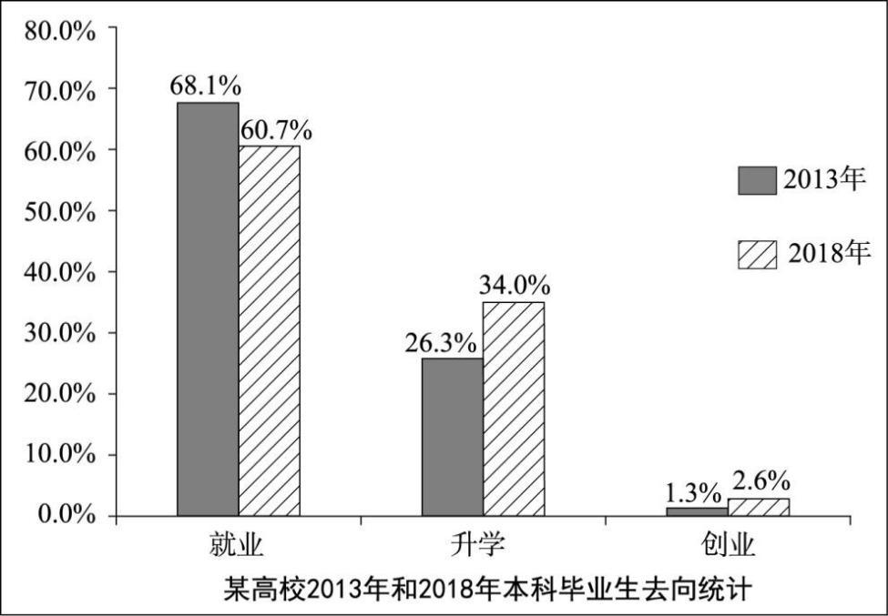

yy-2019-01
📄 原文 · 完整保留，点击展开/收起▾
Read the following text. Choose the best word (s) for each numbered blank and mark A, B, C or D on the ANSWER SHEET. (10 points)
Weighing yourself regularly is a wonderful way to stay aware of any significant weight fluctuations. __1__ , when done too often, this habit can sometimes hurt more than it __2__ .
As for me, weighing myself every day caused me to shift my focus from being generally healthy and physically active, to focusing __3__ on the scale. That was bad to my overall fitness goals. I had gained weight in the form of muscle mass, but thinking only of __4__ the number on the scale, I altered my training program. That conflicted with how I needed to train to __5__ my goals.
I also found that weighing myself daily did not provide an accurate __6__ of the hard work and progress I was making in the gym. It takes about three weeks to a month to notice significant changes in your weight __7__ altering your training program. The most __8__ changes will be observed in skill level, strength and inches lost.
For these __9__ , I stopped weighing myself every day and switched to a bimonthly weighing schedule __10__ . Since weight loss is not my goal, it is less important for me to __11__ my weight each week. Weighing every other week allows me to observe and __12__ any significant weight changes. That tells me whether I need to __13__ my training program.
I use my bimonthly weigh-in __14__ to get information about my nutrition as well. If my training intensity remains the same, but I’m constantly __15__ and dropping weight, this is a __16__ that I need to increase my daily caloricintake.
The __17__ to stop weighing myself every day has done wonders for my overall health, fitness and well-being. I’m experiencing increased zeal for working out since I no longer carry the burden of a __18__ morning weigh-in. I’ve also experienced greater success in achieving my specific fitness goals, __19__ I’m training according to those goals, not the numbers on a scale.
Rather than __20__ over the scale, turn your focus to how you look, feel, how your clothes fit and your overall energy level.
第 1 题 · 本题位置已在原文中高亮（完形空位 / 新题型段落），请结合原文选出正确选项
答案：D
本题讲解：2019 完形第 1 空 · 首段句间逻辑（连接词）
答案：D（However 然而）。
第 0 步：先立机制——连接词的任务：由两句的褒贬方向决定
①句夸、②句贬，一正一反；②句还以 this habit 回指①句的“定期称重”——同一对象先说利、再说弊，这是典型的“欲抑先扬”开篇，两句之间必须由转折词衔接，选项中唯一的转折词是 However。这层转折也不只是语法需要：全文要谈的正是“过度称重的害处”，②句是全文论题的入口，However 负责把话题从“好处”扭到“坏处”。
第 1 步：定位原文
Weighing yourself regularly is a wonderful way to stay aware of any significant weight fluctuations. __1__, when done too often, this habit can sometimes hurt more than it helps.
空 1 位于①②两句之间的连接词位：前句说“定期称重是保持关注体重波动的好办法”（全是褒），后句说“一旦做得太频繁，这个习惯有时会弊大于利”（全是贬）。连接词的任务是向读者宣布两句的真实关系。
第 2 步：找证据——两句一扬一抑，衔接词由真值方向决定
①句的 wonderful way（好办法）与②句的 hurt more than it helps（弊大于利）正面对顶；when done too often 点明“弊”出现的条件。先扬后抑，只有转折词能把话题扭过来。
第 3 步：逐项排除
| 选项 | 词义 | 判定 | 理由与典型误解 |
|---|---|---|---|
| A Besides | 此外 | ✗ 排除 | Besides 引出并列补充的信息（再补一条理由或论据），要求前后同向；这里①②一正一反，“此外”接不上。（典型误解：见前后都在讲“称重”就往并列上想，忘了先校验两句的褒贬方向。） |
| B Therefore | 因此 | ✗ 排除 | Therefore 引出前句导致的结果——但从“定期称重是好办法”推不出“过度称重有害”，因果链不成立；②句是对①句的反转，不是它的结果。 |
| C Otherwise | 否则 | ✗ 排除 | Otherwise 用于“如果不这样做就会（怎样）”的假设性后果；句中 when done too often 是现实条件（作者真的称得太勤了），不是反事实假设。 |
| D However | 然而 | ✓ 当选 | 体现①扬②抑的转折：先肯定定期称重之利，再转而引出过度称重之弊，顺势开启全文论述。 |
代入后的完整句义：However, when done too often, this habit can sometimes hurt more than it helps.（然而，一旦做得太频繁，这个习惯有时就会弊大于利。）
易错点
- 误选 B（Therefore）：把“先说利再说弊”误读成因果链；Therefore 要求“前因后果”真实成立，而“好办法”推不出“有害”。
记忆锚点：前句夸（wonderful way）、后句贬（hurt more than it helps）→ However 欲抑先扬；hurt more than it helps（弊大于利）自带转折信号，选连接词先校验两句的同向/反向。
yy-2019-02
📄 原文 · 完整保留，点击展开/收起▾
Read the following text. Choose the best word (s) for each numbered blank and mark A, B, C or D on the ANSWER SHEET. (10 points)
Weighing yourself regularly is a wonderful way to stay aware of any significant weight fluctuations. __1__ , when done too often, this habit can sometimes hurt more than it __2__ .
As for me, weighing myself every day caused me to shift my focus from being generally healthy and physically active, to focusing __3__ on the scale. That was bad to my overall fitness goals. I had gained weight in the form of muscle mass, but thinking only of __4__ the number on the scale, I altered my training program. That conflicted with how I needed to train to __5__ my goals.
I also found that weighing myself daily did not provide an accurate __6__ of the hard work and progress I was making in the gym. It takes about three weeks to a month to notice significant changes in your weight __7__ altering your training program. The most __8__ changes will be observed in skill level, strength and inches lost.
For these __9__ , I stopped weighing myself every day and switched to a bimonthly weighing schedule __10__ . Since weight loss is not my goal, it is less important for me to __11__ my weight each week. Weighing every other week allows me to observe and __12__ any significant weight changes. That tells me whether I need to __13__ my training program.
I use my bimonthly weigh-in __14__ to get information about my nutrition as well. If my training intensity remains the same, but I’m constantly __15__ and dropping weight, this is a __16__ that I need to increase my daily caloricintake.
The __17__ to stop weighing myself every day has done wonders for my overall health, fitness and well-being. I’m experiencing increased zeal for working out since I no longer carry the burden of a __18__ morning weigh-in. I’ve also experienced greater success in achieving my specific fitness goals, __19__ I’m training according to those goals, not the numbers on a scale.
Rather than __20__ over the scale, turn your focus to how you look, feel, how your clothes fit and your overall energy level.
第 2 题 · 本题位置已在原文中高亮（完形空位 / 新题型段落），请结合原文选出正确选项
答案：A
本题讲解：2019 完形第 2 空 · 比较结构 hurt more than it __（动词）
答案：A（helps 有益；帮助）。
第 0 步：先立机制——more A than B：两端必须同维反向
与 hurt（害）同维度、方向相反的词只有“利（help）”。it 回指 this habit（称重这件事）：合理称重有利（①句 wonderful way 已定性），过度则弊大于利——hurt more than it helps 正是英语里现成的“弊大于利”。所以空格填一个“有益”义动词，且它是与 hurt 配对的那一端。
第 1 步：定位原文
However, when done too often, this habit can sometimes hurt more than it __2__.
空 2 在比较结构 hurt more than it __ 的从句谓语位：hurt（有害）已经站在比较的一端，空格词站在另一端。more A than B 的用法是“A 多于 B”，A、B 必须是同一维度上方向相反的两面。
第 2 步：找证据——①句先给“利”定性，比较两端落成“害 VS 利”
Weighing yourself regularly is a wonderful way to stay aware of any significant weight fluctuations.
①句已给称重定了“利”的性（wonderful way）；②句转折之后，比较的两端自然落成“害 VS 利”。it 回指 this habit，比较双方谈的都是“称重的影响”。
第 3 步：逐项排除
| 选项 | 词义 | 判定 | 理由与典型误解 |
|---|---|---|---|
| A helps | 有益；帮助 | ✓ 当选 | hurt more than it helps = 弊大于利：hurt 与 helps 同维反向，比较成立。 |
| B cares | 关心；在乎 | ✗ 排除 | cares 虽是“积极”词，但“关心”与“有害”不在同一比较维度——“弊大于关心”不成话；比较结构要求两端同维反向。（典型误解：见“积极词”就入围，不做“是否与 hurt 同维”的校验。） |
| C warns | 警告 | ✗ 排除 | 同 B：警告与有害不在一个层面，无法与 hurt 构成“孰多孰少”的比较。 |
| D reduces | 减少；降低 | ✗ 排除 | 利用“减重”义干扰：比较的另一端是 hurt（害），不是“增重”，“弊大于减少”语义不通；且 reduce 表“体重减至”时用于“某人 reduce to + 数字”结构，这里主语 it 指称重习惯，搭配不上。 |
代入后的完整句义：when done too often, this habit can sometimes hurt more than it helps.（一旦做得太频繁，这个习惯有时就会弊大于利。）
易错点
- 误选 D（reduces）：被“称重、减重”的常识带跑，忘了比较的对象是“害（hurt）”不是“重”；“弊大于减少”不成话。
记忆锚点：more A than B 要求 A、B 同维反向：hurt ↔ helps；hurt more than it helps = 弊大于利（现成表达）。
yy-2019-03
📄 原文 · 完整保留，点击展开/收起▾
Read the following text. Choose the best word (s) for each numbered blank and mark A, B, C or D on the ANSWER SHEET. (10 points)
Weighing yourself regularly is a wonderful way to stay aware of any significant weight fluctuations. __1__ , when done too often, this habit can sometimes hurt more than it __2__ .
As for me, weighing myself every day caused me to shift my focus from being generally healthy and physically active, to focusing __3__ on the scale. That was bad to my overall fitness goals. I had gained weight in the form of muscle mass, but thinking only of __4__ the number on the scale, I altered my training program. That conflicted with how I needed to train to __5__ my goals.
I also found that weighing myself daily did not provide an accurate __6__ of the hard work and progress I was making in the gym. It takes about three weeks to a month to notice significant changes in your weight __7__ altering your training program. The most __8__ changes will be observed in skill level, strength and inches lost.
For these __9__ , I stopped weighing myself every day and switched to a bimonthly weighing schedule __10__ . Since weight loss is not my goal, it is less important for me to __11__ my weight each week. Weighing every other week allows me to observe and __12__ any significant weight changes. That tells me whether I need to __13__ my training program.
I use my bimonthly weigh-in __14__ to get information about my nutrition as well. If my training intensity remains the same, but I’m constantly __15__ and dropping weight, this is a __16__ that I need to increase my daily caloricintake.
The __17__ to stop weighing myself every day has done wonders for my overall health, fitness and well-being. I’m experiencing increased zeal for working out since I no longer carry the burden of a __18__ morning weigh-in. I’ve also experienced greater success in achieving my specific fitness goals, __19__ I’m training according to those goals, not the numbers on a scale.
Rather than __20__ over the scale, turn your focus to how you look, feel, how your clothes fit and your overall energy level.
第 3 题 · 本题位置已在原文中高亮（完形空位 / 新题型段落），请结合原文选出正确选项
答案：B
本题讲解：2019 完形第 3 空 · shift from 全面 to __（副词）
答案：B（solely 仅仅，只）。
第 0 步：先立机制——shift from A to B：副词要给 B 盖章
本段在佐证首段结论“过度称重有害”。害处体现在哪？——关注点从“全面”收缩成“片面”：原来同时顾健康、活力、训练表现，现在只剩体重计上的一个数字。能表达“只剩、仅仅”的副词是 solely（义同 only），它与 from 侧的 generally、physically 构成“全面 ↔ 片面”的对照，把这种“退化”写实。
第 1 步：定位原文
As for me, weighing myself every day caused me to shift my focus from being generally healthy and physically active, to focusing __3__ on the scale.
空 3 是修饰 focusing on the scale 的副词。句子骨架是 shift my focus from A to B：注意力从“整体健康 + 身体活跃”（generally 全面的、physically 多维的）转移到“盯着体重计”。副词要刻画转向后的 B 的特征。
第 2 步：找证据——下句定性：这种转变是“坏”的
That was bad to my overall fitness goals.
下句马上定性：这种转变 bad（坏）。坏在哪？坏在从“全面”收缩成“只剩一个数字”。所以空格副词必须与 generally / physically 形成对照，突出“片面”。
第 3 步：逐项排除
| 选项 | 词义 | 判定 | 理由与典型误解 |
|---|---|---|---|
| A initially | 最初，首先 | ✗ 排除 | shift to B 的 B 是转变后的当前状态，“最初”属于 from 的一侧；把“最初”放到转向后的位置，时间顺序拧反。（典型误解：见 shift 就想“从前如何”，忘了空格在 to 之后。） |
| B solely | 仅仅，只 | ✓ 当选 | focusing solely on the scale = 只关注体重计数字：与 from 侧 generally / physically 形成对照，坐实“片面”之弊。 |
| C occasionally | 偶尔 | ✗ 排除 | “偶尔关注体重计”反而说明称重不频繁、不过度，与 weighing myself every day（每天称）直接矛盾，也撑不起“有害”的结论。 |
| D formally | 正式地 | ✗ 排除 | 利用中文“形式上”干扰：focusing formally on... 意为“在形式上关注”，逻辑不通；“正式地关注数字”不成话。 |
代入后的完整句义：to focusing solely on the scale.（转向只关注体重计数字。）
易错点
- 误选 D（formally）：把中文“形式上”硬套进英文；formally 指“场合/方式正式”，focusing formally on... 是“在形式上关注”，不成话。
记忆锚点：shift from 全面（generally / physically）to 片面（solely）：三个副词的对照就是文意的走向；solely = only。
yy-2019-04
📄 原文 · 完整保留，点击展开/收起▾
Read the following text. Choose the best word (s) for each numbered blank and mark A, B, C or D on the ANSWER SHEET. (10 points)
Weighing yourself regularly is a wonderful way to stay aware of any significant weight fluctuations. __1__ , when done too often, this habit can sometimes hurt more than it __2__ .
As for me, weighing myself every day caused me to shift my focus from being generally healthy and physically active, to focusing __3__ on the scale. That was bad to my overall fitness goals. I had gained weight in the form of muscle mass, but thinking only of __4__ the number on the scale, I altered my training program. That conflicted with how I needed to train to __5__ my goals.
I also found that weighing myself daily did not provide an accurate __6__ of the hard work and progress I was making in the gym. It takes about three weeks to a month to notice significant changes in your weight __7__ altering your training program. The most __8__ changes will be observed in skill level, strength and inches lost.
For these __9__ , I stopped weighing myself every day and switched to a bimonthly weighing schedule __10__ . Since weight loss is not my goal, it is less important for me to __11__ my weight each week. Weighing every other week allows me to observe and __12__ any significant weight changes. That tells me whether I need to __13__ my training program.
I use my bimonthly weigh-in __14__ to get information about my nutrition as well. If my training intensity remains the same, but I’m constantly __15__ and dropping weight, this is a __16__ that I need to increase my daily caloricintake.
The __17__ to stop weighing myself every day has done wonders for my overall health, fitness and well-being. I’m experiencing increased zeal for working out since I no longer carry the burden of a __18__ morning weigh-in. I’ve also experienced greater success in achieving my specific fitness goals, __19__ I’m training according to those goals, not the numbers on a scale.
Rather than __20__ over the scale, turn your focus to how you look, feel, how your clothes fit and your overall energy level.
第 4 题 · 本题位置已在原文中高亮（完形空位 / 新题型段落），请结合原文选出正确选项
答案：B
本题讲解：2019 完形第 4 空 · but 转折后的动机动词
答案：B（lowering 降低，减少）。
第 0 步：先立机制——but 是反向开关：增重 ↔ 想降数字
but 要求前后反向：前句“增重”（对健身者是好事——肌肉重量）↔ 后句必然是与之相反的诉求“降数字”。作者的问题正是只想把数字压下去，于是改动训练计划（少练增肌、多刷脂），这与“如何训练才能实现目标”相悖（下句 conflicted with）。空格动词 = “降低（数字）”。
第 1 步：定位原文
I had gained weight in the form of muscle mass, but thinking only of __4__ the number on the scale, I altered my training program.
空 4 在分词结构 thinking only of __ the number 里，整个结构是主句 I altered my training program 的原因状语：因为只想着把体重计上的数字怎样，“我”才改了训练计划。前半句先说“我以肌肉的形式增了重”，中间隔着 but。
第 2 步：找证据——下句给“改计划”定了性：与训练需求冲突
That conflicted with how I needed to train to reach my goals.
下句明说“改计划”是错误动作（conflicted with）；错误动作的动机正是“只盯数字往下压”——空格动词要能解释这个偏执的动机。
第 3 步：逐项排除
| 选项 | 词义 | 判定 | 理由与典型误解 |
|---|---|---|---|
| A recording | 记录 | ✗ 排除 | 记录数字是中性动作，不会把人逼到“改变训练计划”；“记录数字”构不成改计划的动机，“目标→途径”链断裂。（典型误解：把“称重 = 记录数据”的中性动作填进去，既满足不了 but 的反向要求，也给“改计划”提供不了动机。） |
| B lowering | 降低，减少 | ✓ 当选 | thinking only of lowering the number = 一门心思想降数字：与 but 前“增重（肌肉）”构成反向对照，又解释了“改计划”这个行为。 |
| C explaining | 解释 | ✗ 排除 | 解释数字同样驱动不了“改训练计划”；与 but 所要求的“增重 ↔ 降重”反向对比也对不上。 |
| D accepting | 接受 | ✗ 排除 | 接受数字意味着不焦虑、无需改计划，与 thinking only of（偏执于一件事）的语气和下文 conflicted with 的懊悔语境相反。 |
代入后的完整句义：but thinking only of lowering the number on the scale, I altered my training program.（但因为只想着降低体重计上的数字，我改变了训练计划。）
易错点
- 误选 A（recording）：“称重 = 记录数据”是中性动作：but 要求前后反向（增重 ↔ 降数字），且“改计划”需要足够的动机，记录给不了。
记忆锚点：but = 反向开关：gained weight（增重，好事）↔ lowering the number（想降数字，执念）；增肌变重不是错，错在“只看数字”。
yy-2019-05
📄 原文 · 完整保留，点击展开/收起▾
Read the following text. Choose the best word (s) for each numbered blank and mark A, B, C or D on the ANSWER SHEET. (10 points)
Weighing yourself regularly is a wonderful way to stay aware of any significant weight fluctuations. __1__ , when done too often, this habit can sometimes hurt more than it __2__ .
As for me, weighing myself every day caused me to shift my focus from being generally healthy and physically active, to focusing __3__ on the scale. That was bad to my overall fitness goals. I had gained weight in the form of muscle mass, but thinking only of __4__ the number on the scale, I altered my training program. That conflicted with how I needed to train to __5__ my goals.
I also found that weighing myself daily did not provide an accurate __6__ of the hard work and progress I was making in the gym. It takes about three weeks to a month to notice significant changes in your weight __7__ altering your training program. The most __8__ changes will be observed in skill level, strength and inches lost.
For these __9__ , I stopped weighing myself every day and switched to a bimonthly weighing schedule __10__ . Since weight loss is not my goal, it is less important for me to __11__ my weight each week. Weighing every other week allows me to observe and __12__ any significant weight changes. That tells me whether I need to __13__ my training program.
I use my bimonthly weigh-in __14__ to get information about my nutrition as well. If my training intensity remains the same, but I’m constantly __15__ and dropping weight, this is a __16__ that I need to increase my daily caloricintake.
The __17__ to stop weighing myself every day has done wonders for my overall health, fitness and well-being. I’m experiencing increased zeal for working out since I no longer carry the burden of a __18__ morning weigh-in. I’ve also experienced greater success in achieving my specific fitness goals, __19__ I’m training according to those goals, not the numbers on a scale.
Rather than __20__ over the scale, turn your focus to how you look, feel, how your clothes fit and your overall energy level.
第 5 题 · 本题位置已在原文中高亮（完形空位 / 新题型段落），请结合原文选出正确选项
答案：D
本题讲解：2019 完形第 5 空 · train to __ my goals（动词：实现目标）
答案：D（reach 实现，达到）。
第 0 步：先立机制——总—分—总：②④句互为回声
本段②③④句是“总—分—总”：②句总说 That was bad to my overall fitness goals（有害于整体健身目标），③句举例（盯数字、改计划），④句收束 That conflicted with how I needed to train to __ my goals。②④互为回声：bad to my goals ↔ conflicted with (training to) __ my goals，空格 = “实现、达成”。训练与目标之间是“途径 → 达成”的关系：train to reach one's goals。
第 1 步：定位原文
That conflicted with how I needed to train to __5__ my goals.
空 5 是 train to __ my goals 里的动词：训练是为了对目标做什么。句意：我改过的训练计划，与我“需要怎样训练来 __ 目标”相冲突。
第 2 步：找证据——②④句互为回声
That was bad to my overall fitness goals.
②句 bad to my overall fitness goals 直接给出了④句的同义框架：坏的是“达成目标”这件事。空格填“实现、达成”，两句的对应才闭合。
第 3 步：逐项排除
| 选项 | 词义 | 判定 | 理由与典型误解 |
|---|---|---|---|
| A modify | 修改 | ✗ 排除 | “修改目标”不是训练的结果，也与②句“有害于目标的达成”不呼应——②句否定的是“达成”受阻，不是目标本身要改。（典型误解：被第一段 altered my training program 带偏成“改目标”；文中“目标”始终是要被实现的，出问题的是达成手段。） |
| B set | 树立，设置 | ✗ 排除 | “设立目标”发生在训练之前，不是 train to 引出的结果；“训练是为了设立目标”逻辑颠倒。 |
| C review | 回顾 | ✗ 排除 | “回顾目标”与训练之间构不成“途径 → 结果”关系，也与②句的“有害于目标”无法呼应。 |
| D reach | 实现，达到 | ✓ 当选 | reach my goals = 实现目标：与②句 bad to my goals 呼应——改错了计划，就达不成目标。 |
代入后的完整句义：That conflicted with how I needed to train to reach my goals.（这与我实现目标所需要的训练方式相冲突。）
易错点
- 误选 A（modify）：被“改变训练计划”带偏成“改目标”；训练的宾语方向是“达成目标”，不是“修改目标”。
记忆锚点：②④句互为回声：bad to my overall fitness goals ↔ train to reach my goals；reach one's goals = 实现目标（固定搭配）。
yy-2019-06
📄 原文 · 完整保留，点击展开/收起▾
Read the following text. Choose the best word (s) for each numbered blank and mark A, B, C or D on the ANSWER SHEET. (10 points)
Weighing yourself regularly is a wonderful way to stay aware of any significant weight fluctuations. __1__ , when done too often, this habit can sometimes hurt more than it __2__ .
As for me, weighing myself every day caused me to shift my focus from being generally healthy and physically active, to focusing __3__ on the scale. That was bad to my overall fitness goals. I had gained weight in the form of muscle mass, but thinking only of __4__ the number on the scale, I altered my training program. That conflicted with how I needed to train to __5__ my goals.
I also found that weighing myself daily did not provide an accurate __6__ of the hard work and progress I was making in the gym. It takes about three weeks to a month to notice significant changes in your weight __7__ altering your training program. The most __8__ changes will be observed in skill level, strength and inches lost.
For these __9__ , I stopped weighing myself every day and switched to a bimonthly weighing schedule __10__ . Since weight loss is not my goal, it is less important for me to __11__ my weight each week. Weighing every other week allows me to observe and __12__ any significant weight changes. That tells me whether I need to __13__ my training program.
I use my bimonthly weigh-in __14__ to get information about my nutrition as well. If my training intensity remains the same, but I’m constantly __15__ and dropping weight, this is a __16__ that I need to increase my daily caloricintake.
The __17__ to stop weighing myself every day has done wonders for my overall health, fitness and well-being. I’m experiencing increased zeal for working out since I no longer carry the burden of a __18__ morning weigh-in. I’ve also experienced greater success in achieving my specific fitness goals, __19__ I’m training according to those goals, not the numbers on a scale.
Rather than __20__ over the scale, turn your focus to how you look, feel, how your clothes fit and your overall energy level.
第 6 题 · 本题位置已在原文中高亮（完形空位 / 新题型段落），请结合原文选出正确选项
答案：B
本题讲解：2019 完形第 6 空 · 称重与锻炼成果的关系（名词）
答案：B（depiction 描述；反映）。
第 0 步：先立机制——称重数字是锻炼成果的“镜子”
称重是“监测锻炼成果”的手段——数字是成果的一面“镜子/照片”，即对成果的“反映、呈现”。作者抱怨的正是这面镜子失真：体重变化滞后（下句：三周到一个月才显现），每天照镜子照不出真东西。accurate depiction of... = 对……的准确描绘/反映。I also found 承接第二段：这是过度称重的第二条弊端。
第 1 步：定位原文
I also found that weighing myself daily did not provide an accurate __6__ of the hard work and progress I was making in the gym.
空 6 是 provide an accurate __ of... 里的名词：每日称重不能对“我在健身房付出的努力和进步”提供准确的什么。名词要说明“称重数字”与“锻炼成果”之间的作用关系。
第 2 步：找证据——下句揭示“照不出”的原因：体重滞后
It takes about three weeks to a month to notice significant changes in your weight.
下句解释了“照不出”的原因：体重变化要三周到一个月才显现——每日称重这面“镜子”反映不了当下的真实成果，故空格取“描绘、反映”义的名词。
第 3 步：逐项排除
| 选项 | 词义 | 判定 | 理由与典型误解 |
|---|---|---|---|
| A definition | 定义 | ✗ 排除 | “下定义”是对事物本质属性的说明，文中无意解释“努力和进步”的概念。 |
| B depiction | 描述；反映 | ✓ 当选 | provide an accurate depiction of the hard work and progress = 准确反映付出与进步，正是“称重数字 ↔ 锻炼成果”的关系。 |
| C distribution | 分配；分布 | ✗ 排除 | 利用中文“安排、规划”的联想干扰：distribution 实指“把物资分发/共享给群体”，与“称重反映成果”无关。 |
| D prediction | 预测 | ✗ 排除 | prediction of + 未来情形（如 a prediction of a Republican victory）；而 hard work and progress I was making 是“当下正在发生”的事，不是未来，谈不上预测。 |
代入后的完整句义：weighing myself daily did not provide an accurate depiction of the hard work and progress I was making in the gym.（每日称重无法准确反映我在健身房付出的努力和取得的进步。）
易错点
- 误选 D（prediction）：把“称重”想成“预测走势”；但 of 后是“当下的努力与进步”（I was making），不是未来事件。
记忆锚点：称重数字是锻炼成果的“照片”：depiction（描绘、反映）；镜子失真的原因是体重变化滞后三周到一个月。
yy-2019-07
📄 原文 · 完整保留，点击展开/收起▾
Read the following text. Choose the best word (s) for each numbered blank and mark A, B, C or D on the ANSWER SHEET. (10 points)
Weighing yourself regularly is a wonderful way to stay aware of any significant weight fluctuations. __1__ , when done too often, this habit can sometimes hurt more than it __2__ .
As for me, weighing myself every day caused me to shift my focus from being generally healthy and physically active, to focusing __3__ on the scale. That was bad to my overall fitness goals. I had gained weight in the form of muscle mass, but thinking only of __4__ the number on the scale, I altered my training program. That conflicted with how I needed to train to __5__ my goals.
I also found that weighing myself daily did not provide an accurate __6__ of the hard work and progress I was making in the gym. It takes about three weeks to a month to notice significant changes in your weight __7__ altering your training program. The most __8__ changes will be observed in skill level, strength and inches lost.
For these __9__ , I stopped weighing myself every day and switched to a bimonthly weighing schedule __10__ . Since weight loss is not my goal, it is less important for me to __11__ my weight each week. Weighing every other week allows me to observe and __12__ any significant weight changes. That tells me whether I need to __13__ my training program.
I use my bimonthly weigh-in __14__ to get information about my nutrition as well. If my training intensity remains the same, but I’m constantly __15__ and dropping weight, this is a __16__ that I need to increase my daily caloricintake.
The __17__ to stop weighing myself every day has done wonders for my overall health, fitness and well-being. I’m experiencing increased zeal for working out since I no longer carry the burden of a __18__ morning weigh-in. I’ve also experienced greater success in achieving my specific fitness goals, __19__ I’m training according to those goals, not the numbers on a scale.
Rather than __20__ over the scale, turn your focus to how you look, feel, how your clothes fit and your overall energy level.
第 7 题 · 本题位置已在原文中高亮（完形空位 / 新题型段落），请结合原文选出正确选项
答案：A
本题讲解：2019 完形第 7 空 · 因果介词短语
答案：A（due to 由于）。
第 0 步：先立机制——手段与结果的因果对
沿用第 4 题确立的事实：作者改变训练计划，正是为了改变体重（压数字）。所以“改变训练计划（因）→ 体重变化（果）”：因改变训练计划而产生的明显体重变化，要三周到一个月才看得到。能引出原因、且可接动名词 altering 的介词短语是 due to（由于）。
第 1 步：定位原文
It takes about three weeks to a month to notice significant changes in your weight __7__ altering your training program.
空 7 引出 altering your training program（改变训练计划），说明它与“体重出现明显变化”的关系。主干：注意到明显的体重变化需要三周到一个月。
第 2 步：找证据——第二段已锁定因果：改计划 → 变体重
thinking only of lowering the number on the scale, I altered my training program.
第二段已确立“改计划 → 为了改变体重”：改训练计划是手段，体重变化是结果。空格介词短语要挑明这层因果，方向不能反。
第 3 步：逐项排除
| 选项 | 词义 | 判定 | 理由与典型误解 |
|---|---|---|---|
| A due to | 由于 | ✓ 当选 | due to altering your training program = 由于改变训练计划（而出现的体重变化）：因果方向正确，且可接动名词。 |
| B regardless of | 不顾，不管 | ✗ 排除 | “不管是否改变训练计划，都要三周才显现”——把二者的联系掐断；可改计划的目的就是改变体重，文意不允许“无关”。 |
| C aside from | 除……以外 | ✗ 排除 | “除改变计划之外（还要三周）”——“改变计划”与“变化显现耗时”不在同一维度，加不出并列。 |
| D along with | 与……一道 | ✗ 排除 | 利用中文“随着”干扰：along with 只表“伴随、一起”，不传因果；且其后习惯接名词（如 along with two other children），接分词 altering 不妥。 |
代入后的完整句义：significant changes in your weight due to altering your training program（因改变训练计划而产生的明显体重变化）
易错点
- 误选 D（along with）：中文“随着训练计划的改变”顺口就对号；英文 along with 只有“伴随”义，没有因果义。
记忆锚点：认出“手段 → 效果”就选因果词：改计划（因）→ 体重变化（果）→ due to；along with ≠ “随着”，它只是“和……一起”。
yy-2019-08
📄 原文 · 完整保留，点击展开/收起▾
Read the following text. Choose the best word (s) for each numbered blank and mark A, B, C or D on the ANSWER SHEET. (10 points)
Weighing yourself regularly is a wonderful way to stay aware of any significant weight fluctuations. __1__ , when done too often, this habit can sometimes hurt more than it __2__ .
As for me, weighing myself every day caused me to shift my focus from being generally healthy and physically active, to focusing __3__ on the scale. That was bad to my overall fitness goals. I had gained weight in the form of muscle mass, but thinking only of __4__ the number on the scale, I altered my training program. That conflicted with how I needed to train to __5__ my goals.
I also found that weighing myself daily did not provide an accurate __6__ of the hard work and progress I was making in the gym. It takes about three weeks to a month to notice significant changes in your weight __7__ altering your training program. The most __8__ changes will be observed in skill level, strength and inches lost.
For these __9__ , I stopped weighing myself every day and switched to a bimonthly weighing schedule __10__ . Since weight loss is not my goal, it is less important for me to __11__ my weight each week. Weighing every other week allows me to observe and __12__ any significant weight changes. That tells me whether I need to __13__ my training program.
I use my bimonthly weigh-in __14__ to get information about my nutrition as well. If my training intensity remains the same, but I’m constantly __15__ and dropping weight, this is a __16__ that I need to increase my daily caloricintake.
The __17__ to stop weighing myself every day has done wonders for my overall health, fitness and well-being. I’m experiencing increased zeal for working out since I no longer carry the burden of a __18__ morning weigh-in. I’ve also experienced greater success in achieving my specific fitness goals, __19__ I’m training according to those goals, not the numbers on a scale.
Rather than __20__ over the scale, turn your focus to how you look, feel, how your clothes fit and your overall energy level.
第 8 题 · 本题位置已在原文中高亮（完形空位 / 新题型段落），请结合原文选出正确选项
答案：D
本题讲解：2019 完形第 8 空 · 慢 VS 快的对比（形容词）
答案：D（immediate 立即的，直接的）。
第 0 步：先立机制——两句对仗的对比槽：慢 VS 快
②③两句完全对仗：notice changes in your weight ↔ changes be observed in skill level, strength...，却各配一个时间刻度——体重：三周到一个月（慢）；技能/力量/围度：最 __（快）。两句在对比“慢显现的变化 VS 最快显现的变化”。与 three weeks to a month（远期）相对的刻度就是“立即、最快”：immediate。
第 1 步：定位原文
It takes about three weeks to a month to notice significant changes in your weight due to altering your training program. The most __8__ changes will be observed in skill level, strength and inches lost.
空 8 修饰 changes：最 __ 的变化将出现在技能水平、力量和身体围度上。它紧跟着上一句“体重变化要三周到一个月才看得到”。
第 2 步：找证据——对比槽的两端：三周到一个月 ↔ 最 __
It takes about three weeks to a month to notice significant changes in your weight.
②句给出“慢”的锚点（三周到一个月），③句 the most __ 必须落在“快”的一端，两句的对比才成立。
第 3 步：逐项排除
| 选项 | 词义 | 判定 | 理由与典型误解 |
|---|---|---|---|
| A orderly | 有序的 | ✗ 排除 | orderly 可与 change 搭配（有序的变化），但上文没有“无序/有序”话题，对比不成立。 |
| B rigid | 严格死板的 | ✗ 排除 | rigid 通常修饰规定、办法或人的态度，修饰 change 不构成有效语义。 |
| C precise | 精确的 | ✗ 排除 | 利用“技能、力量、围度比体重数字更能准确反映成果”的常识干扰；但文意是“显现快慢”的时间对比，不是“精不精确”；precise/rigid 与 change 搭配时语义不成立。 |
| D immediate | 立即的，直接的 | ✓ 当选 | The most immediate changes = 最快（最直接）显现的变化，与“三周到一个月”构成远/近对照。 |
代入后的完整句义：The most immediate changes will be observed in skill level, strength and inches lost.（最快显现的变化将体现在技能水平、力量和身体围度上。）
易错点
- 误选 C（precise）：被“其他指标比体重数字更准”的常识带走；两句比的是显现快慢，不是准不准。
记忆锚点：两句对仗找对比槽：three weeks to a month（慢）↔ the most immediate（快）；健身真相：体重最迟显效，技能/力量/围度最先见效。
yy-2019-09
📄 原文 · 完整保留，点击展开/收起▾
Read the following text. Choose the best word (s) for each numbered blank and mark A, B, C or D on the ANSWER SHEET. (10 points)
Weighing yourself regularly is a wonderful way to stay aware of any significant weight fluctuations. __1__ , when done too often, this habit can sometimes hurt more than it __2__ .
As for me, weighing myself every day caused me to shift my focus from being generally healthy and physically active, to focusing __3__ on the scale. That was bad to my overall fitness goals. I had gained weight in the form of muscle mass, but thinking only of __4__ the number on the scale, I altered my training program. That conflicted with how I needed to train to __5__ my goals.
I also found that weighing myself daily did not provide an accurate __6__ of the hard work and progress I was making in the gym. It takes about three weeks to a month to notice significant changes in your weight __7__ altering your training program. The most __8__ changes will be observed in skill level, strength and inches lost.
For these __9__ , I stopped weighing myself every day and switched to a bimonthly weighing schedule __10__ . Since weight loss is not my goal, it is less important for me to __11__ my weight each week. Weighing every other week allows me to observe and __12__ any significant weight changes. That tells me whether I need to __13__ my training program.
I use my bimonthly weigh-in __14__ to get information about my nutrition as well. If my training intensity remains the same, but I’m constantly __15__ and dropping weight, this is a __16__ that I need to increase my daily caloricintake.
The __17__ to stop weighing myself every day has done wonders for my overall health, fitness and well-being. I’m experiencing increased zeal for working out since I no longer carry the burden of a __18__ morning weigh-in. I’ve also experienced greater success in achieving my specific fitness goals, __19__ I’m training according to those goals, not the numbers on a scale.
Rather than __20__ over the scale, turn your focus to how you look, feel, how your clothes fit and your overall energy level.
第 9 题 · 本题位置已在原文中高亮（完形空位 / 新题型段落），请结合原文选出正确选项
答案：C
本题讲解：2019 完形第 9 空 · For these __（名词 + 固定搭配）
答案：C（reasons 原因，理由）。
第 0 步：先立机制——改变做法需要理由：these 回指上文
上文第二、三段刚列举了过度称重的两条弊端：误导健身方向（盯数字、乱改计划）、无法准确反映锻炼成果（体重变化滞后）。“做法有弊 → 弃之改之”，因果闭合。For these reasons（出于这些原因）既是固定搭配，又正好接住复数 these。
第 1 步：定位原文
For these __9__, I stopped weighing myself every day and switched to a bimonthly weighing schedule instead.
空 9 在 For these __ 状语里，修饰整个主句：“我”停止每日称重、改为每月称两次。these 是复数回指——上文的某些东西，正是“改变做法”的理由。
第 2 步：找证据——these 回指上文两条弊端
That was bad to my overall fitness goals... did not provide an accurate depiction of the hard work and progress...
第二、三段各摆了一条弊端（bad to my overall fitness goals；did not provide an accurate depiction...）：两条理由明明白白摆在“改变”之前。
第 3 步：逐项排除
| 选项 | 词义 | 判定 | 理由与典型误解 |
|---|---|---|---|
| A claims | 声称，主张 | ✗ 排除 | claims 是“某人主张的具体内容”，上文是客观弊端陈述，不是谁的主张；for these claims 表意不明。 |
| B judgments | 判断（力） | ✗ 排除 | judgments 是主观评价，同样不能充当“改变做法”的依据；语义与搭配双输。 |
| C reasons | 原因，理由 | ✓ 当选 | For these reasons = 出于这些原因：回指上文两条弊端，因果链完整，for...reasons 也是常见搭配。 |
| D methods | 方法 | ✗ 排除 | “出于这些方法（所以改变做法）”不通——方法是“怎么做”，不是“为什么做”。 |
代入后的完整句义：For these reasons, I stopped weighing myself every day and switched to a bimonthly weighing schedule instead.（出于这些原因，我不再每日称重，而是改为每月称两次。）
易错点
- 误选 D（methods）：见“改为 bimonthly schedule”就想到“方法”；For these... 解释的是“为什么改”，不是“怎么改”。
记忆锚点：these 复数回指上文列举；上文列弊端 + 下句改行为 → For these reasons（for...reasons 固定搭配）。
yy-2019-10
📄 原文 · 完整保留，点击展开/收起▾
Read the following text. Choose the best word (s) for each numbered blank and mark A, B, C or D on the ANSWER SHEET. (10 points)
Weighing yourself regularly is a wonderful way to stay aware of any significant weight fluctuations. __1__ , when done too often, this habit can sometimes hurt more than it __2__ .
As for me, weighing myself every day caused me to shift my focus from being generally healthy and physically active, to focusing __3__ on the scale. That was bad to my overall fitness goals. I had gained weight in the form of muscle mass, but thinking only of __4__ the number on the scale, I altered my training program. That conflicted with how I needed to train to __5__ my goals.
I also found that weighing myself daily did not provide an accurate __6__ of the hard work and progress I was making in the gym. It takes about three weeks to a month to notice significant changes in your weight __7__ altering your training program. The most __8__ changes will be observed in skill level, strength and inches lost.
For these __9__ , I stopped weighing myself every day and switched to a bimonthly weighing schedule __10__ . Since weight loss is not my goal, it is less important for me to __11__ my weight each week. Weighing every other week allows me to observe and __12__ any significant weight changes. That tells me whether I need to __13__ my training program.
I use my bimonthly weigh-in __14__ to get information about my nutrition as well. If my training intensity remains the same, but I’m constantly __15__ and dropping weight, this is a __16__ that I need to increase my daily caloricintake.
The __17__ to stop weighing myself every day has done wonders for my overall health, fitness and well-being. I’m experiencing increased zeal for working out since I no longer carry the burden of a __18__ morning weigh-in. I’ve also experienced greater success in achieving my specific fitness goals, __19__ I’m training according to those goals, not the numbers on a scale.
Rather than __20__ over the scale, turn your focus to how you look, feel, how your clothes fit and your overall energy level.
第 10 题 · 本题位置已在原文中高亮（完形空位 / 新题型段落），请结合原文选出正确选项
答案：A
本题讲解：2019 完形第 10 空 · 句末替代副词
答案：A（instead 代替；反而）。
第 0 步：先立机制——stop A + switch to B：替代关系
stop A + switch to B：新方式取代旧方式，是“取舍/替代”关系。instead 表替代的句末用法：sb doesn't do sth but does sth else instead（不做 A，而做 B 代替）。三个信号——stopped、switched to、句末空位——同指替代。
第 1 步：定位原文
For these reasons, I stopped weighing myself every day and switched to a bimonthly weighing schedule __10__.
空 10 是句末副词。句内有两个元素：旧方式（每日称重，被 stop）与新方式（每月称两次，由 switched to 引出）。句末副词负责标明二者的关系。
第 2 步：找证据——一弃一取，替代关系已写明
I stopped weighing myself every day and switched to a bimonthly weighing schedule.
stopped（弃）+ switched to（取）：一弃一取已经写明，句末副词只需给这层替代关系“盖章”。
第 3 步：逐项排除
| 选项 | 词义 | 判定 | 理由与典型误解 |
|---|---|---|---|
| A instead | 代替；反而 | ✓ 当选 | switched to a bimonthly weighing schedule instead = 而是改为每月称两次：替代关系成立。 |
| B though | 虽然；不过 | ✗ 排除 | 句末 though = “不过”，用于补充弱化前句（如 I'd love to, though.）；本句是“弃 A 改 B”的过程陈述，与上文也没有“转折弱化”关系。 |
| C again | 又，再一次 | ✗ 排除 | again 表动作重复；由上文可知这是作者第一次调整称重频率，谈不上“又”。 |
| D indeed | 的确 | ✗ 排除 | indeed 强调本句陈述的真实性或补强前文，与“替代”无关。 |
代入后的完整句义：I stopped weighing myself every day and switched to a bimonthly weighing schedule instead.（我不再每天称重，而是改为每月称两次。）
易错点
- 误选 B（though）：见句末副词就想到“不过/然而”；句末 though 管的是“弱化补充前句”，管不了“弃 A 取 B”的替代。
记忆锚点：stop A + switch to B + 句末 instead：三个信号同指“替代”；句末 though ≠ however，只是“不过”的弱补充。
yy-2019-11
📄 原文 · 完整保留，点击展开/收起▾
Read the following text. Choose the best word (s) for each numbered blank and mark A, B, C or D on the ANSWER SHEET. (10 points)
Weighing yourself regularly is a wonderful way to stay aware of any significant weight fluctuations. __1__ , when done too often, this habit can sometimes hurt more than it __2__ .
As for me, weighing myself every day caused me to shift my focus from being generally healthy and physically active, to focusing __3__ on the scale. That was bad to my overall fitness goals. I had gained weight in the form of muscle mass, but thinking only of __4__ the number on the scale, I altered my training program. That conflicted with how I needed to train to __5__ my goals.
I also found that weighing myself daily did not provide an accurate __6__ of the hard work and progress I was making in the gym. It takes about three weeks to a month to notice significant changes in your weight __7__ altering your training program. The most __8__ changes will be observed in skill level, strength and inches lost.
For these __9__ , I stopped weighing myself every day and switched to a bimonthly weighing schedule __10__ . Since weight loss is not my goal, it is less important for me to __11__ my weight each week. Weighing every other week allows me to observe and __12__ any significant weight changes. That tells me whether I need to __13__ my training program.
I use my bimonthly weigh-in __14__ to get information about my nutrition as well. If my training intensity remains the same, but I’m constantly __15__ and dropping weight, this is a __16__ that I need to increase my daily caloricintake.
The __17__ to stop weighing myself every day has done wonders for my overall health, fitness and well-being. I’m experiencing increased zeal for working out since I no longer carry the burden of a __18__ morning weigh-in. I’ve also experienced greater success in achieving my specific fitness goals, __19__ I’m training according to those goals, not the numbers on a scale.
Rather than __20__ over the scale, turn your focus to how you look, feel, how your clothes fit and your overall energy level.
第 11 题 · 本题位置已在原文中高亮（完形空位 / 新题型段落），请结合原文选出正确选项
答案：A
本题讲解：2019 完形第 11 空 · 被降级的旧习惯（动词）
答案：A（track 跟踪；追踪）。
第 0 步：先立机制——less important 的对象 = 被抛弃的旧行为
less important 表明空格动作是“被弱化重要性”的那件事——它必须与上句被抛弃的 weighing myself every day 对应：那种“高频观察、盯住体重变化”的行为，用一个词说就是 track（跟踪；追踪[表现或进展]）。这也与全文首句 stay aware of any significant weight fluctuations（随时留意体重波动）呼应：track = 保持关注。
第 1 步：定位原文
Since weight loss is not my goal, it is less important for me to __11__ my weight each week.
空 11 是 to __ my weight 的动词。句意：既然减肥不是目标，那么每周 __ 体重对我就没那么重要了。被“降级”的这个动作，应当就是被作者抛弃的旧行为。
第 2 步：找证据——被降级的动作 = 旧行为本尊
I stopped weighing myself every day and switched to a bimonthly weighing schedule instead.
上句刚抛弃“每日称重”，本句解释新心态：“每周跟踪体重”不再重要——空格动词就是那个被降级的旧动作本身。
第 3 步：逐项排除
| 选项 | 词义 | 判定 | 理由与典型误解 |
|---|---|---|---|
| A track | 跟踪；追踪 | ✓ 当选 | track my weight = 跟踪体重（的变化）：正对应每日称重这种“高频监测”，与首段 stay aware of...fluctuations 同义呼应。 |
| B overlook | 忽视 | ✗ 排除 | 若填 overlook，“忽视体重不那么重要”＝反而该重视“忽视”？语义拧成一团；且 overlook 的“监督”义指监督管理他人工作，不是自我监测。（典型误解：把“不重要”直接等同“忽视”；空格填的是那个被降级的行为，不是对行为的态度。） |
| C conceal | 隐藏；隐瞒 | ✗ 排除 | 臆想出“怕别人知道体重”的剧情，文中毫无此语境。 |
| D report | 汇报；公布 | ✗ 排除 | report 面向“上级/公众”，而这里是自我监测，没有汇报对象。 |
代入后的完整句义：it is less important for me to track my weight each week.（每周追踪体重对我来说就没那么重要了。）
易错点
- 误选 B（overlook）：把“不重要”直接等同“忽视”；空格要填的是被降级的那个行为（跟踪体重），不是对它的态度。
记忆锚点：被降级的动作 = 旧行为本尊：weighing every day ↔ track weight each week；track = 跟踪（表现、进展）。
yy-2019-12
📄 原文 · 完整保留，点击展开/收起▾
Read the following text. Choose the best word (s) for each numbered blank and mark A, B, C or D on the ANSWER SHEET. (10 points)
Weighing yourself regularly is a wonderful way to stay aware of any significant weight fluctuations. __1__ , when done too often, this habit can sometimes hurt more than it __2__ .
As for me, weighing myself every day caused me to shift my focus from being generally healthy and physically active, to focusing __3__ on the scale. That was bad to my overall fitness goals. I had gained weight in the form of muscle mass, but thinking only of __4__ the number on the scale, I altered my training program. That conflicted with how I needed to train to __5__ my goals.
I also found that weighing myself daily did not provide an accurate __6__ of the hard work and progress I was making in the gym. It takes about three weeks to a month to notice significant changes in your weight __7__ altering your training program. The most __8__ changes will be observed in skill level, strength and inches lost.
For these __9__ , I stopped weighing myself every day and switched to a bimonthly weighing schedule __10__ . Since weight loss is not my goal, it is less important for me to __11__ my weight each week. Weighing every other week allows me to observe and __12__ any significant weight changes. That tells me whether I need to __13__ my training program.
I use my bimonthly weigh-in __14__ to get information about my nutrition as well. If my training intensity remains the same, but I’m constantly __15__ and dropping weight, this is a __16__ that I need to increase my daily caloricintake.
The __17__ to stop weighing myself every day has done wonders for my overall health, fitness and well-being. I’m experiencing increased zeal for working out since I no longer carry the burden of a __18__ morning weigh-in. I’ve also experienced greater success in achieving my specific fitness goals, __19__ I’m training according to those goals, not the numbers on a scale.
Rather than __20__ over the scale, turn your focus to how you look, feel, how your clothes fit and your overall energy level.
第 12 题 · 本题位置已在原文中高亮（完形空位 / 新题型段落），请结合原文选出正确选项
答案：D
本题讲解：2019 完形第 12 空 · observe and __（短语动词）
答案：D（account for 解释；查明）。
第 0 步：先立机制——隔周称重的好处：发现 + 查明
本句的好处要与上段“每日称重的弊端”对照着看：每日称，变化滞后，数字说明不了问题；隔周称，变化已显现——先 observe（发现变化），再 __（搞清变化从哪来：是训练效果还是饮食问题），从而判断是否调整方案（下句 That tells me whether I need to adjust）。能接“变化”并表达“查明原因”的短语是 account for（解释；查明原因）。
第 1 步：定位原文
Weighing every other week allows me to observe and __12__ any significant weight changes.
空 12 与 observe 由 and 并列，共同说明隔周称重的好处（allows me to...）：能发现并 __ 任何明显的体重变化。
第 2 步：找证据——下句点明“查明原因”的用途
That tells me whether I need to adjust my training program.
下句点明用途：搞清变化的原因，才能决定要不要调整训练计划——“发现 + 查明”两步缺一不可。
第 3 步：逐项排除
| 选项 | 词义 | 判定 | 理由与典型误解 |
|---|---|---|---|
| A depend on | 取决于；依赖 | ✗ 排除 | “依赖体重变化”？前文没有“依赖变化而做的某事/某人”，宾语与动词间无着落。 |
| B approve of | 赞成，认可 | ✗ 排除 | 惯性思维“科学称重让人理性看待（认可）体重波动”，但 significant（大幅的）变化无可“赞成”；approve of 后须接明确对象（如 approve of her marriage），接“变化”语义不明。 |
| C hold onto | 抓紧，保住 | ✗ 排除 | 利用中文“守住”臆断为“保持体重不变”，但空格宾语是“变化（changes）”而非“体重”；hold onto sth 指“不放弃/不转送某物”，搭配与语义都不成立。 |
| D account for | 解释；查明 | ✓ 当选 | observe and account for any significant weight changes = 发现并解释体重的任何明显变化。 |
代入后的完整句义：Weighing every other week allows me to observe and account for any significant weight changes.（隔周称重让我能发现并解释体重的任何明显变化。）
易错点
- 误选 C（hold onto）：被“保住体重”的中文直觉带走；宾语是 changes（变化），“保住变化”不成话。
记忆锚点：observe（看到现象）+ account for（讲清原因）两步连用；account for 此处 = 解释，不是“占（比例）”。
yy-2019-13
📄 原文 · 完整保留，点击展开/收起▾
Read the following text. Choose the best word (s) for each numbered blank and mark A, B, C or D on the ANSWER SHEET. (10 points)
Weighing yourself regularly is a wonderful way to stay aware of any significant weight fluctuations. __1__ , when done too often, this habit can sometimes hurt more than it __2__ .
As for me, weighing myself every day caused me to shift my focus from being generally healthy and physically active, to focusing __3__ on the scale. That was bad to my overall fitness goals. I had gained weight in the form of muscle mass, but thinking only of __4__ the number on the scale, I altered my training program. That conflicted with how I needed to train to __5__ my goals.
I also found that weighing myself daily did not provide an accurate __6__ of the hard work and progress I was making in the gym. It takes about three weeks to a month to notice significant changes in your weight __7__ altering your training program. The most __8__ changes will be observed in skill level, strength and inches lost.
For these __9__ , I stopped weighing myself every day and switched to a bimonthly weighing schedule __10__ . Since weight loss is not my goal, it is less important for me to __11__ my weight each week. Weighing every other week allows me to observe and __12__ any significant weight changes. That tells me whether I need to __13__ my training program.
I use my bimonthly weigh-in __14__ to get information about my nutrition as well. If my training intensity remains the same, but I’m constantly __15__ and dropping weight, this is a __16__ that I need to increase my daily caloricintake.
The __17__ to stop weighing myself every day has done wonders for my overall health, fitness and well-being. I’m experiencing increased zeal for working out since I no longer carry the burden of a __18__ morning weigh-in. I’ve also experienced greater success in achieving my specific fitness goals, __19__ I’m training according to those goals, not the numbers on a scale.
Rather than __20__ over the scale, turn your focus to how you look, feel, how your clothes fit and your overall energy level.
第 13 题 · 本题位置已在原文中高亮（完形空位 / 新题型段落），请结合原文选出正确选项
答案：B
本题讲解：2019 完形第 13 空 · whether I need to __（动词：近义复现）
答案：B（adjust 调整；适应）。
第 0 步：先立机制——称重服务训练决策：调整而非确认
That 回指上句“发现并解释明显的体重变化”。称重是手段，服务的是训练决策——第二段已有先例：作者曾因盯数字而 altered my training program（乱改）。理性版本应该是：体重变化说明问题后，决定“是否需要调整训练计划”。空格与第二段的 altered 近义复现 → adjust。
第 1 步：定位原文
That tells me whether I need to __13__ my training program.
空 13 是 whether I need to __ my training program 的动词：那个发现（That）告诉我是否需要 __ 训练计划。
第 2 步：找证据——altered（乱改）→ adjust（理性调）近义复现
thinking only of lowering the number on the scale, I altered my training program.
第二段的负面案例：盯数字 → altered（乱改）训练计划。本段同位置换上理性动作：根据体重变化决定“是否调整”。altered ↔ adjust 近义复现直接给出答案。
第 3 步：逐项排除
| 选项 | 词义 | 判定 | 理由与典型误解 |
|---|---|---|---|
| A share | 分享 | ✗ 排除 | 语境是“我”与自己的训练计划，没有交流分享的对象。 |
| B adjust | 调整 | ✓ 当选 | adjust my training program = 调整训练计划：与第二段 altered 近义复现，且符合“依据体重变化做决策”的文意。 |
| C confirm | 证实；确认 | ✗ 排除 | confirm 用于“证实某事为真/确认安排”（如 confirm the date）；文中的问题不是“计划要不要确认”，而是“计划要不要调整”。 |
| D prepare | 准备 | ✗ 排除 | “是否需要准备训练计划”暗示考虑的是“练不练”，而文中纠结的是“怎么调”，有悖文意。 |
代入后的完整句义：That tells me whether I need to adjust my training program.（这告诉我是否需要调整训练计划。）
易错点
- 误选 C（confirm）：“确认计划”貌似通顺；confirm 管“真不真/定没定”，管不了“要不要调”。
记忆锚点：altered（第二段，盲改）→ adjust（第四段，理性调）：同义复现直接送分；称重是“体检”，动作是“调计划”。
yy-2019-14
📄 原文 · 完整保留，点击展开/收起▾
Read the following text. Choose the best word (s) for each numbered blank and mark A, B, C or D on the ANSWER SHEET. (10 points)
Weighing yourself regularly is a wonderful way to stay aware of any significant weight fluctuations. __1__ , when done too often, this habit can sometimes hurt more than it __2__ .
As for me, weighing myself every day caused me to shift my focus from being generally healthy and physically active, to focusing __3__ on the scale. That was bad to my overall fitness goals. I had gained weight in the form of muscle mass, but thinking only of __4__ the number on the scale, I altered my training program. That conflicted with how I needed to train to __5__ my goals.
I also found that weighing myself daily did not provide an accurate __6__ of the hard work and progress I was making in the gym. It takes about three weeks to a month to notice significant changes in your weight __7__ altering your training program. The most __8__ changes will be observed in skill level, strength and inches lost.
For these __9__ , I stopped weighing myself every day and switched to a bimonthly weighing schedule __10__ . Since weight loss is not my goal, it is less important for me to __11__ my weight each week. Weighing every other week allows me to observe and __12__ any significant weight changes. That tells me whether I need to __13__ my training program.
I use my bimonthly weigh-in __14__ to get information about my nutrition as well. If my training intensity remains the same, but I’m constantly __15__ and dropping weight, this is a __16__ that I need to increase my daily caloricintake.
The __17__ to stop weighing myself every day has done wonders for my overall health, fitness and well-being. I’m experiencing increased zeal for working out since I no longer carry the burden of a __18__ morning weigh-in. I’ve also experienced greater success in achieving my specific fitness goals, __19__ I’m training according to those goals, not the numbers on a scale.
Rather than __20__ over the scale, turn your focus to how you look, feel, how your clothes fit and your overall energy level.
第 14 题 · 本题位置已在原文中高亮（完形空位 / 新题型段落），请结合原文选出正确选项
答案：A
本题讲解：2019 完形第 14 空 · 称重的信息来源（名词）
答案：A（results 结果）。
第 0 步：先立机制——能提供信息的是“结果”本身
能“提供信息”的是称重得到的结果（数字及其变化），不是称重这件事的其他属性。weigh-in results（称重结果）是现成表达；上段末“发现并解释明显变化 → 决定是否调计划”，本句顺着同一个结果源再开一条用途：判断营养摄入够不够。
第 1 步：定位原文
I use my bimonthly weigh-in __14__ to get information about my nutrition as well.
空 14 是 bimonthly weigh-in __ 里的名词：我利用每月两次称重的什么来了解营养状况。as well 表明本句与上段并列——称重除了指导训练（上段），还能指导饮食。
第 2 步：找证据——as well 并列：同一份结果，第二个用途
That tells me whether I need to adjust my training program.
as well 承接上段：上段说称重结果指导“是否调训练”，本句说同一份结果还能指导“营养摄入”。信息来源都是称重读出的结果。
第 3 步：逐项排除
| 选项 | 词义 | 判定 | 理由与典型误解 |
|---|---|---|---|
| A results | 结果 | ✓ 当选 | bimonthly weigh-in results = 每月两次的称重结果：正是“获取营养信息”的来源。 |
| B features | 特点，特征 | ✗ 排除 | “称重的特点”如何提供营养信息？语义不通；features 利用“称重习惯的特点”联想干扰。 |
| C rules | 惯例，规则 | ✗ 排除 | “每月称两次”确实是一种惯例（rule），但“用惯例获取信息”不合逻辑；rule 作“惯例”讲侧重“常态/自律约束”，不是信息源。 |
| D tests | 检测 | ✗ 排除 | 利用常识“体检数据指导饮食”干扰：test 指针对身体做的检测行为，而提供信息的是“检测所得（发现、结论）”，不是检测这个动作本身。 |
代入后的完整句义：I use my bimonthly weigh-in results to get information about my nutrition as well.（我还用每月两次的称重结果来了解自己的营养状况。）
易错点
- 误选 D（tests）：被“检测 → 健康 → 饮食”的常识链带走；提供信息的是读数结果（results），不是检测动作。
记忆锚点：as well = 并列再添一用；能提供信息的是“结果”（results），不是“行为”（tests）或“属性”（features / rules）。
yy-2019-15
📄 原文 · 完整保留，点击展开/收起▾
Read the following text. Choose the best word (s) for each numbered blank and mark A, B, C or D on the ANSWER SHEET. (10 points)
Weighing yourself regularly is a wonderful way to stay aware of any significant weight fluctuations. __1__ , when done too often, this habit can sometimes hurt more than it __2__ .
As for me, weighing myself every day caused me to shift my focus from being generally healthy and physically active, to focusing __3__ on the scale. That was bad to my overall fitness goals. I had gained weight in the form of muscle mass, but thinking only of __4__ the number on the scale, I altered my training program. That conflicted with how I needed to train to __5__ my goals.
I also found that weighing myself daily did not provide an accurate __6__ of the hard work and progress I was making in the gym. It takes about three weeks to a month to notice significant changes in your weight __7__ altering your training program. The most __8__ changes will be observed in skill level, strength and inches lost.
For these __9__ , I stopped weighing myself every day and switched to a bimonthly weighing schedule __10__ . Since weight loss is not my goal, it is less important for me to __11__ my weight each week. Weighing every other week allows me to observe and __12__ any significant weight changes. That tells me whether I need to __13__ my training program.
I use my bimonthly weigh-in __14__ to get information about my nutrition as well. If my training intensity remains the same, but I’m constantly __15__ and dropping weight, this is a __16__ that I need to increase my daily caloricintake.
The __17__ to stop weighing myself every day has done wonders for my overall health, fitness and well-being. I’m experiencing increased zeal for working out since I no longer carry the burden of a __18__ morning weigh-in. I’ve also experienced greater success in achieving my specific fitness goals, __19__ I’m training according to those goals, not the numbers on a scale.
Rather than __20__ over the scale, turn your focus to how you look, feel, how your clothes fit and your overall energy level.
第 15 题 · 本题位置已在原文中高亮（完形空位 / 新题型段落），请结合原文选出正确选项
答案：C
本题讲解：2019 完形第 15 空 · 营养语境场（形容词）
答案：C（hungry 饥饿的）。
第 0 步：先立机制——语境场锁定：营养与热量
本句的语境场由三个词圈定：nutrition（营养，上句）、caloric intake（热量摄入，句末）、dropping weight（掉体重）。and 要求空格词与 dropping weight 同向，共同构成“摄入不足”的体征：热量不够 → 总觉得饿 + 体重往下掉。与“营养/热量”同场的只有 hungry。
第 1 步：定位原文
If my training intensity remains the same, but I'm constantly __15__ and dropping weight, this is a sign that I need to increase my daily caloric intake.
空 15 与 dropping weight 由 and 并列：训练强度不变，却总是 __ 并且掉体重。这个状态是“需要增加每日热量摄入”的信号。
第 2 步：找证据——语境场：nutrition / caloric intake
I use my bimonthly weigh-in results to get information about my nutrition as well.
上句圈定语境场：称重结果用于监测 nutrition（营养）。句末又给出 caloric intake（热量摄入）。空格与 dropping weight 并列，共同构成“摄入不足”的体征。
第 3 步：逐项排除
| 选项 | 词义 | 判定 | 理由与典型误解 |
|---|---|---|---|
| A bored | 厌烦的 | ✗ 排除 | 烦闷确实可能伴随体重下降（情绪性少食），但“烦闷”不在“营养/热量”语义场里，无法被“称重监测营养”这条线索选中。 |
| B anxious | 焦虑的 | ✗ 排除 | 焦虑 → 掉体重是常见情形，但同样脱离本句“营养/热量摄入”的语境场。 |
| C hungry | 饥饿的 | ✓ 当选 | constantly hungry and dropping weight = 总是饿且掉体重：正是“热量摄入不足”的典型信号。 |
| D sick | 生病的 | ✗ 排除 | 生病 → 消瘦也成立，但同样脱离语境场；三个干扰项共享同一误区。 |
代入后的完整句义：but I'm constantly hungry and dropping weight（却总是感到饥饿并且体重下降）
易错点
- 误选 D（sick）：“病了会瘦、饿了也会瘦”都能自圆其说；破案依据是语义场（nutrition / caloric intake），不是谁更常见。
记忆锚点：空格词必须落在语境场内：nutrition / caloric intake → hungry；“能解释掉体重”≠“语境要的词”。
yy-2019-16
📄 原文 · 完整保留，点击展开/收起▾
Read the following text. Choose the best word (s) for each numbered blank and mark A, B, C or D on the ANSWER SHEET. (10 points)
Weighing yourself regularly is a wonderful way to stay aware of any significant weight fluctuations. __1__ , when done too often, this habit can sometimes hurt more than it __2__ .
As for me, weighing myself every day caused me to shift my focus from being generally healthy and physically active, to focusing __3__ on the scale. That was bad to my overall fitness goals. I had gained weight in the form of muscle mass, but thinking only of __4__ the number on the scale, I altered my training program. That conflicted with how I needed to train to __5__ my goals.
I also found that weighing myself daily did not provide an accurate __6__ of the hard work and progress I was making in the gym. It takes about three weeks to a month to notice significant changes in your weight __7__ altering your training program. The most __8__ changes will be observed in skill level, strength and inches lost.
For these __9__ , I stopped weighing myself every day and switched to a bimonthly weighing schedule __10__ . Since weight loss is not my goal, it is less important for me to __11__ my weight each week. Weighing every other week allows me to observe and __12__ any significant weight changes. That tells me whether I need to __13__ my training program.
I use my bimonthly weigh-in __14__ to get information about my nutrition as well. If my training intensity remains the same, but I’m constantly __15__ and dropping weight, this is a __16__ that I need to increase my daily caloricintake.
The __17__ to stop weighing myself every day has done wonders for my overall health, fitness and well-being. I’m experiencing increased zeal for working out since I no longer carry the burden of a __18__ morning weigh-in. I’ve also experienced greater success in achieving my specific fitness goals, __19__ I’m training according to those goals, not the numbers on a scale.
Rather than __20__ over the scale, turn your focus to how you look, feel, how your clothes fit and your overall energy level.
第 16 题 · 本题位置已在原文中高亮（完形空位 / 新题型段落），请结合原文选出正确选项
答案：D
本题讲解：2019 完形第 16 空 · 同位语从句中心名词
答案：D（sign 标记；迹象）。
第 0 步：先立机制——that 从句完整 → 同位语从句：空格词给从句内容定性
两步锁定。第一步看结构：that 从句 I need to increase... 主谓宾完整，不缺成分，所以它不是定语从句，而是同位语从句——从句就是空格名词的内容本身，空格词是对从句内容的“概括定性”。第二步看逻辑：If 从句给出前提（强度不变 + 总饿 + 掉体重），主句下结论——这种情况“表明”需要加餐。给现象定性为“征兆”的词是 sign。
第 1 步：定位原文
If my training intensity remains the same, but I'm constantly hungry and dropping weight, this is a __16__ that I need to increase my daily caloric intake.
空 16 是 this is a __ that... 的中心名词，that 从句跟在后面：I need to increase my daily caloric intake（我需要增加每日热量摄入）。
第 2 步：找证据——If 摆现象，主句下结论
If my training intensity remains the same, but I'm constantly hungry and dropping weight...
If 从句摆前提：训练强度没变，人却总饿、体重在掉——反常迹象；主句下结论。空格名词是对“这一结论”的定性：这是……的迹象。
第 3 步：逐项排除
| 选项 | 词义 | 判定 | 理由与典型误解 |
|---|---|---|---|
| A principle | 原则；信条 | ✗ 排除 | principle 作“理由/信条”讲时指行动所依据的观念（如 the principle that free education should be available for all children）；“体重持续下降”是现象，不是观念信条。 |
| B secret | 秘密；诀窍 | ✗ 排除 | secret 之后应是“秘密/诀窍的具体内容”；“需要增加热量摄入”是一则判断，不是什么秘诀。 |
| C belief | 信念 | ✗ 排除 | “我需要加餐”是从现象推出的结论，不是“我”的信念；belief 与 principle 共享“观念类先行词”的误区。 |
| D sign | 标记；迹象 | ✓ 当选 | a sign that... = ……的迹象/信号：从句内容正是这个迹象所“表明”的事。 |
代入后的完整句义：this is a sign that I need to increase my daily caloric intake.（这表明我需要增加每日热量摄入了。）
易错点
- 误选 A（principle）：语法上同样能带 that 同位语从句，“看似可行”；辨析要落到先行词类别：“体重下降”是现象，不是观念信条（belief 同理）。
记忆锚点：that 从句主谓宾完整 → 同位语从句，空格 = 从句内容的概括词；现象（If...）→ 定性（this is a sign that...）。
yy-2019-17
📄 原文 · 完整保留，点击展开/收起▾
Read the following text. Choose the best word (s) for each numbered blank and mark A, B, C or D on the ANSWER SHEET. (10 points)
Weighing yourself regularly is a wonderful way to stay aware of any significant weight fluctuations. __1__ , when done too often, this habit can sometimes hurt more than it __2__ .
As for me, weighing myself every day caused me to shift my focus from being generally healthy and physically active, to focusing __3__ on the scale. That was bad to my overall fitness goals. I had gained weight in the form of muscle mass, but thinking only of __4__ the number on the scale, I altered my training program. That conflicted with how I needed to train to __5__ my goals.
I also found that weighing myself daily did not provide an accurate __6__ of the hard work and progress I was making in the gym. It takes about three weeks to a month to notice significant changes in your weight __7__ altering your training program. The most __8__ changes will be observed in skill level, strength and inches lost.
For these __9__ , I stopped weighing myself every day and switched to a bimonthly weighing schedule __10__ . Since weight loss is not my goal, it is less important for me to __11__ my weight each week. Weighing every other week allows me to observe and __12__ any significant weight changes. That tells me whether I need to __13__ my training program.
I use my bimonthly weigh-in __14__ to get information about my nutrition as well. If my training intensity remains the same, but I’m constantly __15__ and dropping weight, this is a __16__ that I need to increase my daily caloricintake.
The __17__ to stop weighing myself every day has done wonders for my overall health, fitness and well-being. I’m experiencing increased zeal for working out since I no longer carry the burden of a __18__ morning weigh-in. I’ve also experienced greater success in achieving my specific fitness goals, __19__ I’m training according to those goals, not the numbers on a scale.
Rather than __20__ over the scale, turn your focus to how you look, feel, how your clothes fit and your overall energy level.
第 17 题 · 本题位置已在原文中高亮（完形空位 / 新题型段落），请结合原文选出正确选项
答案：C
本题讲解：空 17 的名词——“停止每日称重”这件事是什么
答案：C（decision 决定）。
第 0 步：先立机制——判断锚点在“时态与既成事实”
空格所在句：The __17__ to stop weighing myself every day has done wonders for my overall health, fitness and well-being. 两个信息值得先抠出来：
- 空格词被不定式 to stop weighing myself every day 后置修饰——问的是“停止每日称重”这件事的性质；
- 谓语 has done wonders 是现在完成时——能产生“奇妙效果”的，必须是已经发生、已经落地的事，而不是停留在想法层面的东西。
For these reasons, I stopped weighing myself every day and switched to a bimonthly weighing schedule.
第四段早已交代：“我”已经停止每日称重、改为隔周称重。所以空格要填的，是“一个经过权衡后做出的决定”。
第 1 步：逐项对号入座
| 选项 | 词义 | 判定 |
|---|---|---|
| A request | 要求，请求 | ✗ request to do sth 暗含“提出请求、尚未发生”，与既成事实矛盾 |
| B necessity | 必要性 | ✗ 常用 the necessity of doing sth；“必要性产生奇妙效果”主宾搭配不通 |
| C decision | 决定 | ✓ the decision to do sth 固定搭配；decision = 经权衡后作出的抉择，与 stopped...and switched 完全对齐 |
| D wish | 愿望 | ✗ wish to do 表“希望做、还没做”，效果无从谈起 |
易错点
- 误选 A/D：request、wish 共享同一个陷阱——都暗含“尚未发生”。判断时抓住 has done wonders 的完成时：效果已经产生，说明“停止称重”不是愿望、不是请求，而是已执行的决定。
- 误选 B：necessity 表“必要性”，但文章叙事是“我权衡利弊后主动改变做法”，落点在“我的选择”而非“客观必要性”；且 the necessity to do 这一搭配本身就不地道（常见搭配是 of doing）。
记忆锚点：decision to do sth = 已拍板的事；request / wish to do sth = 还没影的事；完成时谓语（has done wonders）是“既成事实”的信号灯。
yy-2019-18
📄 原文 · 完整保留，点击展开/收起▾
Read the following text. Choose the best word (s) for each numbered blank and mark A, B, C or D on the ANSWER SHEET. (10 points)
Weighing yourself regularly is a wonderful way to stay aware of any significant weight fluctuations. __1__ , when done too often, this habit can sometimes hurt more than it __2__ .
As for me, weighing myself every day caused me to shift my focus from being generally healthy and physically active, to focusing __3__ on the scale. That was bad to my overall fitness goals. I had gained weight in the form of muscle mass, but thinking only of __4__ the number on the scale, I altered my training program. That conflicted with how I needed to train to __5__ my goals.
I also found that weighing myself daily did not provide an accurate __6__ of the hard work and progress I was making in the gym. It takes about three weeks to a month to notice significant changes in your weight __7__ altering your training program. The most __8__ changes will be observed in skill level, strength and inches lost.
For these __9__ , I stopped weighing myself every day and switched to a bimonthly weighing schedule __10__ . Since weight loss is not my goal, it is less important for me to __11__ my weight each week. Weighing every other week allows me to observe and __12__ any significant weight changes. That tells me whether I need to __13__ my training program.
I use my bimonthly weigh-in __14__ to get information about my nutrition as well. If my training intensity remains the same, but I’m constantly __15__ and dropping weight, this is a __16__ that I need to increase my daily caloricintake.
The __17__ to stop weighing myself every day has done wonders for my overall health, fitness and well-being. I’m experiencing increased zeal for working out since I no longer carry the burden of a __18__ morning weigh-in. I’ve also experienced greater success in achieving my specific fitness goals, __19__ I’m training according to those goals, not the numbers on a scale.
Rather than __20__ over the scale, turn your focus to how you look, feel, how your clothes fit and your overall energy level.
第 18 题 · 本题位置已在原文中高亮（完形空位 / 新题型段落），请结合原文选出正确选项
答案：A
本题讲解：空 18 的形容词——“负担”的定语该是什么味道
答案：A（disappointing 令人失望的）。
第 0 步：先立机制——burden 已经把感情色彩锁死
空格所在句：I'm experiencing increased zeal for working out since I no longer carry the burden of a __18__ morning weigh-in. 两个先手信息：
- 空格是修饰 morning weigh-in（晨间称重）的形容词，而它又被名词 burden（负担）管辖——burden 是负面名词，它的定语必须延续负面基调，凡是“可好可坏”的中性词先出局；
- “负担”的具体内容不在本句，要去上文找：每天称重到底带来什么负担？
第 1 步：去上文找“负担”的内容
I also found that weighing myself daily did not provide an accurate picture of the hard work and progress I was making in the gym. It takes about three weeks to a month to notice significant changes in your weight after altering your training program.
第三段说得很清楚：每天称重，但体重变化要三周到一个月才看得出来——天天上秤、天天看不到回报，这份“负担”就是失望。
第 2 步：逐项对号入座
| 选项 | 词义 | 判定 |
|---|---|---|
| A disappointing | 令人失望的 | ✓ 每日称重却看不到明显变化 → 失望，负面基调与 burden 一致 |
| B surprising | 使人吃惊的 | ✗ 中性词：惊讶可以是惊喜；与 burden 的负面语义冲突 |
| C restricting | 限制的 | ✗ restrict 的对象是被限制者，“限制性的称重”逻辑不通 |
| D consuming | 强烈得支配人的 | ✗ a consuming passion/hatred 形容强烈感情，与称重不搭 |
易错点
- 误选 B：从第二段“我曾增重（肌肉）”倒推出“称重结果出乎意料”。但 surprising morning weigh-in 可能是“意外变轻”的好消息，接不住 burden 的负面语义；且“失望”才与第三段“每日称重给不出准确图景”直接呼应。
- 误选 C/D：只看词义清单不验证搭配——restricting 要有限定对象，consuming 要配“感情/兴趣”，morning weigh-in 两者都接不上。
记忆锚点：burden 类负面名词的定语，先做“感情色彩过滤”；disappointing 的证据链在上文：daily weigh-in + 三四周才见变化 = 天天失望。
yy-2019-19
📄 原文 · 完整保留，点击展开/收起▾
Read the following text. Choose the best word (s) for each numbered blank and mark A, B, C or D on the ANSWER SHEET. (10 points)
Weighing yourself regularly is a wonderful way to stay aware of any significant weight fluctuations. __1__ , when done too often, this habit can sometimes hurt more than it __2__ .
As for me, weighing myself every day caused me to shift my focus from being generally healthy and physically active, to focusing __3__ on the scale. That was bad to my overall fitness goals. I had gained weight in the form of muscle mass, but thinking only of __4__ the number on the scale, I altered my training program. That conflicted with how I needed to train to __5__ my goals.
I also found that weighing myself daily did not provide an accurate __6__ of the hard work and progress I was making in the gym. It takes about three weeks to a month to notice significant changes in your weight __7__ altering your training program. The most __8__ changes will be observed in skill level, strength and inches lost.
For these __9__ , I stopped weighing myself every day and switched to a bimonthly weighing schedule __10__ . Since weight loss is not my goal, it is less important for me to __11__ my weight each week. Weighing every other week allows me to observe and __12__ any significant weight changes. That tells me whether I need to __13__ my training program.
I use my bimonthly weigh-in __14__ to get information about my nutrition as well. If my training intensity remains the same, but I’m constantly __15__ and dropping weight, this is a __16__ that I need to increase my daily caloricintake.
The __17__ to stop weighing myself every day has done wonders for my overall health, fitness and well-being. I’m experiencing increased zeal for working out since I no longer carry the burden of a __18__ morning weigh-in. I’ve also experienced greater success in achieving my specific fitness goals, __19__ I’m training according to those goals, not the numbers on a scale.
Rather than __20__ over the scale, turn your focus to how you look, feel, how your clothes fit and your overall energy level.
第 19 题 · 本题位置已在原文中高亮（完形空位 / 新题型段落），请结合原文选出正确选项
答案：D
本题讲解：空 19 的连词——“结果在前，原因在后”
答案：D（because 因为）。
第 0 步：先立机制——连词题先看两侧的“事实性与时态”
I've also experienced greater success in achieving my specific fitness goals, __19__ I'm training according to those goals, not the numbers on a scale.
连词的职责是标出两侧分句的逻辑关系，所以先鉴定两侧分句的“身份”：
- 前半句 I've experienced greater success：现在完成时——“取得更大成功”是已实现的结果；
- 后半句 I'm training according to those goals：现在进行时——“按目标训练”是正在进行的现实做法，恰是成功的理由。
结果在前、原因在后 → because。
第 1 步：逐项对号入座
| 选项 | 逻辑关系 | 判定 |
|---|---|---|
| A if | 假设条件 | ✗ 两件事都是正在发生的现实，不是假设 |
| B unless | 唯一条件（if not） | ✗ 文意是直陈因果，不是“除非…否则不…” |
| C until | 时间终止点 | ✗ “按目标训练”是持续性动作，没有“终点时刻” |
| D because | 前果后因 | ✓ 完成时的结果 + 进行时的原因 |
第 2 步：预判追问——if 不也能表“因果关联”吗？
if 确实可引出条件兼因果，但它引入的是假设情形。原文主句用现在完成时陈述既有事实（I've experienced），从句用现在进行时陈述现实（I'm training）——两边都不是虚拟、不是假设，所以只能 because。
易错点
- 误选 A：只看到“训练→成功”的因果方向，忽略时态信号；if 把既成事实篡改成假设。
- 误选 C：把 because I'm training（持续进行）误读成 until 的“持续到某刻”；until 需要终止点，句中没有。
- 误选 B：unless 反过来会推出“不按目标训练就不成功”——这层意思文中没有论证。
记忆锚点：连词题三看——看时态（完成时 = 既成事实）、看进行时（现实理由）、看逻辑方向（前果后因 → because）。
yy-2019-20
📄 原文 · 完整保留，点击展开/收起▾
Read the following text. Choose the best word (s) for each numbered blank and mark A, B, C or D on the ANSWER SHEET. (10 points)
Weighing yourself regularly is a wonderful way to stay aware of any significant weight fluctuations. __1__ , when done too often, this habit can sometimes hurt more than it __2__ .
As for me, weighing myself every day caused me to shift my focus from being generally healthy and physically active, to focusing __3__ on the scale. That was bad to my overall fitness goals. I had gained weight in the form of muscle mass, but thinking only of __4__ the number on the scale, I altered my training program. That conflicted with how I needed to train to __5__ my goals.
I also found that weighing myself daily did not provide an accurate __6__ of the hard work and progress I was making in the gym. It takes about three weeks to a month to notice significant changes in your weight __7__ altering your training program. The most __8__ changes will be observed in skill level, strength and inches lost.
For these __9__ , I stopped weighing myself every day and switched to a bimonthly weighing schedule __10__ . Since weight loss is not my goal, it is less important for me to __11__ my weight each week. Weighing every other week allows me to observe and __12__ any significant weight changes. That tells me whether I need to __13__ my training program.
I use my bimonthly weigh-in __14__ to get information about my nutrition as well. If my training intensity remains the same, but I’m constantly __15__ and dropping weight, this is a __16__ that I need to increase my daily caloricintake.
The __17__ to stop weighing myself every day has done wonders for my overall health, fitness and well-being. I’m experiencing increased zeal for working out since I no longer carry the burden of a __18__ morning weigh-in. I’ve also experienced greater success in achieving my specific fitness goals, __19__ I’m training according to those goals, not the numbers on a scale.
Rather than __20__ over the scale, turn your focus to how you look, feel, how your clothes fit and your overall energy level.
第 20 题 · 本题位置已在原文中高亮（完形空位 / 新题型段落），请结合原文选出正确选项
答案：A
本题讲解：空 20 的动名词——rather than 的“舍前取后”
答案：A（obsessing 痴迷/过分担心）。
第 0 步：先立机制——rather than A, do B = 不要 A，要 B
Rather than __20__ over the scale, turn your focus to how you look, feel, how your clothes fit and your overall energy level.
rather than 前后必须语义相反：B 是“把注意力转向外观、感受、衣服合身度”，反推 A = “注意力被体重计占据”。
第 1 步：找同义复现——第二段早已预演
As for me, weighing myself every day caused me to shift my focus from being generally healthy and physically active, to focusing solely on the scale.
obsessing over the scale 正是 focusing solely on the scale 的首尾呼应：全文开头“只盯着秤”，结尾劝人“别再只盯着秤”。
第 2 步：逐项对号入座
| 选项 | 搭配与词义 | 判定 |
|---|---|---|
| A obsessing | obsess over sth/sb 对…过分担心、痴迷 | ✓ 与 turn your focus 相反 + 与 focusing solely on the scale 复现 |
| B dominating | dominate over 支配、控制 | ✗ 体重计不是被“我”支配的对象——人支配不了秤 |
| C puzzling | puzzle over （因想不通而）苦思冥想 | ✗ 秤上的数字不是难解之谜，痛点是“太在意” |
| D triumphing | triumph over 战胜 | ✗ 要战胜的是不健康的称重习惯，不是体重计本身 |
易错点
- 误选 C：把“纠结体重数字”理解成“琢磨不透”。puzzle over 的对象必须是无法理解之事，而体重计读数一看便知，作者的问题是“太在意”。
- 误选 D：被 over 误导——triumph over 虽是固定搭配，但“战胜的对象”错了：作者全文战胜的是习惯与焦虑，不是秤。
- 误选 B：只记 dominate over 搭配存在，没检查动宾逻辑。
记忆锚点：rather than 结构先写 B 反推 A；obsess over = focus solely on 的同义复现；triumph over / puzzle over / dominate over 的对象各有讲究。
yy-2019-21
📄 原文 · 完整保留，点击展开/收起▾
Read the following four texts. Answer the questions after each text by choosing A, B, C or D. Mark your answers on the ANSWER SHEET.（40 points）
Unlike so-called basic emotions such as sadness, fear, and anger, guilt emerges a little later, in conjunction with a child’s growing grasp of social and moral norms. Children aren’t born knowing how to say “I’m sorry”; rather, they learn over time that such statements appease parents and friends – and their own consciences. This is why researchers generally regardso-called moral guilt, in the right amount, to be a good thing.
In the popular imagination, of course, guilt still gets a bad rap. It is deeply uncomfortable – it’s the emotional equivalent of wearing a jacket weighted with stones. Yet this understanding is outdated. “There has been a kind of revival or a rethinking about what guilt is and what role guilt can serve,” says Amrisha Vaish, a psychology researcher at the University of Virginia, adding that this revival is part of a larger recognition that emotions aren’t binary – feelings that may be advantageous in one context may be harmful in another. Jealousy and anger, for example, may have evolved to alert us to important inequalities. Too much happiness can be destructive.
And guilt, by prompting us to think more deeply about our goodness, can encourage humans to make up for errors and fix relationships. Guilt, in other words, can help hold a cooperative species together. It is a kind of social glue.
Viewed in this light, guilt is an opportunity. Work by Tina Malti, a psychology professor at the University of Toronto, suggests that guilt may compensate for an emotional deficiency. In a number of studies, Malti and others have shown that guilt and sympathy may represent different pathways to cooperation and sharing. Some kids who are low in sympathy may make up for that shortfall by experiencing more guilt, which can rein in their nastier impulses. And vice versa: High sympathy can substitute for low guilt.
In a 2014 study, for example, Malti looked at 244 children. Using caregiver assessments and the children’s self-observations, she rated each child’s overall sympathy level and his or her tendency to feel negative emotions after moral transgressions. Then the kids were handed chocolate coins, and given a chance to share them with an anonymous child. For the low-sympathy kids, how much they shared appeared to turn on how inclined they were to feel guilty. The guilt-prone ones shared more, even though they hadn’t magically become more sympathetic to the other child’s deprivation.
“That’s good news, ” Malti says. “We can be prosocial because we caused harm and we feel regret.”
Researchers think that guilt can be a good thing because it may help .
答案：C
本题讲解：因果细节题——This is why 的“因”藏在前两句
答案：C（foster a child's moral development 促进孩子的道德发展）。
第 0 步：先立机制——因果标记词是答案的“取款密码”
题干：Researchers think that guilt can be a good thing because it may help ____.
定位句自带因果标记：This is why researchers generally regard so-called moral guilt... to be a good thing. 机制如下：
- why 之后（...to be a good thing）= 题干的“果”（can be a good thing）；
- This 的指代内容 = 题干要问的“因”——必须回到前两句去找。
第 1 步：定位并读懂“因”
Unlike so-called basic emotions such as sadness, fear, and anger, guilt emerges a little later, in conjunction with a child's growing grasp of social and moral norms. Children aren't born knowing how to say "I'm sorry"; rather, they learn over time that such statements appease parents and friends – and their own consciences.
①②句说的是：内疚与孩子对社会道德规范的领会相伴而生；学会道歉既安抚他人也安抚自己的良心。→ 内疚伴随并推动“道德发展”。
第 2 步：同义替换确认 C
| 原文 | 选项 C |
|---|---|
| growing grasp of social and moral norms | moral development |
| appease...their own consciences（安抚良心） | foster（促进） |
第 3 步：逐项排除
| 选项 | 判定 | 归因 |
|---|---|---|
| A regulate a child's basic emotions | ✗ | 偷换关系：①句把内疚与 basic emotions（悲伤、恐惧、愤怒）对比——内疚出现更晚；“比较”被偷换成“调节” |
| B improve a child's intellectual ability | ✗ | 无中生有：learn over time 学的是“道歉/内疚”，不是智力 |
| D intensify a child's positive feelings | ✗ | 张冠李戴：第二段末 Too much happiness can be destructive 讲情绪双面性，主语不是内疚 |
易错点
- 误选 A：看到①句里 basic emotions 就联想“情绪调节”。但 unlike 是比较信号——原文只说内疚出现得晚，从没说它能调节基本情绪。
- 误选 D：被第二段 emotions aren't binary 的语境带偏；D 把“情绪有好有坏”曲解为“内疚强化积极情绪”，方向反了。
记忆锚点：This is why = 因果标记，This 指代 = 答案来源；unlike 句是“对比”不是“调节”；moral development ↔ grasp of social and moral norms。
yy-2019-22
📄 原文 · 完整保留，点击展开/收起▾
Read the following four texts. Answer the questions after each text by choosing A, B, C or D. Mark your answers on the ANSWER SHEET.（40 points）
Unlike so-called basic emotions such as sadness, fear, and anger, guilt emerges a little later, in conjunction with a child’s growing grasp of social and moral norms. Children aren’t born knowing how to say “I’m sorry”; rather, they learn over time that such statements appease parents and friends – and their own consciences. This is why researchers generally regardso-called moral guilt, in the right amount, to be a good thing.
In the popular imagination, of course, guilt still gets a bad rap. It is deeply uncomfortable – it’s the emotional equivalent of wearing a jacket weighted with stones. Yet this understanding is outdated. “There has been a kind of revival or a rethinking about what guilt is and what role guilt can serve,” says Amrisha Vaish, a psychology researcher at the University of Virginia, adding that this revival is part of a larger recognition that emotions aren’t binary – feelings that may be advantageous in one context may be harmful in another. Jealousy and anger, for example, may have evolved to alert us to important inequalities. Too much happiness can be destructive.
And guilt, by prompting us to think more deeply about our goodness, can encourage humans to make up for errors and fix relationships. Guilt, in other words, can help hold a cooperative species together. It is a kind of social glue.
Viewed in this light, guilt is an opportunity. Work by Tina Malti, a psychology professor at the University of Toronto, suggests that guilt may compensate for an emotional deficiency. In a number of studies, Malti and others have shown that guilt and sympathy may represent different pathways to cooperation and sharing. Some kids who are low in sympathy may make up for that shortfall by experiencing more guilt, which can rein in their nastier impulses. And vice versa: High sympathy can substitute for low guilt.
In a 2014 study, for example, Malti looked at 244 children. Using caregiver assessments and the children’s self-observations, she rated each child’s overall sympathy level and his or her tendency to feel negative emotions after moral transgressions. Then the kids were handed chocolate coins, and given a chance to share them with an anonymous child. For the low-sympathy kids, how much they shared appeared to turn on how inclined they were to feel guilty. The guilt-prone ones shared more, even though they hadn’t magically become more sympathetic to the other child’s deprivation.
“That’s good news, ” Malti says. “We can be prosocial because we caused harm and we feel regret.”
According to Paragraph 2, many people still consider guilt to be .
答案：B
本题讲解：观点细节题——把隐喻“装满石头的夹克”还原成词
答案：B（burdensome 沉重的）。
第 0 步：先立机制——题干的“大众观点”对应原文的“通俗印象”
题干 many people still consider guilt to be ____ ↔ 原文 In the popular imagination（在大众想象中）。“大众”与“仍然”两处信号同时命中。再借 Yet this understanding is outdated（这种理解已过时）的转折，把解题范围锁定在转折前的①②句——过时的正是“大众的旧观念”。
第 1 步：定位原文
In the popular imagination, of course, guilt still gets a bad rap. It is deeply uncomfortable – it's the emotional equivalent of wearing a jacket weighted with stones.
②句是关键：内疚 = 穿上装满石头的夹克。石头夹克压在身上——即“沉重的负担”；deeply uncomfortable 进一步佐证负面感受。
第 2 步：同义替换确认 B
| 原文 | 选项 B |
|---|---|
| a jacket weighted with stones（装满石头的夹克） | burdensome |
| deeply uncomfortable（深感不适） | 佐证负面 |
第 3 步：逐项排除
| 选项 | 判定 | 归因 |
|---|---|---|
| A deceptive | ✗ | 无中生有：④句 advantageous in one context / harmful in another 是“双面性”，不是“欺骗性” |
| C addictive | ✗ | 臆造：由①段末 in the right amount（适量）臆想出“上瘾”，文中无据 |
| D inexcusable | ✗ | 字面陷阱：rap 有“罪名”义，但 get a bad rap = “名声差、被冤枉”，不是“罪不可赦” |
易错点
- 误选 D：不识习语 get a bad rap，拿 rap 的字面义“敲击/罪名”硬套，推出“不可原谅”。
- 误选 A：把“情绪有利有弊”升格为“情绪骗人”；双面性说的是情境不同结果不同，与欺骗无关。
- 误选 C：过量 ≠ 上瘾；原文说“适量内疚是好事”，从没提“成瘾机制”。
记忆锚点：popular imagination ↔ many people；metaphor 还原法——装满石头的夹克 = burdensome；get a bad rap = 名声差。
yy-2019-23
📄 原文 · 完整保留，点击展开/收起▾
Read the following four texts. Answer the questions after each text by choosing A, B, C or D. Mark your answers on the ANSWER SHEET.（40 points）
Unlike so-called basic emotions such as sadness, fear, and anger, guilt emerges a little later, in conjunction with a child’s growing grasp of social and moral norms. Children aren’t born knowing how to say “I’m sorry”; rather, they learn over time that such statements appease parents and friends – and their own consciences. This is why researchers generally regardso-called moral guilt, in the right amount, to be a good thing.
In the popular imagination, of course, guilt still gets a bad rap. It is deeply uncomfortable – it’s the emotional equivalent of wearing a jacket weighted with stones. Yet this understanding is outdated. “There has been a kind of revival or a rethinking about what guilt is and what role guilt can serve,” says Amrisha Vaish, a psychology researcher at the University of Virginia, adding that this revival is part of a larger recognition that emotions aren’t binary – feelings that may be advantageous in one context may be harmful in another. Jealousy and anger, for example, may have evolved to alert us to important inequalities. Too much happiness can be destructive.
And guilt, by prompting us to think more deeply about our goodness, can encourage humans to make up for errors and fix relationships. Guilt, in other words, can help hold a cooperative species together. It is a kind of social glue.
Viewed in this light, guilt is an opportunity. Work by Tina Malti, a psychology professor at the University of Toronto, suggests that guilt may compensate for an emotional deficiency. In a number of studies, Malti and others have shown that guilt and sympathy may represent different pathways to cooperation and sharing. Some kids who are low in sympathy may make up for that shortfall by experiencing more guilt, which can rein in their nastier impulses. And vice versa: High sympathy can substitute for low guilt.
In a 2014 study, for example, Malti looked at 244 children. Using caregiver assessments and the children’s self-observations, she rated each child’s overall sympathy level and his or her tendency to feel negative emotions after moral transgressions. Then the kids were handed chocolate coins, and given a chance to share them with an anonymous child. For the low-sympathy kids, how much they shared appeared to turn on how inclined they were to feel guilty. The guilt-prone ones shared more, even though they hadn’t magically become more sympathetic to the other child’s deprivation.
“That’s good news, ” Malti says. “We can be prosocial because we caused harm and we feel regret.”
Vaish holds that the rethinking about guilt comes from an awareness that .
答案：D
本题讲解：人物观点题——aren't binary 的破折号才是答案
答案：D（an emotion can play opposing roles 同一情绪可以起相反作用）。
第 0 步：先立机制——三组同义替换锁定定位句
| 题干 | 原文 |
|---|---|
| the rethinking about guilt | this revival（复兴/复现） |
| comes from | is part of |
| an awareness | recognition |
定位至第二段④句：...this revival is part of a larger recognition that emotions aren't binary – feelings that may be advantageous in one context may be harmful in another.
第 1 步：读懂定位句 + 例证
- aren't binary（不是非好即坏）→ 破折号给出解释：同一情绪在此情境有利、在彼情境有害；
- ⑤⑥句例证：嫉妒与愤怒（一般认为有害）可能进化来提醒我们注意不平等（有利）；快乐过多可能具有毁灭性（有益的过量变有害）。
- 两层信息合并：同一情绪能扮演相反的两种角色 → D。
第 2 步：逐项排除
| 选项 | 判定 | 归因 |
|---|---|---|
| A emotions are context-independent | ✗ | 方向反转：原文“有利与否取决于情境”，即 context-dependent |
| B emotions are socially constructive | ✗ | 答非所问：social glue（第三段）是反思带来的“对内疚作用的新认识”（果），不是反思的来源（因） |
| C emotional stability can benefit health | ✗ | 无中生有：全文未涉及情绪稳定与健康 |
易错点
- 误选 B：文中有 social glue、cooperative species 等词，容易抓来就选。但题干问的是“反思源自什么认识”——来源必须是对 emotions 的认识，而非对 guilt 作用的新发现。
- 误选 A：binary 一词没读懂，把“情绪不是非好即坏”理解成“情绪与情境无关”——恰好与破折号解释相反。
记忆锚点：revival = rethinking；recognition = awareness；aren't binary = 同一情绪可好可坏（角色相反），判断依据全在破折号与⑤⑥句例证里。
yy-2019-24
📄 原文 · 完整保留，点击展开/收起▾
Read the following four texts. Answer the questions after each text by choosing A, B, C or D. Mark your answers on the ANSWER SHEET.（40 points）
Unlike so-called basic emotions such as sadness, fear, and anger, guilt emerges a little later, in conjunction with a child’s growing grasp of social and moral norms. Children aren’t born knowing how to say “I’m sorry”; rather, they learn over time that such statements appease parents and friends – and their own consciences. This is why researchers generally regardso-called moral guilt, in the right amount, to be a good thing.
In the popular imagination, of course, guilt still gets a bad rap. It is deeply uncomfortable – it’s the emotional equivalent of wearing a jacket weighted with stones. Yet this understanding is outdated. “There has been a kind of revival or a rethinking about what guilt is and what role guilt can serve,” says Amrisha Vaish, a psychology researcher at the University of Virginia, adding that this revival is part of a larger recognition that emotions aren’t binary – feelings that may be advantageous in one context may be harmful in another. Jealousy and anger, for example, may have evolved to alert us to important inequalities. Too much happiness can be destructive.
And guilt, by prompting us to think more deeply about our goodness, can encourage humans to make up for errors and fix relationships. Guilt, in other words, can help hold a cooperative species together. It is a kind of social glue.
Viewed in this light, guilt is an opportunity. Work by Tina Malti, a psychology professor at the University of Toronto, suggests that guilt may compensate for an emotional deficiency. In a number of studies, Malti and others have shown that guilt and sympathy may represent different pathways to cooperation and sharing. Some kids who are low in sympathy may make up for that shortfall by experiencing more guilt, which can rein in their nastier impulses. And vice versa: High sympathy can substitute for low guilt.
In a 2014 study, for example, Malti looked at 244 children. Using caregiver assessments and the children’s self-observations, she rated each child’s overall sympathy level and his or her tendency to feel negative emotions after moral transgressions. Then the kids were handed chocolate coins, and given a chance to share them with an anonymous child. For the low-sympathy kids, how much they shared appeared to turn on how inclined they were to feel guilty. The guilt-prone ones shared more, even though they hadn’t magically become more sympathetic to the other child’s deprivation.
“That’s good news, ” Malti says. “We can be prosocial because we caused harm and we feel regret.”
Malti and others have shown that cooperation and sharing .
答案：B
本题讲解：细节题——“两条路径”与 either...or 的换算
答案：B（can result from either sympathy or guilt 可源于同情心或内疚感）。
第 0 步：先立机制——“路径”是双向换算的桥梁
In a number of studies, Malti and others have shown that guilt and sympathy may represent different pathways to cooperation and sharing.
pathways to cooperation and sharing = 通向“合作与分享”的路。原文主语是“内疚与同情”，选项 B 把主语换成“合作与分享”：X、Y 是通往 Z 的两条路 ⇒ Z 可以由 X 或 Y 产生。这是细节题里“主语换位”的标准同义改写。
第 1 步：用段内佐证双重确认
Some kids who are low in sympathy may make up for that shortfall by experiencing more guilt... And vice versa: High sympathy can substitute for low guilt.
低同情的孩子靠多体验内疚补足（→内疚这条路）；反过来高同情可替代低内疚（→同情这条路）。两条路都通向合作与分享——either...or 成立。
第 2 步：逐项排除
| 选项 | 判定 | 归因 |
|---|---|---|
| A may help correct emotional deficiencies | ✗ | 主语偷换：②句 guilt may compensate for an emotional deficiency 的主语是内疚感，被换成“合作与分享” |
| C can bring about emotional satisfaction | ✗ | 杂糅+夸大：拼凑 compensate/pathways，把“弥补缺失”升格为“带来满足”，且因果颠倒（合作是果） |
| D may be the outcome of impulsive acts | ✗ | 关系反转：④句 which can rein in their nastier impulses——内疚抑制恶意冲动；不是冲动带来合作 |
易错点
- 误选 A：compensate for an emotional deficiency 原文确实出现，但它的执行者是内疚感——细节题最爱“保留原词、偷换主语”。
- 误选 D：impulses 复现于④句，但方向相反：文中内疚是“刹车”，不是“油门”。
记忆锚点：different pathways to X ⇒ X can result from either A or B；主语换位是合法改写，主语偷换是干扰项——区别在逻辑是否等价。
yy-2019-25
📄 原文 · 完整保留，点击展开/收起▾
Read the following four texts. Answer the questions after each text by choosing A, B, C or D. Mark your answers on the ANSWER SHEET.（40 points）
Unlike so-called basic emotions such as sadness, fear, and anger, guilt emerges a little later, in conjunction with a child’s growing grasp of social and moral norms. Children aren’t born knowing how to say “I’m sorry”; rather, they learn over time that such statements appease parents and friends – and their own consciences. This is why researchers generally regardso-called moral guilt, in the right amount, to be a good thing.
In the popular imagination, of course, guilt still gets a bad rap. It is deeply uncomfortable – it’s the emotional equivalent of wearing a jacket weighted with stones. Yet this understanding is outdated. “There has been a kind of revival or a rethinking about what guilt is and what role guilt can serve,” says Amrisha Vaish, a psychology researcher at the University of Virginia, adding that this revival is part of a larger recognition that emotions aren’t binary – feelings that may be advantageous in one context may be harmful in another. Jealousy and anger, for example, may have evolved to alert us to important inequalities. Too much happiness can be destructive.
And guilt, by prompting us to think more deeply about our goodness, can encourage humans to make up for errors and fix relationships. Guilt, in other words, can help hold a cooperative species together. It is a kind of social glue.
Viewed in this light, guilt is an opportunity. Work by Tina Malti, a psychology professor at the University of Toronto, suggests that guilt may compensate for an emotional deficiency. In a number of studies, Malti and others have shown that guilt and sympathy may represent different pathways to cooperation and sharing. Some kids who are low in sympathy may make up for that shortfall by experiencing more guilt, which can rein in their nastier impulses. And vice versa: High sympathy can substitute for low guilt.
In a 2014 study, for example, Malti looked at 244 children. Using caregiver assessments and the children’s self-observations, she rated each child’s overall sympathy level and his or her tendency to feel negative emotions after moral transgressions. Then the kids were handed chocolate coins, and given a chance to share them with an anonymous child. For the low-sympathy kids, how much they shared appeared to turn on how inclined they were to feel guilty. The guilt-prone ones shared more, even though they hadn’t magically become more sympathetic to the other child’s deprivation.
“That’s good news, ” Malti says. “We can be prosocial because we caused harm and we feel regret.”
The word “transgressions” (Line 4, Para.5) is closest in meaning to .
答案：D
本题讲解：词义推断题——在语境里列“逻辑等式”
答案：D（wrongdoings 错误行为）。
第 0 步：先立机制——词义题不做词义联想，做逻辑推理
...she rated each child's overall sympathy level and his or her tendency to feel negative emotions after moral transgressions.
句子自带逻辑骨架：after 表先后因果——先发生 moral transgressions，后产生 negative emotions。
第 1 步：解出等式两端
- negative emotions 是什么？结合全文主线与实验设计（做错事后产生的负面情绪；分巧克力实验测的正是内疚倾向）：它就是内疚感 guilt；
- 能触发内疚的行为是什么？“moral + 触发内疚” ⇒ 做错了不道德的事。
- ⇒ moral transgressions = 道德上的过错行为 = wrongdoings。
第 2 步：逐项排除
| 选项 | 词义 | 判定 |
|---|---|---|
| A teachings | 教导 | ✗ 中性偏积极：“道德教导”引不出负面情绪 |
| B discussions | 讨论 | ✗ 中性：“道德讨论”更不会让人内疚 |
| C restrictions | 约束 | ✗ 虽带贬义，但“道德约束”是外部规范、导向正向行为，不产生内疚 |
| D wrongdoings | 错误行为 | ✓ 做错事 → 内疚，因果链完整 |
易错点
- 误选 C：只看感情色彩（transgressions 确实偏贬义）不看逻辑方向——“被约束”不等于“内疚”，且 moral restrictions 恰恰是防止错事的，不会先于负面情绪出现。
- 凭词根瞎猜：trans-（越过）+ gress（走）= 越界——方向其实是对的，但仍要回语境验证：越过道德边界 = 做错事 = wrongdoings。
记忆锚点：词义题三步——找句内逻辑标记（after）→ 确定空格词的“邻居”（negative emotions = guilt）→ 反推词义（触发内疚的 = 错事）。
yy-2019-26
📄 原文 · 完整保留，点击展开/收起▾
Read the following four texts. Answer the questions after each text by choosing A, B, C or D. Mark your answers on the ANSWER SHEET.（40 points）
Forests give us shade, quiet and one of the harder challenges in the fight against climate change. Even as we humans count on forests to soak up a good share of the carbon dioxide we produce, we are threatening their ability to do so. The climate change we are hastening could one day leave us with forests that emit more carbon than they absorb.
Thankfully, there is a way out of this trap – but it involves striking a subtle balance. Helping forests flourish as valuable “carbon sinks” long into the future may require reducing their capacity to absorb carbon now. California is leading the way, as it does on so many climate efforts, in figuring out the details.
The state’s proposed Forest Carbon Plan aims to double efforts to thin out young trees and clear brush in parts of the forest. This temporarily lowers carbon-carrying capacity. But the remaining trees draw a greater share of the available moisture, so they grow and thrive, restoring the forest’s capacity to pull carbon from the air. Healthy trees are also better able to fend off insects. The landscape is rendered less easily burnable. Even in the event of a fire, fewer trees are consumed.
The need for such planning is increasingly urgent. Already, since 2010, drought and insects have killed over 100 million trees in California, most of them in 2016 alone, and wildfires have burned hundreds of thousands of acres.
California plans to treat 35, 000 acres of forest a year by 2020, and 60,000 by 2030 – financed from the proceeds of the state’s emissions-permit auctions. That’s only a small share of the total acreage that could benefit, about half a million acres in all, so it will be vital to prioritize areas at greatest risk of fire or drought.
The strategy also aims to ensure that carbon in woody material removed from the forests is locked away in the form of solid lumber or burned as biofuel in vehicles that would otherwise run on fossil fuels. New research on transportation biofuels is already under way.
State governments are well accustomed to managing forests, but traditionally they’ve focused on wildlife, watersheds and opportunities for recreation. Only recently have they come to see the vital part forests will have to play in storing carbon. California’s plan, which is expected to be finalized by the governor next year, should serve as a model.
By saying “one of the harder challenges,” the author implies that .
答案：D
本题讲解：推理判断题——开篇“好处”反衬“挑战”，挑战的内容在②③句
答案：D（forests may become a potential threat 森林可能成为潜在的威胁）。
第 0 步：先立机制——"by saying..."考的不是字面，是言外之意
Forests give us shade, quiet and one of the harder challenges in the fight against climate change. Even as we humans count on forests to soak up a good share of the carbon dioxide we produce, we are threatening their ability to do so. The climate change we are hastening could one day leave us with forests that emit more carbon than they absorb.
①句用 give us shade, quiet（好处）与 one of the harder challenges（挑战）并置——先把“反差”立起来，真正的含义必须去下文找。
第 1 步：解读②③句——挑战的具体内容
- ②句：人类依赖森林吸碳，却在破坏森林的吸碳能力；
- ③句：照此下去，终有一天森林“排碳 > 吸碳”。
- 合起来：森林将从“碳吸收者”反转成“碳排放源”——对人类抗碳事业而言，这是潜在的威胁 → D。
第 2 步：逐项排除
| 选项 | 判定 | 归因 |
|---|---|---|
| A global climate change may get out of control | ✗ | 偷换对象+夸大：挑战会“加剧气候变化”，但没说“失控”；且脱离 forests 主题词 |
| B people may misunderstand global warming | ✗ | 无中生有：②句说人类破坏森林吸碳能力，不是“误解全球变暖” |
| C extreme weather conditions may arise | ✗ | 臆测：由 climate、carbon dioxide 联想出“极端天气”，文中未提 |
易错点
- 误选 A：觉得“气候变化失控”符合常识、气派大。但推断题的答案必须落在文章关键词上——本题三个干扰项都脱离了 forests 这个主题词。
- 常识代入：B、C 都是“听起来很对”的气候话题套话——推断题里“符合常识但文中无据”的选项是标准陷阱。
记忆锚点：开篇 the harder challenges = 下文②③句的解释；threat = emit more carbon than they absorb 的归纳；推断题的选项要“贴着森林”走。
yy-2019-27
📄 原文 · 完整保留，点击展开/收起▾
Read the following four texts. Answer the questions after each text by choosing A, B, C or D. Mark your answers on the ANSWER SHEET.（40 points）
Forests give us shade, quiet and one of the harder challenges in the fight against climate change. Even as we humans count on forests to soak up a good share of the carbon dioxide we produce, we are threatening their ability to do so. The climate change we are hastening could one day leave us with forests that emit more carbon than they absorb.
Thankfully, there is a way out of this trap – but it involves striking a subtle balance. Helping forests flourish as valuable “carbon sinks” long into the future may require reducing their capacity to absorb carbon now. California is leading the way, as it does on so many climate efforts, in figuring out the details.
The state’s proposed Forest Carbon Plan aims to double efforts to thin out young trees and clear brush in parts of the forest. This temporarily lowers carbon-carrying capacity. But the remaining trees draw a greater share of the available moisture, so they grow and thrive, restoring the forest’s capacity to pull carbon from the air. Healthy trees are also better able to fend off insects. The landscape is rendered less easily burnable. Even in the event of a fire, fewer trees are consumed.
The need for such planning is increasingly urgent. Already, since 2010, drought and insects have killed over 100 million trees in California, most of them in 2016 alone, and wildfires have burned hundreds of thousands of acres.
California plans to treat 35, 000 acres of forest a year by 2020, and 60,000 by 2030 – financed from the proceeds of the state’s emissions-permit auctions. That’s only a small share of the total acreage that could benefit, about half a million acres in all, so it will be vital to prioritize areas at greatest risk of fire or drought.
The strategy also aims to ensure that carbon in woody material removed from the forests is locked away in the form of solid lumber or burned as biofuel in vehicles that would otherwise run on fossil fuels. New research on transportation biofuels is already under way.
State governments are well accustomed to managing forests, but traditionally they’ve focused on wildlife, watersheds and opportunities for recreation. Only recently have they come to see the vital part forests will have to play in storing carbon. California’s plan, which is expected to be finalized by the governor next year, should serve as a model.
To maintain forests as valuable “carbon sinks,” we may need to .
答案：D
本题讲解：细节题——专业名词 carbon sinks 不难，难在“逐词对上”
答案：D（lower their present carbon-absorbing capacity 降低现有的吸碳能力）。
第 0 步：先立机制——细节题=定位句与选项的逐词对账
Helping forests flourish as valuable "carbon sinks" long into the future may require reducing their capacity to absorb carbon now.
carbon sinks（碳汇）只是定位路标——不认识它也能做题。题眼在“需要做什么”。题干与定位句逐词对应：
| 题干 | 定位句 |
|---|---|
| maintain...as valuable "carbon sinks" | help forests flourish as valuable "carbon sinks" |
| we may need to | may require |
| ____（现在做什么） | reducing their capacity to absorb carbon now |
第 1 步：逐项排除
| 选项 | 判定 | 归因 |
|---|---|---|
| A preserve the diversity of species | ✗ | 曲解：第三段 young trees、brush 被加工成“生物多样性”，文意是“减少幼树和灌木数量” |
| B accelerate the growth of young trees | ✗ | 与①句 thin out young trees（疏伐、使稀疏）相悖 |
| C strike a balance among different plants | ✗ | 同 A：由“幼树/灌木”两类植物臆造“植物间平衡”；subtle balance 的对象是短期/长期吸碳力 |
| D lower their present carbon-absorbing capacity | ✓ | reduce → lower；now → present；capacity to absorb carbon → carbon-absorbing capacity |
易错点
- 纠结 carbon sinks 词义：碳汇（吸收并储存碳的森林）只是定位路标，题眼在“需要做什么”——不认识它也能做题。
- 误选 B：把“疏伐幼树”脑补成“促进幼树成长”。thin out 是剪稀，虽然剩余树长得更好，但计划的直接动作是“减少数量”。
记忆锚点：may require reducing ... now ↔ may need to lower ... present——细节题的答案通常是“换词不换义”；干扰项常来自定位句之外的段落（本题 A/C/B 全来自第三段）。
yy-2019-28
📄 原文 · 完整保留，点击展开/收起▾
Read the following four texts. Answer the questions after each text by choosing A, B, C or D. Mark your answers on the ANSWER SHEET.（40 points）
Forests give us shade, quiet and one of the harder challenges in the fight against climate change. Even as we humans count on forests to soak up a good share of the carbon dioxide we produce, we are threatening their ability to do so. The climate change we are hastening could one day leave us with forests that emit more carbon than they absorb.
Thankfully, there is a way out of this trap – but it involves striking a subtle balance. Helping forests flourish as valuable “carbon sinks” long into the future may require reducing their capacity to absorb carbon now. California is leading the way, as it does on so many climate efforts, in figuring out the details.
The state’s proposed Forest Carbon Plan aims to double efforts to thin out young trees and clear brush in parts of the forest. This temporarily lowers carbon-carrying capacity. But the remaining trees draw a greater share of the available moisture, so they grow and thrive, restoring the forest’s capacity to pull carbon from the air. Healthy trees are also better able to fend off insects. The landscape is rendered less easily burnable. Even in the event of a fire, fewer trees are consumed.
The need for such planning is increasingly urgent. Already, since 2010, drought and insects have killed over 100 million trees in California, most of them in 2016 alone, and wildfires have burned hundreds of thousands of acres.
California plans to treat 35, 000 acres of forest a year by 2020, and 60,000 by 2030 – financed from the proceeds of the state’s emissions-permit auctions. That’s only a small share of the total acreage that could benefit, about half a million acres in all, so it will be vital to prioritize areas at greatest risk of fire or drought.
The strategy also aims to ensure that carbon in woody material removed from the forests is locked away in the form of solid lumber or burned as biofuel in vehicles that would otherwise run on fossil fuels. New research on transportation biofuels is already under way.
State governments are well accustomed to managing forests, but traditionally they’ve focused on wildlife, watersheds and opportunities for recreation. Only recently have they come to see the vital part forests will have to play in storing carbon. California’s plan, which is expected to be finalized by the governor next year, should serve as a model.
California’s Forest Carbon Plan endeavors to .
答案：B
本题讲解：计划目的题——aims to 后面才是目的，背景不是
答案：B（reduce the density of some of its forests 降低部分森林的密度）。
第 0 步：先立机制——“致力于”要找 aims to 的宾语
The state's proposed Forest Carbon Plan aims to double efforts to thin out young trees and clear brush in parts of the forest.
题干 endeavors to ↔ 原文 aims to：计划要做的就是 thin out young trees and clear brush（疏伐幼树、清除灌木）。
第 1 步：把动作翻译成选项的语言
| 原文 | 选项 B |
|---|---|
| thin out（疏伐、使稀疏）+ clear brush（清除灌木） | reduce the density（降低密度） |
| in parts of the forest | some of its forests |
第 2 步：逐项排除
| 选项 | 判定 | 归因 |
|---|---|---|
| A cultivate more drought-resistant trees | ✗ | 由第四段“干旱致死上亿棵树”捏造的对策；抗旱不在计划之列 |
| B reduce the density of some of its forests | ✓ | thin out + clear brush = 降密度；in parts of = some of |
| C find more effective ways to kill insects | ✗ | 同由第四段“昆虫害”捏造；杀虫非目的 |
| D restore its forests quickly after wildfires | ✗ | 由第四段“野火烧毁数十万英亩”捏造；野火是紧迫性背景 |
易错点
- 误选 A/C/D 的共同病根：干扰项全部取材于第四段的“灾害清单”（干旱、昆虫、野火）。第四段段首句 The need for such planning is increasingly urgent 说明这些内容的功能是论证计划之迫切，不是计划本身要做的事。目的题里“背景/促因”永远不能混充“目的”。
记忆锚点：aims to / endeavor to 后面跟目的；thin out = 间伐、疏伐 = reduce density；“灾害描写”服务于 urgency，不是 plan 的内容。
yy-2019-29
📄 原文 · 完整保留，点击展开/收起▾
Read the following four texts. Answer the questions after each text by choosing A, B, C or D. Mark your answers on the ANSWER SHEET.（40 points）
Forests give us shade, quiet and one of the harder challenges in the fight against climate change. Even as we humans count on forests to soak up a good share of the carbon dioxide we produce, we are threatening their ability to do so. The climate change we are hastening could one day leave us with forests that emit more carbon than they absorb.
Thankfully, there is a way out of this trap – but it involves striking a subtle balance. Helping forests flourish as valuable “carbon sinks” long into the future may require reducing their capacity to absorb carbon now. California is leading the way, as it does on so many climate efforts, in figuring out the details.
The state’s proposed Forest Carbon Plan aims to double efforts to thin out young trees and clear brush in parts of the forest. This temporarily lowers carbon-carrying capacity. But the remaining trees draw a greater share of the available moisture, so they grow and thrive, restoring the forest’s capacity to pull carbon from the air. Healthy trees are also better able to fend off insects. The landscape is rendered less easily burnable. Even in the event of a fire, fewer trees are consumed.
The need for such planning is increasingly urgent. Already, since 2010, drought and insects have killed over 100 million trees in California, most of them in 2016 alone, and wildfires have burned hundreds of thousands of acres.
California plans to treat 35, 000 acres of forest a year by 2020, and 60,000 by 2030 – financed from the proceeds of the state’s emissions-permit auctions. That’s only a small share of the total acreage that could benefit, about half a million acres in all, so it will be vital to prioritize areas at greatest risk of fire or drought.
The strategy also aims to ensure that carbon in woody material removed from the forests is locked away in the form of solid lumber or burned as biofuel in vehicles that would otherwise run on fossil fuels. New research on transportation biofuels is already under way.
State governments are well accustomed to managing forests, but traditionally they’ve focused on wildlife, watersheds and opportunities for recreation. Only recently have they come to see the vital part forests will have to play in storing carbon. California’s plan, which is expected to be finalized by the governor next year, should serve as a model.
What is essential to California’s plan according to Paragraph 5?
答案：A
本题讲解：细节题——“关键”= vital 的同义替换
答案：A（To handle the areas in serious danger first 首先处理有严重危险的区域）。
第 0 步：先立机制——题眼词 essential 找原文镜像
题干 What is essential to California's plan ↔ 第五段②句 it will be vital to...：vital 与 essential 互为镜像，vital 后面的不定式就是答案。
第 1 步：定位并理解“为什么 vital”
California plans to treat 35,000 acres of forest a year by 2020, and 60,000 by 2030 – financed from the proceeds of the state's emissions-permit auctions. That's only a small share of the total acreage that could benefit, about half a million acres in all, so it will be vital to prioritize areas at greatest risk of fire or drought.
逻辑链：年处理量（35,000 英亩）≪ 可受益总量（约 50 万英亩）→ 面积不够用 → 必须挑最危急的先处理。
第 2 步：同义替换确认 A
| 原文 | 选项 A |
|---|---|
| it will be vital to | essential |
| prioritize（优先处理） | handle...first |
| areas at greatest risk of fire or drought | areas in serious danger |
第 3 步：逐项排除
| 选项 | 判定 | 归因 |
|---|---|---|
| B To carry it out before the year of 2020 | ✗ | 时间偷换：by 2020 是“年处理面积达到 35,000 英亩”的节点，不是计划落实的最后期限 |
| C To perfect the emissions-permit auctions | ✗ | 材料误用：拍卖收益只是资金来源，一句带过，未说是“关键” |
| D To obtain enough financial support | ✗ | 同上：资金信息存在，但“关键”与否文中未论证 |
易错点
- 误选 B/D：第五段出现的时间（2020）与资金（emissions-permit auctions）都是段落里的“实词钩子”，但题干问 essential——只认 vital 后面的内容。段落里“出现了”≠“是关键”。
记忆锚点：essential ↔ vital；prioritize = 按风险排序、先处理最危急的；by 2020 是面积目标的时间刻度，不是 deadline。
yy-2019-30
📄 原文 · 完整保留，点击展开/收起▾
Read the following four texts. Answer the questions after each text by choosing A, B, C or D. Mark your answers on the ANSWER SHEET.（40 points）
Forests give us shade, quiet and one of the harder challenges in the fight against climate change. Even as we humans count on forests to soak up a good share of the carbon dioxide we produce, we are threatening their ability to do so. The climate change we are hastening could one day leave us with forests that emit more carbon than they absorb.
Thankfully, there is a way out of this trap – but it involves striking a subtle balance. Helping forests flourish as valuable “carbon sinks” long into the future may require reducing their capacity to absorb carbon now. California is leading the way, as it does on so many climate efforts, in figuring out the details.
The state’s proposed Forest Carbon Plan aims to double efforts to thin out young trees and clear brush in parts of the forest. This temporarily lowers carbon-carrying capacity. But the remaining trees draw a greater share of the available moisture, so they grow and thrive, restoring the forest’s capacity to pull carbon from the air. Healthy trees are also better able to fend off insects. The landscape is rendered less easily burnable. Even in the event of a fire, fewer trees are consumed.
The need for such planning is increasingly urgent. Already, since 2010, drought and insects have killed over 100 million trees in California, most of them in 2016 alone, and wildfires have burned hundreds of thousands of acres.
California plans to treat 35, 000 acres of forest a year by 2020, and 60,000 by 2030 – financed from the proceeds of the state’s emissions-permit auctions. That’s only a small share of the total acreage that could benefit, about half a million acres in all, so it will be vital to prioritize areas at greatest risk of fire or drought.
The strategy also aims to ensure that carbon in woody material removed from the forests is locked away in the form of solid lumber or burned as biofuel in vehicles that would otherwise run on fossil fuels. New research on transportation biofuels is already under way.
State governments are well accustomed to managing forests, but traditionally they’ve focused on wildlife, watersheds and opportunities for recreation. Only recently have they come to see the vital part forests will have to play in storing carbon. California’s plan, which is expected to be finalized by the governor next year, should serve as a model.
The author’s attitude to California’s plan can best bedescribed as .
答案：C
本题讲解：态度题——把全文的“评价词”串成一条线
答案：C（supportive 支持的）。
第 0 步：先立机制——态度题找“评价性表达”，首尾优先
态度藏在作者下判断的地方：转折后、段首副词、全文末句。本文三处：
| 位置 | 原文 | 情感 |
|---|---|---|
| 第二段① | Thankfully, there is a way out of this trap | 赞赏、庆幸 |
| 第二段③ | California is leading the way, as it does on so many climate efforts | 表率、推崇 |
| 末段末句 | California's plan... should serve as a model | 力荐、典范 |
三处从“庆幸”到“表率”再到“典范”，褒扬递进 → supportive。
第 1 步：逐项排除
| 选项 | 判定 | 归因 |
|---|---|---|
| A ambiguous | ✗ | 张冠李戴：subtle balance 是计划内容的权衡（短期吸碳力 vs 长期吸碳力），不是作者态度含糊 |
| B tolerant | ✗ | 误设缺陷：把“短期降低碳承载力”“年处理面积占比小”当成缺陷再“包容”——两者均非缺陷 |
| C supportive | ✓ | Thankfully + leading the way + serve as a model 三证齐全 |
| D cautious | ✗ | 无风险警示：“谨慎”意味着心存顾虑，与 should serve as a model 的力荐矛盾 |
易错点
- 误选 D：看到 subtle、only a small share 这类“保留式”表述就以为作者有所顾虑。但这些是客观条件描述，不是态度词；态度题只认评价性词汇。
- 误选 A：subtle（微妙的）容易被当成 ambiguous（含糊的）——subtle 修饰的是“平衡之精巧”，不是“态度之模糊”。
记忆锚点：态度题三查——段首副词（Thankfully）、比喻性短语（leading the way）、结尾总评（serve as a model）；subtle balance 是内容，不是态度。
yy-2019-31
📄 原文 · 完整保留，点击展开/收起▾
Read the following four texts. Answer the questions after each text by choosing A, B, C or D. Mark your answers on the ANSWER SHEET.（40 points）
American farmers have been complaining of labor shortages for several years. The complaints are unlikely to stop without an overhaul of immigration rules for farm workers.
Congress has obstructed efforts to create a more straightforward visa for agricultural workers that would let foreign workers stay longer in the U.S. and change jobs within the industry. If this doesn’t change, American businesses, communities, and consumers will be the losers.
Perhaps half of U.S. farm laborers are undocumented immigrants. As fewer such workers enter the country, the characteristics of the agricultural workforce are changing. Today’s farm laborers, while still predominantly born in Mexico, are more likely to be settled rather than migrating and more likely to be married than single. They’re also aging. At the start of this century, about one-third of crop workers were over the age of 35. Now more than half are. And picking crops is hard on older bodies. One oft-debated cure for this labor shortage remains as implausible as it’s been all along: Native U.S. workers won’t be returning to the farm.
Mechanization isn’t the answer, either – not yet, at least. Production of corn, cotton, rice, soybeans, and wheat has been largely mechanized, but many high-value, labor-intensive crops, such as strawberries, need labor. Even dairy farms, where robots do a small share of milking, have a long way to go before they’re automated.
As a result, farms have grown increasingly reliant on temporary guest workers using the H-2A visa to fill the gaps in the workforce. Starting around 2012, requests for the visas rose sharply; from 2011 to 2016 the number of visas issued more than doubled.
The H-2A visa has no numerical cap, unlike the H-2B visa for nonagricultural work, which is limited to 66,000 a year. Even so, employers complain they aren’t given all the workers they need. The process is cumbersome, expensive, and unreliable. One survey found that bureaucratic delays led the average H-2A worker to arrive on the job 22 days late. The shortage is compounded by federal immigration raids, which remove some workers and drive others underground.
In a 2012 survey, 71 percent of tree-fruit growers and almost 80 percent of raisin and berry growers said they were short of labor. Some western farmers have responded by moving operations to Mexico. From 1998 to 2000, 14.5 percent of the fruit Americans consumed was imported. Little more than a decade later, the share of imports was 25.8 percent.
In effect, the U.S. can import food or it can import the workers who pick it.
What problem should be addressed according to the first two paragraphs?
答案：C
本题讲解：主旨细节题——两段拼出“问题”的因果链
答案：C（Flaws in U.S. immigration rules for farm workers 美国农工移民政策的缺陷）。
第 0 步：先立机制——“问题”= 因果链的源头
题干 What problem should be addressed（应处理什么问题）→ 到前两段找“病根”：
American farmers have been complaining of labor shortages for several years. The complaints are unlikely to stop without an overhaul of immigration rules for farm workers.
Congress has obstructed efforts to create a more straightforward visa for agricultural workers...
- 抱怨（劳动力短缺）→ 不改革农工移民规则就不会停 ⇒ 病根在移民规则；
- 国会阻挠创设更便捷的签证 ⇒ 具体症结：签证制度繁琐、不通畅。
第 1 步：同义替换确认 C
| 原文 | 选项 C |
|---|---|
| an overhaul of immigration rules for farm workers（需要彻底改革） | flaws（有缺陷才需要改革） |
| obstructed efforts to create a more straightforward visa | flaws 的具体表现 |
第 2 步：逐项排除
| 选项 | 判定 | 归因 |
|---|---|---|
| A Discrimination against foreign workers | ✗ | 无中生有：immigration rules 被偷换成“歧视”，全文未提歧视 |
| B Biased laws in favor of some American businesses | ✗ | 曲解：政策是“碍事”（让农工进不来），不是“偏袒某些企业” |
| C Flaws in U.S. immigration rules for farm workers | ✓ | 首段②句 + 第二段①句合并 |
| D Decline of job opportunities in U.S. agriculture | ✗ | 反向偷换：问题是“缺人”（labor shortages），不是“岗位变少” |
易错点
- 误选 D：把“农场主抱怨缺劳力”顺嘴读成“农业不景气、就业机会减少”——方向正好相反：活多而人少。
- 误选 A：看到 foreign workers 就套“歧视”框架；本文讨论的是制度成本与签证流程，不是态度问题。
记忆锚点：problem 题=找“除非…才…”句（unlikely to stop without...）；labor shortages ≠ job opportunities decline——短缺的反面是“缺人手”，不是“没岗位”。
yy-2019-32
📄 原文 · 完整保留，点击展开/收起▾
Read the following four texts. Answer the questions after each text by choosing A, B, C or D. Mark your answers on the ANSWER SHEET.（40 points）
American farmers have been complaining of labor shortages for several years. The complaints are unlikely to stop without an overhaul of immigration rules for farm workers.
Congress has obstructed efforts to create a more straightforward visa for agricultural workers that would let foreign workers stay longer in the U.S. and change jobs within the industry. If this doesn’t change, American businesses, communities, and consumers will be the losers.
Perhaps half of U.S. farm laborers are undocumented immigrants. As fewer such workers enter the country, the characteristics of the agricultural workforce are changing. Today’s farm laborers, while still predominantly born in Mexico, are more likely to be settled rather than migrating and more likely to be married than single. They’re also aging. At the start of this century, about one-third of crop workers were over the age of 35. Now more than half are. And picking crops is hard on older bodies. One oft-debated cure for this labor shortage remains as implausible as it’s been all along: Native U.S. workers won’t be returning to the farm.
Mechanization isn’t the answer, either – not yet, at least. Production of corn, cotton, rice, soybeans, and wheat has been largely mechanized, but many high-value, labor-intensive crops, such as strawberries, need labor. Even dairy farms, where robots do a small share of milking, have a long way to go before they’re automated.
As a result, farms have grown increasingly reliant on temporary guest workers using the H-2A visa to fill the gaps in the workforce. Starting around 2012, requests for the visas rose sharply; from 2011 to 2016 the number of visas issued more than doubled.
The H-2A visa has no numerical cap, unlike the H-2B visa for nonagricultural work, which is limited to 66,000 a year. Even so, employers complain they aren’t given all the workers they need. The process is cumbersome, expensive, and unreliable. One survey found that bureaucratic delays led the average H-2A worker to arrive on the job 22 days late. The shortage is compounded by federal immigration raids, which remove some workers and drive others underground.
In a 2012 survey, 71 percent of tree-fruit growers and almost 80 percent of raisin and berry growers said they were short of labor. Some western farmers have responded by moving operations to Mexico. From 1998 to 2000, 14.5 percent of the fruit Americans consumed was imported. Little more than a decade later, the share of imports was 25.8 percent.
In effect, the U.S. can import food or it can import the workers who pick it.
One trouble with U.S. agricultural workforce is .
答案：D
本题讲解：细节题——“麻烦”藏在负面表达 aging 里
答案：D（the aging of immigrant farm workers 外籍农工的老龄化）。
第 0 步：先立机制——trouble 题=抓定位段里的“负面词”
Today's farm laborers, while still predominantly born in Mexico, are more likely to be settled rather than migrating and more likely to be married than single. They're also aging. At the start of this century, about one-third of crop workers were over the age of 35. Now more than half are. And picking crops is hard on older bodies.
- ③句：仍以墨西哥出生者为主（外籍为主）；
- ④⑤⑥句：aging——35 岁以上占比从 1/3 升到过半；
- ⑦句：picking crops is hard on older bodies——老龄化确实碍事。
- 合并：美国农业劳动力的麻烦 = 外籍农工的老龄化 → D。
第 1 步：逐项排除
| 选项 | 判定 | 归因 |
|---|---|---|
| A the rising number of illegal immigrants | ✗ | 数字反向：②句 fewer such workers enter the country——进入的非法移民在减少 |
| B the high mobility of crop workers | ✗ | 与③句相悖：more likely to be settled rather than migrating——更定居，流动性在降 |
| C the lack of experienced laborers | ✗ | 拼贴：shortages 确实复现，但 experienced（有经验）无迹可寻 |
| D the aging of immigrant farm workers | ✓ | aging + predominantly born in Mexico 合并 |
易错点
- 误选 C：只对上“短缺（shortage）”这个词就选。细节题要逐词对账：选项的每个实词都得在原文有着落，experienced 找不到出处。
- 误选 A/B：A、B 与原文的比较级/方向词（fewer、more likely to be settled）恰好相反——反向干扰项的特征是“词汇复现、方向拧反”。
记忆锚点：trouble/问题题先扫定位段的负面词（aging、hard on older bodies）；反向干扰的特征 = 原词复现 + 方向相反（fewer vs rising，settled vs mobility）。
yy-2019-33
📄 原文 · 完整保留，点击展开/收起▾
Read the following four texts. Answer the questions after each text by choosing A, B, C or D. Mark your answers on the ANSWER SHEET.（40 points）
American farmers have been complaining of labor shortages for several years. The complaints are unlikely to stop without an overhaul of immigration rules for farm workers.
Congress has obstructed efforts to create a more straightforward visa for agricultural workers that would let foreign workers stay longer in the U.S. and change jobs within the industry. If this doesn’t change, American businesses, communities, and consumers will be the losers.
Perhaps half of U.S. farm laborers are undocumented immigrants. As fewer such workers enter the country, the characteristics of the agricultural workforce are changing. Today’s farm laborers, while still predominantly born in Mexico, are more likely to be settled rather than migrating and more likely to be married than single. They’re also aging. At the start of this century, about one-third of crop workers were over the age of 35. Now more than half are. And picking crops is hard on older bodies. One oft-debated cure for this labor shortage remains as implausible as it’s been all along: Native U.S. workers won’t be returning to the farm.
Mechanization isn’t the answer, either – not yet, at least. Production of corn, cotton, rice, soybeans, and wheat has been largely mechanized, but many high-value, labor-intensive crops, such as strawberries, need labor. Even dairy farms, where robots do a small share of milking, have a long way to go before they’re automated.
As a result, farms have grown increasingly reliant on temporary guest workers using the H-2A visa to fill the gaps in the workforce. Starting around 2012, requests for the visas rose sharply; from 2011 to 2016 the number of visas issued more than doubled.
The H-2A visa has no numerical cap, unlike the H-2B visa for nonagricultural work, which is limited to 66,000 a year. Even so, employers complain they aren’t given all the workers they need. The process is cumbersome, expensive, and unreliable. One survey found that bureaucratic delays led the average H-2A worker to arrive on the job 22 days late. The shortage is compounded by federal immigration raids, which remove some workers and drive others underground.
In a 2012 survey, 71 percent of tree-fruit growers and almost 80 percent of raisin and berry growers said they were short of labor. Some western farmers have responded by moving operations to Mexico. From 1998 to 2000, 14.5 percent of the fruit Americans consumed was imported. Little more than a decade later, the share of imports was 25.8 percent.
In effect, the U.S. can import food or it can import the workers who pick it.
What is the much-argued solution to the labor shortage in U.S. farming?
答案：B
本题讲解：细节题——much-argued 是定位暗号，冒号负责"揭底"
答案：B（To get native U.S. workers back to farming 让美国本土工人回归农业）。
第 0 步：先立机制——题干的独特搭配就是定位暗号
细节题的机制：题干里的独特搭配是命题人留给你的定位暗号。题干问 the much-argued solution（那个备受争议的解决办法），全文与之同义的只有第三段末句的 One oft-debated cure（一个向来争议不断的补救办法）——much-argued ↔ oft-debated、solution ↔ cure，两对替换把定位钉死在一句话上。
这句的真功夫在标点：冒号前下判断（这个办法一如既往不现实 as implausible as it's been all along），冒号后揭底——先说出这个办法是什么（Native U.S. workers 回农场），再说明它为何不现实（won't be returning，他们不会回来）。题干问"办法是什么"，答案就坐在冒号后：让本土工人回归农业。也正因为作者断言他们不会回来，这个办法才"备受争议却始终靠不住"。
第 1 步：定位原文
One oft-debated cure for this labor shortage remains as implausible as it's been all along: Native U.S. workers won't be returning to the farm.（针对这一劳动力短缺，一个争议不断的补救办法一如既往地不现实：美国本土工人不会重返农场。）
第 2 步：同义替换对照
| 题干/选项 B | 原文 |
|---|---|
| much-argued solution | oft-debated cure |
| get native U.S. workers back to farming | Native U.S. workers... returning to the farm |
第 3 步：干扰项归因
- A（吸引更年轻的劳动力去务农）：由第三段摆出的问题"农工老龄化"（超 35 岁农工从三分之一涨到超过一半）反向捏造出的"办法"——文中只摆问题，从没说"吸引年轻人"是那个备受争议的办法。拿问题当办法。
- C（用更多机器人种高价值作物）：第四段 Mechanization isn't the answer 确实谈了机械化，但它是被作者直接否定的另一条路，不与 much-argued 对应；暗号锁的是第三段的 oft-debated。借邻段话题冒充答案。
- D（加强对农户的财政支持）：financial support 全文未提及，无中生有。
记忆锚点：细节题先抓题干暗号（much-argued solution ↔ oft-debated cure）钉死一句；冒号前下判断、冒号后揭底——问"办法是什么"就看冒号后面。
yy-2019-34
📄 原文 · 完整保留，点击展开/收起▾
Read the following four texts. Answer the questions after each text by choosing A, B, C or D. Mark your answers on the ANSWER SHEET.（40 points）
American farmers have been complaining of labor shortages for several years. The complaints are unlikely to stop without an overhaul of immigration rules for farm workers.
Congress has obstructed efforts to create a more straightforward visa for agricultural workers that would let foreign workers stay longer in the U.S. and change jobs within the industry. If this doesn’t change, American businesses, communities, and consumers will be the losers.
Perhaps half of U.S. farm laborers are undocumented immigrants. As fewer such workers enter the country, the characteristics of the agricultural workforce are changing. Today’s farm laborers, while still predominantly born in Mexico, are more likely to be settled rather than migrating and more likely to be married than single. They’re also aging. At the start of this century, about one-third of crop workers were over the age of 35. Now more than half are. And picking crops is hard on older bodies. One oft-debated cure for this labor shortage remains as implausible as it’s been all along: Native U.S. workers won’t be returning to the farm.
Mechanization isn’t the answer, either – not yet, at least. Production of corn, cotton, rice, soybeans, and wheat has been largely mechanized, but many high-value, labor-intensive crops, such as strawberries, need labor. Even dairy farms, where robots do a small share of milking, have a long way to go before they’re automated.
As a result, farms have grown increasingly reliant on temporary guest workers using the H-2A visa to fill the gaps in the workforce. Starting around 2012, requests for the visas rose sharply; from 2011 to 2016 the number of visas issued more than doubled.
The H-2A visa has no numerical cap, unlike the H-2B visa for nonagricultural work, which is limited to 66,000 a year. Even so, employers complain they aren’t given all the workers they need. The process is cumbersome, expensive, and unreliable. One survey found that bureaucratic delays led the average H-2A worker to arrive on the job 22 days late. The shortage is compounded by federal immigration raids, which remove some workers and drive others underground.
In a 2012 survey, 71 percent of tree-fruit growers and almost 80 percent of raisin and berry growers said they were short of labor. Some western farmers have responded by moving operations to Mexico. From 1998 to 2000, 14.5 percent of the fruit Americans consumed was imported. Little more than a decade later, the share of imports was 25.8 percent.
In effect, the U.S. can import food or it can import the workers who pick it.
Agricultural employers complain about the H-2A visa for its .
答案：A
本题讲解：细节题——complain 之后的原因句里找负面词链交集
答案：A（slow granting procedures 签发流程缓慢）。
第 0 步：先立机制——抱怨句只报情绪，原因在它后面
细节题的机制：题干给了两个定位暗号——Agricultural employers（农业雇主）+ complain about the H-2A visa（抱怨 H-2A 签证）。第六段②句 Even so, employers complain they aren't given all the workers they need 与暗号严丝合缝；但抱怨句只说"人不够"，原因要往下看③④句：先总说 The process is cumbersome, expensive, and unreliable（流程繁琐、昂贵、不可靠），再举例——bureaucratic delays（官僚迟滞）让 H-2A 工人平均晚 22 天上工。
把负面词链排成一列看：cumbersome（慢而复杂）、delays（迟滞）、late 22 days（迟到）——反复出现的核心信息是"慢"；而这条词链共同指向的主体是 The process，即 H-2A 签证的签发流程。交集合一：slow granting procedures。
第 1 步：定位原文
② Even so, employers complain they aren't given all the workers they need. ③ The process is cumbersome, expensive, and unreliable. ④ One survey found that bureaucratic delays led the average H-2A worker to arrive on the job 22 days late.
第 2 步：同义替换对照
| 选项 A | 原文 |
|---|---|
| slow | cumbersome / delays / late 22 days |
| granting procedures | The process（H-2A 签证的签发流程） |
第 3 步：干扰项归因
- B（限制停留时长）：stay longer 出自第二段"更直接的签证本可让外籍工人待得更久"——停留时间有限确实是现行政策的缺陷，但第六段的抱怨没提它。拿别段的真话张冠李戴。
- C（收紧了要求）：把 cumbersome（耗时、累赘）曲解成"要求多、标准严"。cumbersome 强调慢和难，不是"高标准"。
- D（控制年度准入名额）：与①句 The H-2A visa has no numerical cap（无数量上限）正面相悖——雇主抱怨的恰恰不是签证名额不够。
记忆锚点：complain 定位后，答案在"抱怨句之后"的原因句里；负面词链 cumbersome / delays / late 取交集 = 慢 → slow granting procedures。
yy-2019-35
📄 原文 · 完整保留，点击展开/收起▾
Read the following four texts. Answer the questions after each text by choosing A, B, C or D. Mark your answers on the ANSWER SHEET.（40 points）
American farmers have been complaining of labor shortages for several years. The complaints are unlikely to stop without an overhaul of immigration rules for farm workers.
Congress has obstructed efforts to create a more straightforward visa for agricultural workers that would let foreign workers stay longer in the U.S. and change jobs within the industry. If this doesn’t change, American businesses, communities, and consumers will be the losers.
Perhaps half of U.S. farm laborers are undocumented immigrants. As fewer such workers enter the country, the characteristics of the agricultural workforce are changing. Today’s farm laborers, while still predominantly born in Mexico, are more likely to be settled rather than migrating and more likely to be married than single. They’re also aging. At the start of this century, about one-third of crop workers were over the age of 35. Now more than half are. And picking crops is hard on older bodies. One oft-debated cure for this labor shortage remains as implausible as it’s been all along: Native U.S. workers won’t be returning to the farm.
Mechanization isn’t the answer, either – not yet, at least. Production of corn, cotton, rice, soybeans, and wheat has been largely mechanized, but many high-value, labor-intensive crops, such as strawberries, need labor. Even dairy farms, where robots do a small share of milking, have a long way to go before they’re automated.
As a result, farms have grown increasingly reliant on temporary guest workers using the H-2A visa to fill the gaps in the workforce. Starting around 2012, requests for the visas rose sharply; from 2011 to 2016 the number of visas issued more than doubled.
The H-2A visa has no numerical cap, unlike the H-2B visa for nonagricultural work, which is limited to 66,000 a year. Even so, employers complain they aren’t given all the workers they need. The process is cumbersome, expensive, and unreliable. One survey found that bureaucratic delays led the average H-2A worker to arrive on the job 22 days late. The shortage is compounded by federal immigration raids, which remove some workers and drive others underground.
In a 2012 survey, 71 percent of tree-fruit growers and almost 80 percent of raisin and berry growers said they were short of labor. Some western farmers have responded by moving operations to Mexico. From 1998 to 2000, 14.5 percent of the fruit Americans consumed was imported. Little more than a decade later, the share of imports was 25.8 percent.
In effect, the U.S. can import food or it can import the workers who pick it.
Which of the following could be the best title for this text?
答案：B
本题讲解：主旨题——列出全文"办法清单"，末句 either...or 就是标题
答案：B（Import Food or Labor? 进口食品还是进口劳工？）。
第 0 步：先立机制——主旨题先把全文骨架画成"办法清单"
主旨题的机制：本文是典型的"问题—逐个检验办法"结构，标题必须罩得住清单全貌，而不是清单里的某一项。画一遍骨架：
- 首段摆问题：美国农业劳动力短缺，不彻底改革农工移民规则，抱怨不会停；
- 中段逐项检验办法：让本土工人回归（✗ 不会回来）、机械化/机器人（✗ 至少现在不行）、H-2A 签证（现行主渠道，但流程繁琐、昂贵、不可靠，部分西部农场干脆迁往墨西哥）；
- 末段收口：In effect, the U.S. can import food or it can import the workers who pick it.（美国要么进口食品，要么进口摘食品的工人。）
要么进口食品、要么进口劳工——这就是全部"办法清单"的总账。Import Food or Labor? 两端都罩住，标题成立。
第 1 步：定位原文（点题句）
In effect, the U.S. can import food or it can import the workers who pick it.
第 2 步：干扰项归因
- A（U.S. Agriculture in Decline? 美国农业在衰落？）：话题沾边，但"走向衰落"不是文章核心——核心是劳动力短缺及其对策；进口占比上升（14.5%→25.8%）说的是对策走向，不是农业衰亡。话题相近、主旨错位。
- C（America Saved by Mexico? 墨西哥拯救了美国？）：墨西哥只是劳动力来源与西迁承接地，"拯救"言过其实；且问题根源在美国自己的移民政策，与墨西哥无关。配角升主角。
- D（Manpower vs. Automation? 人力对抗自动化？）：机械化只在第四段作为"暂不可行的办法"出场，一个配角撑不起全文封面。以段代篇。
记忆锚点：主旨题先列"办法清单"再找罩得住全清单的标题；末段点题句 either...or... 往往直接就是标题。
yy-2019-36
📄 原文 · 完整保留，点击展开/收起▾
Read the following four texts. Answer the questions after each text by choosing A, B, C or D. Mark your answers on the ANSWER SHEET.（40 points）
Arnold Schwarzenegger, Dia Mirza and Adrian Grenier have a message for you: It’s easy to beat plastic. They’re part of a bunch of celebrities starring in a new video for World Environment Day – encouraging you, the consumer, to swap out your single-use plastic staples like straws and cutlery to combat the plastics crisis.
The key messages that have been put together for World Environment Day do include a call for governments to enact legislation to curb single-use plastics. But the overarching message is directed at individuals.
My concern with leaving it up to the individual, however, is our limited sense of what needs to be achieved. On their own, taking our own bags to the grocery store or quitting plastic straws, for example, will accomplish little and require very little of us. They could even be detrimental, satisfying a need to have “done our bit” without ever progressing onto bigger, bolder, more effective actions – a kind of “moral licensing” that allays our concerns and stops us doing more and asking more of those in charge.
While the conversation around our environment and our responsibility toward it remains centered on shopping bags and straws, we’re ignoring the balance of power that implies that as “consumers” we must shop sustainably, rather than as “citizens” hold our governments and industries to account to push for real systemic change.
It’s important to acknowledge that the environment isn’t everyone’s priority – or even most people’s. We shouldn’t expect it to be. In her latest book, Why Good People Do Bad Environmental Things, Wellesley College professor Elizabeth R. DeSombre argues that the best way to collectively change the behavior of large numbers of people is for the change to be structural.
This might mean implementing policy such as a plastic tax that adds a cost to environmentally problematic action, or banning single-use plastics altogether. India has just announced it will “eliminate all single-use plastic in the country by 2022.” There are also incentive-based ways of making better environmental choices easier, such as ensuring recycling is at least as easy as trash disposal.
DeSombre isn’t saying people should stop caring about the environment. It’s just that individual actions are too slow, she says, for that to be the only, or even primary, approach to changing widespread behavior.
None of this is about writing off the individual. It’s just about putting things into perspective. We don’t have time to wait. We need progressive policies that shape collective action (and rein in polluting businesses), alongside engaged citizens pushing for change.
Some celebrities star in a new video to .
答案：B
本题讲解：细节题——破折号后揭晓目的，主体转换是头号陷阱
答案：B（urge consumers to cut the use of plastics 敦促消费者减少塑料使用）。
第 0 步：先立机制——"目的"问法 + 破折号的揭晓功能
题干 Some celebrities star in a new video to ____ 问的是明星拍这部短片的直接目的。定位暗号 celebrities star in a new video，第一段②句几乎原样复现，而破折号后就是目的：encouraging you, the consumer, to swap out your single-use plastic staples... to combat the plastics crisis——鼓励"你"（消费者）换掉一次性塑料用品。破折号在此起补充揭晓作用，答案埋在它后面。
第二个机制是论述主体的转换：第二段确有 a call for governments to enact legislation（呼吁政府立法），但那是"为环境日汇总的关键信息"里面向政府的那部分；短片本身传递的 overarching message 面向个人（But the overarching message is directed at individuals）。把"环境日关键信息"误当"明星拍片目的"，就掉进了主体转换的坑。
第 1 步：定位原文
They're part of a bunch of celebrities starring in a new video for World Environment Day – encouraging you, the consumer, to swap out your single-use plastic staples like straws and cutlery to combat the plastics crisis.
But the overarching message is directed at individuals.
第 2 步：同义替换对照
| 选项 B | 原文 |
|---|---|
| urge consumers | encouraging you, the consumer |
| cut the use of plastics | swap out your single-use plastic staples（换掉一次性塑料用品） |
第 3 步：干扰项归因
- A（呼吁就塑料使用制定新法律）：出处是第二段"呼吁政府立法"，属于面向政府的关键信息，不是明星短片的直接目的——张冠李戴，本题最能骗人的干扰项。
- C（就塑料危机征求公众意见）：文中是呼吁行动（swap out... to combat），从未征集"看法"；无中生有。
- D（披露塑料危机的起因）：把句子重心"抗击危机的手段（换掉一次性用品）"曲解成"危机的起因"——忽略动词 swap out 的必然结果。
记忆锚点：目的题抓破折号/不定式后的内容；见"立法、政府"先核对论述主体是否已从"短片"扩大到"环境日关键信息"。
yy-2019-37
📄 原文 · 完整保留，点击展开/收起▾
Read the following four texts. Answer the questions after each text by choosing A, B, C or D. Mark your answers on the ANSWER SHEET.（40 points）
Arnold Schwarzenegger, Dia Mirza and Adrian Grenier have a message for you: It’s easy to beat plastic. They’re part of a bunch of celebrities starring in a new video for World Environment Day – encouraging you, the consumer, to swap out your single-use plastic staples like straws and cutlery to combat the plastics crisis.
The key messages that have been put together for World Environment Day do include a call for governments to enact legislation to curb single-use plastics. But the overarching message is directed at individuals.
My concern with leaving it up to the individual, however, is our limited sense of what needs to be achieved. On their own, taking our own bags to the grocery store or quitting plastic straws, for example, will accomplish little and require very little of us. They could even be detrimental, satisfying a need to have “done our bit” without ever progressing onto bigger, bolder, more effective actions – a kind of “moral licensing” that allays our concerns and stops us doing more and asking more of those in charge.
While the conversation around our environment and our responsibility toward it remains centered on shopping bags and straws, we’re ignoring the balance of power that implies that as “consumers” we must shop sustainably, rather than as “citizens” hold our governments and industries to account to push for real systemic change.
It’s important to acknowledge that the environment isn’t everyone’s priority – or even most people’s. We shouldn’t expect it to be. In her latest book, Why Good People Do Bad Environmental Things, Wellesley College professor Elizabeth R. DeSombre argues that the best way to collectively change the behavior of large numbers of people is for the change to be structural.
This might mean implementing policy such as a plastic tax that adds a cost to environmentally problematic action, or banning single-use plastics altogether. India has just announced it will “eliminate all single-use plastic in the country by 2022.” There are also incentive-based ways of making better environmental choices easier, such as ensuring recycling is at least as easy as trash disposal.
DeSombre isn’t saying people should stop caring about the environment. It’s just that individual actions are too slow, she says, for that to be the only, or even primary, approach to changing widespread behavior.
None of this is about writing off the individual. It’s just about putting things into perspective. We don’t have time to wait. We need progressive policies that shape collective action (and rein in polluting businesses), alongside engaged citizens pushing for change.
The author is concerned that “moral licensing” may .
答案：B
本题讲解：细节题——借同位语与定语从句读懂术语"道德许可"
答案：B（prevent us from making further efforts 阻止我们做出进一步努力）。
第 0 步：先立机制——术语题 = 把术语翻译回它前后的解释
题干问 "moral licensing" may ____，考这个心理学术语带来的影响。读术语的机制：作者造词必给解释——或同位语、或定语从句。第三段③句先摆现象（自带购物袋、戒吸管这类个人行动收效甚微，甚至有害），随后给出"有害"的机理——满足 a need to have "done our bit"（"已尽本分"的心理需求），without ever progressing onto bigger, bolder, more effective actions（却从不进步到更大、更大胆、更有效的行动）；破折号后同位语点破：这就是 a kind of "moral licensing"，其后的 that 定语从句再补一刀——stops us doing more and asking more of those in charge（让我们停止做得更多、停止向当权者提更多要求）。
两处表述同指一件事：不进步到更大的行动 / 停止做得更多 → 道德许可阻止我们做出进一步努力。
第 1 步：定位原文
They could even be detrimental, satisfying a need to have "done our bit" without ever progressing onto bigger, bolder, more effective actions – a kind of "moral licensing" that allays our concerns and stops us doing more and asking more of those in charge.
第 2 步：同义替换对照
| 选项 B | 原文 |
|---|---|
| prevent us from making further efforts | without ever progressing onto bigger, bolder, more effective actions / stops us doing more |
第 3 步：干扰项归因
- A（误导我们去做毫无价值的事）：把"不去做更大的事"过度引申成"做无价值的事"——原文说的是止步不前，不是转向做坏事。
- C（削弱我们的成就感）：方向反了——道德许可恰恰是满足了"已尽本分"的心理需求（自我感觉良好），人才松懈；正是"成就感满满"导致停步。
- D（压抑我们对成功的渴望）：把停步的原因（自认为尽本分）偷换成"欲望减弱"——人不是不想成功，是自我满足了。
记忆锚点：术语 = 同位语 + that 定语从句；moral licensing = 做了一点就自我满足 → stops us doing more（阻止进一步努力）。
yy-2019-38
📄 原文 · 完整保留，点击展开/收起▾
Read the following four texts. Answer the questions after each text by choosing A, B, C or D. Mark your answers on the ANSWER SHEET.（40 points）
Arnold Schwarzenegger, Dia Mirza and Adrian Grenier have a message for you: It’s easy to beat plastic. They’re part of a bunch of celebrities starring in a new video for World Environment Day – encouraging you, the consumer, to swap out your single-use plastic staples like straws and cutlery to combat the plastics crisis.
The key messages that have been put together for World Environment Day do include a call for governments to enact legislation to curb single-use plastics. But the overarching message is directed at individuals.
My concern with leaving it up to the individual, however, is our limited sense of what needs to be achieved. On their own, taking our own bags to the grocery store or quitting plastic straws, for example, will accomplish little and require very little of us. They could even be detrimental, satisfying a need to have “done our bit” without ever progressing onto bigger, bolder, more effective actions – a kind of “moral licensing” that allays our concerns and stops us doing more and asking more of those in charge.
While the conversation around our environment and our responsibility toward it remains centered on shopping bags and straws, we’re ignoring the balance of power that implies that as “consumers” we must shop sustainably, rather than as “citizens” hold our governments and industries to account to push for real systemic change.
It’s important to acknowledge that the environment isn’t everyone’s priority – or even most people’s. We shouldn’t expect it to be. In her latest book, Why Good People Do Bad Environmental Things, Wellesley College professor Elizabeth R. DeSombre argues that the best way to collectively change the behavior of large numbers of people is for the change to be structural.
This might mean implementing policy such as a plastic tax that adds a cost to environmentally problematic action, or banning single-use plastics altogether. India has just announced it will “eliminate all single-use plastic in the country by 2022.” There are also incentive-based ways of making better environmental choices easier, such as ensuring recycling is at least as easy as trash disposal.
DeSombre isn’t saying people should stop caring about the environment. It’s just that individual actions are too slow, she says, for that to be the only, or even primary, approach to changing widespread behavior.
None of this is about writing off the individual. It’s just about putting things into perspective. We don’t have time to wait. We need progressive policies that shape collective action (and rein in polluting businesses), alongside engaged citizens pushing for change.
By pointing out our identity “citizens”, the author indicates that .
答案：D
本题讲解：推理题——ignoring 要取反，rather than 后才是作者主张
答案：D（we should press our government to lead the combat 我们应敦促政府主导这场战斗）。
第 0 步：先立机制——"指出不足"类推理的取反规则
题干 By pointing out our identity "citizens", the author indicates that ____：indicate 是推理引申的标志词。第四段整段就一句话，结构三层：While 从句陈述现状（讨论仍围着购物袋和吸管打转）；主句亮明问题 we're ignoring the balance of power（我们忽视了力量平衡）；that 从句展开这股力量暗示什么——作为 "consumers" 我们必须可持续消费，rather than as "citizens" hold our governments and industries to account to push for real systemic change（以"公民"身份问责政府与产业、推动真正的系统性变革）。
两个信号词决定答案：we're ignoring 说明现状错了，作者主张取其反面；rather than 表取舍，作者取的是被放弃的那一端——以公民身份问责政府与产业。二者汇于一点：该让政府和产业担责、牵头变革 → D。
第 1 步：定位原文
...we're ignoring the balance of power that implies that as "consumers" we must shop sustainably, rather than as "citizens" hold our governments and industries to account to push for real systemic change.
第 2 步：同义替换对照
| 选项 D | 原文 |
|---|---|
| press our government | hold our governments and industries to account（问责政府与产业） |
| to lead the combat | to push for real systemic change（推动真正的系统性变革） |
第 3 步：干扰项归因
- A（应把重心转向社区福利）：从"公民身份"臆断出"社区福利"——文中只谈问责政府与产业，无中生有。
- B（我们与地方产业的关系正在改善）：把"敦促产业担责"曲解成"修缮与产业的关系"——是施压，不是示好。
- C（我们一直在积极行使公民权利）：与 we're ignoring 正面相悖——恰因公民权利没被行使，作者才提出批评。
记忆锚点：indicate 题 + ignoring = 取反；rather than 后是被放弃的那一端，才是作者要的——公民问责政府与产业。
yy-2019-39
📄 原文 · 完整保留，点击展开/收起▾
Read the following four texts. Answer the questions after each text by choosing A, B, C or D. Mark your answers on the ANSWER SHEET.（40 points）
Arnold Schwarzenegger, Dia Mirza and Adrian Grenier have a message for you: It’s easy to beat plastic. They’re part of a bunch of celebrities starring in a new video for World Environment Day – encouraging you, the consumer, to swap out your single-use plastic staples like straws and cutlery to combat the plastics crisis.
The key messages that have been put together for World Environment Day do include a call for governments to enact legislation to curb single-use plastics. But the overarching message is directed at individuals.
My concern with leaving it up to the individual, however, is our limited sense of what needs to be achieved. On their own, taking our own bags to the grocery store or quitting plastic straws, for example, will accomplish little and require very little of us. They could even be detrimental, satisfying a need to have “done our bit” without ever progressing onto bigger, bolder, more effective actions – a kind of “moral licensing” that allays our concerns and stops us doing more and asking more of those in charge.
While the conversation around our environment and our responsibility toward it remains centered on shopping bags and straws, we’re ignoring the balance of power that implies that as “consumers” we must shop sustainably, rather than as “citizens” hold our governments and industries to account to push for real systemic change.
It’s important to acknowledge that the environment isn’t everyone’s priority – or even most people’s. We shouldn’t expect it to be. In her latest book, Why Good People Do Bad Environmental Things, Wellesley College professor Elizabeth R. DeSombre argues that the best way to collectively change the behavior of large numbers of people is for the change to be structural.
This might mean implementing policy such as a plastic tax that adds a cost to environmentally problematic action, or banning single-use plastics altogether. India has just announced it will “eliminate all single-use plastic in the country by 2022.” There are also incentive-based ways of making better environmental choices easier, such as ensuring recycling is at least as easy as trash disposal.
DeSombre isn’t saying people should stop caring about the environment. It’s just that individual actions are too slow, she says, for that to be the only, or even primary, approach to changing widespread behavior.
None of this is about writing off the individual. It’s just about putting things into perspective. We don’t have time to wait. We need progressive policies that shape collective action (and rein in polluting businesses), alongside engaged citizens pushing for change.
DeSombre argues that the best way for a collective change should be .
答案：D
本题讲解：细节题——判断句锁定 structural，举例句坐实"自上而下"
答案：D（a top-down process 自上而下的过程）。
第 0 步：先立机制——"最佳方式"判断句 + This 回指举例
题干 DeSombre argues that the best way for a collective change should be ____。定位暗号 the best way → 第五段③句的判断句：the best way to collectively change the behavior of large numbers of people is for the change to be structural（让改变成为结构性的）。判断句 A is B 直接把答案锁在 structural 一词上。
"结构性的变革"太抽象，作者的惯例是马上举例坐实：第六段①句 This might mean implementing policy such as a plastic tax... or banning single-use plastics altogether——This 回指 structural，例子是征收塑料税、全面禁令，以及"让回收至少和扔垃圾一样方便"的激励性安排。政策、税、禁令的共性只有一个：由政府统一制定推行、自上而下 → a top-down process。
第 1 步：定位原文
...argues that the best way to collectively change the behavior of large numbers of people is for the change to be structural.
This might mean implementing policy such as a plastic tax that adds a cost to environmentally problematic action, or banning single-use plastics altogether.
第 2 步：同义替换对照
| 选项 D | 原文 |
|---|---|
| a top-down process | structural change：policy / plastic tax / banning... altogether（政府统一推行的制度性变革） |
第 3 步：干扰项归因
- A（双赢安排）：由"变革涉及塑料的生产者与使用者"臆测"对双方都有利"——塑料税就是给污染者加成本，谈不上双赢。
- B（自我驱动机制）：与第五段正面相悖——作者明说不指望人人自觉（the environment isn't everyone's priority... We shouldn't expect it to be），才主张结构性变革。
- C（划算的方法）：adds a cost 的功能是给污染行为加成本、倒逼改变，不是"成本低效益高"；望文生义。
记忆锚点："最佳方式" = 判断句 is 后面的表语；抽象词 structural 靠下一段 This 回指的举例坐实——政策、税、禁令 = 自上而下。
yy-2019-40
📄 原文 · 完整保留，点击展开/收起▾
Read the following four texts. Answer the questions after each text by choosing A, B, C or D. Mark your answers on the ANSWER SHEET.（40 points）
Arnold Schwarzenegger, Dia Mirza and Adrian Grenier have a message for you: It’s easy to beat plastic. They’re part of a bunch of celebrities starring in a new video for World Environment Day – encouraging you, the consumer, to swap out your single-use plastic staples like straws and cutlery to combat the plastics crisis.
The key messages that have been put together for World Environment Day do include a call for governments to enact legislation to curb single-use plastics. But the overarching message is directed at individuals.
My concern with leaving it up to the individual, however, is our limited sense of what needs to be achieved. On their own, taking our own bags to the grocery store or quitting plastic straws, for example, will accomplish little and require very little of us. They could even be detrimental, satisfying a need to have “done our bit” without ever progressing onto bigger, bolder, more effective actions – a kind of “moral licensing” that allays our concerns and stops us doing more and asking more of those in charge.
While the conversation around our environment and our responsibility toward it remains centered on shopping bags and straws, we’re ignoring the balance of power that implies that as “consumers” we must shop sustainably, rather than as “citizens” hold our governments and industries to account to push for real systemic change.
It’s important to acknowledge that the environment isn’t everyone’s priority – or even most people’s. We shouldn’t expect it to be. In her latest book, Why Good People Do Bad Environmental Things, Wellesley College professor Elizabeth R. DeSombre argues that the best way to collectively change the behavior of large numbers of people is for the change to be structural.
This might mean implementing policy such as a plastic tax that adds a cost to environmentally problematic action, or banning single-use plastics altogether. India has just announced it will “eliminate all single-use plastic in the country by 2022.” There are also incentive-based ways of making better environmental choices easier, such as ensuring recycling is at least as easy as trash disposal.
DeSombre isn’t saying people should stop caring about the environment. It’s just that individual actions are too slow, she says, for that to be the only, or even primary, approach to changing widespread behavior.
None of this is about writing off the individual. It’s just about putting things into perspective. We don’t have time to wait. We need progressive policies that shape collective action (and rein in polluting businesses), alongside engaged citizens pushing for change.
The author concludes that individual efforts .
答案：C
本题讲解：观点题——too...to... 判死刑，We need... 给出路
答案：C（are far from sufficient 远远不够）。
第 0 步：先立机制——作者结论藏在语气最强的句式里
题干 The author concludes that individual efforts ____。找作者结论的机制：抓语气最强的句式——强烈否定（too...to...）与建议呼吁（we need）。第七段②句：individual actions are too slow... to be the only, or even primary, approach（个人行动太慢，不足以成为应对大范围行为改变的唯一、甚至首要途径）——too...to... 直接否定了"个人行动单打独斗"这条路；第八段收口给出路：We need progressive policies that shape collective action..., alongside engaged citizens（我们需要进步政策来塑造集体行动，与积极参与的公民并肩）。两句合观：个人努力远远不够，必须有政策并行 → C。
第 1 步：定位原文
It's just that individual actions are too slow, she says, for that to be the only, or even primary, approach to changing widespread behavior.
We need progressive policies that shape collective action (and rein in polluting businesses), alongside engaged citizens pushing for change.
第 2 步：同义替换对照
| 选项 C | 原文 |
|---|---|
| far from sufficient | too slow to be the only, or even primary, approach |
| （需要政策补位） | We need progressive policies... alongside engaged citizens |
第 3 步：干扰项归因
- A（可能过于激进）：progressive（进步的）本是褒义词，修饰的是 policies；把它安到"个人努力"头上再歪译成"激进"——主语偷换 + 词义曲解。
- B（可能前后不一）：把"自带购物袋的环保行为"与"破坏环境的行为"杂糅成"人们时好时坏"——文中两类行为来自不同群体，不是同一群人摇摆。
- D（远非理性）：第三段 our limited sense 被断章取义成"不理性"——原文限定的是对"需要实现什么"认识有限（of what needs to be achieved），不是批评人不理性。
记忆锚点：作者结论题抓 too...to...（否定）与 We need...（呼吁）；individual actions too slow to be the only approach = 个人努力 far from sufficient。
yy-2019-41
📄 原文 · 完整保留，点击展开/收起▾
Read the following text and match each of the numbered items in the left column to its corresponding information in the right column. There are two extra choices in the right column. Mark your answers on the ANSWER SHEET. (10 points)
In choosing a new home, Camille McClain’s kids have a single demand: a backyard.
McClain’s little ones aren’t the only kids who have an opinion when it comes to housing, and in many cases youngsters’ views weigh heavily on parents’ real estate decisions, according to a 2018 Harris Poll survey of more than 2,000 U.S. adults.
While more families buck an older-generation proclivity to leave kids in the dark about real estate decisions, realty agents and psychologists have mixed views about the financial, personal and long-term effects kids’ opinions mayhave.
The idea of involving children in a big decision is a great idea because it can help them feel a sense of control and ownership in what can be an overwhelming process, said Ryan Hooper, clinical psychologist in Chicago.
“Children may face serious difficulties in coping with significant moves, especially if it removes them from their current school or support system,” he said.
Greg Jaroszewski, real estate broker with Gagliardo Realty Associates, said he’s not convinced that kids should be involved in selecting a home – but their opinions should be considered in regards to proximity to friends and social activities, if possible.
Younger children should feel like they’re choosing their home – without actually getting a choice in the matter, said Adam Bailey, real estate attorney based in New York.
Asking them questions about what they like about the backyard of a potential home will make them feel like they’re being included in the decision-making process, Bailey said.
Many of the aspects of homebuying aren’t a consideration for children, said Tracey Hampson, a real estate agent based in Santa Clarita, Calif. And placing too much emphasis on their opinions can ruin a fantastic home purchase.
“Speaking with your children before you make a real estate decision is wise, but I wouldn’t base the purchasing decision solely on their opinions.” Hampsonsaid.
The other issue is that many children – especially older ones – may base their real state knowledge on HGTV shows, said Aaron Norris of The Norris Group in Riverside, Calif.
“They love Chip and Joanna Gaines just as much as the rest of us,” he said. “HGTV has seriously changed how people view real estate. It’s not shelter, it’s a lifestyle. With that mindset change come some serious money consequences.”
Kids tend to get stuck in the features and the immediate benefits to them personally, Norris said.
Parents need to remind their children that their needs and desires may change over time, said Julie Gurner, a real estate analyst with FitSmallBusiness.com.
“Their opinions can change tomorrow,” Gurner said. “Harsh as it may be to say, that decision should likely not be made contingent on a child’s opinions, but rather made for them with great consideration into what home can meet their needs best–and give them an opportunity to customize it a bit and make it their own.”
This advice is more relevant now than ever before, even as more parents want to embrace the ideas of their children, despite the current housing crunch.
Ryan Hooper
答案：A
本题讲解：新题型匹配——人名锚点 + 同义替换（Ryan Hooper）
答案：A（remarks that significant moves may pose challenges to children）。
第 0 步：先立机制——匹配题的人名锚点读法
新题型左栏 41-45 是人名，右栏 A-G 是观点，两项多余。机制：人名是锚点，锚点后的观点句与引语才是候选；匹配成立的标志是右栏与原文存在系统的同义替换，而不是碰上几个相同的词。Ryan Hooper 锚定第四、五段：第四段给总观点（让孩子参与重大决定是个好主意，能帮他们获得掌控感与所有权），第五段以引语补理由。
第 1 步：定位原文
The idea of involving children in a big decision is a great idea because it can help them feel a sense of control and ownership..., said Ryan Hooper, clinical psychologist in Chicago.
"Children may face serious difficulties in coping with significant moves, especially if it removes them from their current school or support system," he said.
第 2 步：同义替换对照
| 选项 A | 原文 |
|---|---|
| significant moves | significant moves（原词复现） |
| pose challenges to children | face serious difficulties（pose A to B = B face A，主被动反向表达） |
第 3 步：干扰项归因
- D（应给孩子购房决定中的参与感）：本题头号陷阱——a sense of involvement 正是 Adam Bailey 的主张（"让孩子感觉在选房，但实际不给选择权"）；Hooper 主张的是真参与（involving children in a big decision）。"参与"与"参与感"一字之差、两人之别。
- B（对孩子隐瞒购房决定是明智的）：那是第三段老一辈的做法（an older-generation proclivity to leave kids in the dark），且更多家庭正在摆脱它——背景陈述，无人认领。
- E（应考虑孩子的朋友与社交活动）：属于文中未被编号的第六人 Greg Jaroszewski——新题型常见"文中人物不设题"。
记忆锚点：匹配题先锁人名再读引语；pose A to B = B face A；警惕"参与感"（Bailey）与"真参与"（Hooper）的分身陷阱。
yy-2019-42
📄 原文 · 完整保留，点击展开/收起▾
Read the following text and match each of the numbered items in the left column to its corresponding information in the right column. There are two extra choices in the right column. Mark your answers on the ANSWER SHEET. (10 points)
In choosing a new home, Camille McClain’s kids have a single demand: a backyard.
McClain’s little ones aren’t the only kids who have an opinion when it comes to housing, and in many cases youngsters’ views weigh heavily on parents’ real estate decisions, according to a 2018 Harris Poll survey of more than 2,000 U.S. adults.
While more families buck an older-generation proclivity to leave kids in the dark about real estate decisions, realty agents and psychologists have mixed views about the financial, personal and long-term effects kids’ opinions mayhave.
The idea of involving children in a big decision is a great idea because it can help them feel a sense of control and ownership in what can be an overwhelming process, said Ryan Hooper, clinical psychologist in Chicago.
“Children may face serious difficulties in coping with significant moves, especially if it removes them from their current school or support system,” he said.
Greg Jaroszewski, real estate broker with Gagliardo Realty Associates, said he’s not convinced that kids should be involved in selecting a home – but their opinions should be considered in regards to proximity to friends and social activities, if possible.
Younger children should feel like they’re choosing their home – without actually getting a choice in the matter, said Adam Bailey, real estate attorney based in New York.
Asking them questions about what they like about the backyard of a potential home will make them feel like they’re being included in the decision-making process, Bailey said.
Many of the aspects of homebuying aren’t a consideration for children, said Tracey Hampson, a real estate agent based in Santa Clarita, Calif. And placing too much emphasis on their opinions can ruin a fantastic home purchase.
“Speaking with your children before you make a real estate decision is wise, but I wouldn’t base the purchasing decision solely on their opinions.” Hampsonsaid.
The other issue is that many children – especially older ones – may base their real state knowledge on HGTV shows, said Aaron Norris of The Norris Group in Riverside, Calif.
“They love Chip and Joanna Gaines just as much as the rest of us,” he said. “HGTV has seriously changed how people view real estate. It’s not shelter, it’s a lifestyle. With that mindset change come some serious money consequences.”
Kids tend to get stuck in the features and the immediate benefits to them personally, Norris said.
Parents need to remind their children that their needs and desires may change over time, said Julie Gurner, a real estate analyst with FitSmallBusiness.com.
“Their opinions can change tomorrow,” Gurner said. “Harsh as it may be to say, that decision should likely not be made contingent on a child’s opinions, but rather made for them with great consideration into what home can meet their needs best–and give them an opportunity to customize it a bit and make it their own.”
This advice is more relevant now than ever before, even as more parents want to embrace the ideas of their children, despite the current housing crunch.
Adam Bailey
答案：D
本题讲解：新题型匹配——"参与感"与"选择权"的一字之差（Adam Bailey）
答案：D（thinks that children should be given a sense of involvement in homebuying decisions）。
第 0 步：先立机制——人名锚点 + 让步结构读出"程度差"
Adam Bailey 锚定第七、八段。第七段是本题机关：Younger children should feel like they're choosing their home – without actually getting a choice in the matter。破折号后是让步限定：要"感觉"，不给"实权"。第八段给操作办法：问孩子喜欢潜在住宅后院的什么，让他们 feel like they're being included in the decision-making process（感觉被纳入决定过程）。两段一个声音：给参与感，不给决定权——这正是 D 中 a sense of involvement 的分量。
第 1 步：定位原文
Younger children should feel like they're choosing their home – without actually getting a choice in the matter, said Adam Bailey...
Asking them questions about what they like about the backyard of a potential home will make them feel like they're being included in the decision-making process, Bailey said.
第 2 步：同义替换对照
| 选项 D | 原文 |
|---|---|
| be given a sense of involvement | feel like they're choosing / feel like they're being included |
| homebuying decisions | the decision-making process（choosing their home） |
第 3 步：干扰项归因
- C（购房不应只基于孩子的意见）：那是 Tracey Hampson 的原话（wouldn't base the purchasing decision solely on their opinions）——把甲的观点挂到乙名下，张冠李戴。
- F（应基于孩子的需要而非意见）：那是 Julie Gurner 的结论。Bailey 谈的是"参与感"这个手段，Gurner 谈的是"按需求决定"这个原则，不可混装。
- E（应考虑朋友与社交活动）：未被编号的 Greg Jaroszewski 的观点。
记忆锚点：匹配题盯紧程度限定——without actually getting a choice = 只要参与感（a sense of involvement）；引语认人，观点不串门。
yy-2019-43
📄 原文 · 完整保留，点击展开/收起▾
Read the following text and match each of the numbered items in the left column to its corresponding information in the right column. There are two extra choices in the right column. Mark your answers on the ANSWER SHEET. (10 points)
In choosing a new home, Camille McClain’s kids have a single demand: a backyard.
McClain’s little ones aren’t the only kids who have an opinion when it comes to housing, and in many cases youngsters’ views weigh heavily on parents’ real estate decisions, according to a 2018 Harris Poll survey of more than 2,000 U.S. adults.
While more families buck an older-generation proclivity to leave kids in the dark about real estate decisions, realty agents and psychologists have mixed views about the financial, personal and long-term effects kids’ opinions mayhave.
The idea of involving children in a big decision is a great idea because it can help them feel a sense of control and ownership in what can be an overwhelming process, said Ryan Hooper, clinical psychologist in Chicago.
“Children may face serious difficulties in coping with significant moves, especially if it removes them from their current school or support system,” he said.
Greg Jaroszewski, real estate broker with Gagliardo Realty Associates, said he’s not convinced that kids should be involved in selecting a home – but their opinions should be considered in regards to proximity to friends and social activities, if possible.
Younger children should feel like they’re choosing their home – without actually getting a choice in the matter, said Adam Bailey, real estate attorney based in New York.
Asking them questions about what they like about the backyard of a potential home will make them feel like they’re being included in the decision-making process, Bailey said.
Many of the aspects of homebuying aren’t a consideration for children, said Tracey Hampson, a real estate agent based in Santa Clarita, Calif. And placing too much emphasis on their opinions can ruin a fantastic home purchase.
“Speaking with your children before you make a real estate decision is wise, but I wouldn’t base the purchasing decision solely on their opinions.” Hampsonsaid.
The other issue is that many children – especially older ones – may base their real state knowledge on HGTV shows, said Aaron Norris of The Norris Group in Riverside, Calif.
“They love Chip and Joanna Gaines just as much as the rest of us,” he said. “HGTV has seriously changed how people view real estate. It’s not shelter, it’s a lifestyle. With that mindset change come some serious money consequences.”
Kids tend to get stuck in the features and the immediate benefits to them personally, Norris said.
Parents need to remind their children that their needs and desires may change over time, said Julie Gurner, a real estate analyst with FitSmallBusiness.com.
“Their opinions can change tomorrow,” Gurner said. “Harsh as it may be to say, that decision should likely not be made contingent on a child’s opinions, but rather made for them with great consideration into what home can meet their needs best–and give them an opportunity to customize it a bit and make it their own.”
This advice is more relevant now than ever before, even as more parents want to embrace the ideas of their children, despite the current housing crunch.
Tracey Hampson
答案：C
本题讲解：新题型匹配——solely 一词定乾坤（Tracey Hampson）
答案：C（advises that home purchases should not be based only on children's opinions）。
第 0 步：先立机制——人名锚点 + 两段合观一个立场
Tracey Hampson 锚定第九、十段。第九段摆现象：购房的许多方面孩子根本不会考虑（Many of the aspects of homebuying aren't a consideration for children），过分看重他们的意见会毁掉一单好房；第十段引语下结论：购房前与孩子聊聊是明智的，but I wouldn't base the purchasing decision solely on their opinions——但不应仅仅基于孩子的意见做决定。"聊聊是好的 + 但别只听孩子的"是同一个完整立场，选项 C 的 not... only 恰好对上 solely。
第 1 步：定位原文
"Speaking with your children before you make a real estate decision is wise, but I wouldn't base the purchasing decision solely on their opinions." Hampson said.
第 2 步：同义替换对照
| 选项 C | 原文 |
|---|---|
| home purchases | the purchasing decision |
| not... only | wouldn't... solely（only ↔ solely） |
| be based on | base... on（原词复现） |
第 3 步：干扰项归因
- B（对孩子隐瞒购房决定是明智的）：Hampson 恰恰主张"购房前和孩子聊聊是明智的"——与 leave kids in the dark（把孩子蒙在鼓里）南辕北辙；B 是第三段老一辈做法，无人认领。
- D（应给孩子参与感）：那是 Adam Bailey 的主张；Hampson 关心的是"别只听孩子的"，不是"设计参与感"。
- A（重大搬家会给孩子带来挑战）：那是 Ryan Hooper 的理由句。
记忆锚点：匹配题认准程度词——solely ↔ only 一锤定音；"聊聊但不盲从" = Hampson。
yy-2019-44
📄 原文 · 完整保留，点击展开/收起▾
Read the following text and match each of the numbered items in the left column to its corresponding information in the right column. There are two extra choices in the right column. Mark your answers on the ANSWER SHEET. (10 points)
In choosing a new home, Camille McClain’s kids have a single demand: a backyard.
McClain’s little ones aren’t the only kids who have an opinion when it comes to housing, and in many cases youngsters’ views weigh heavily on parents’ real estate decisions, according to a 2018 Harris Poll survey of more than 2,000 U.S. adults.
While more families buck an older-generation proclivity to leave kids in the dark about real estate decisions, realty agents and psychologists have mixed views about the financial, personal and long-term effects kids’ opinions mayhave.
The idea of involving children in a big decision is a great idea because it can help them feel a sense of control and ownership in what can be an overwhelming process, said Ryan Hooper, clinical psychologist in Chicago.
“Children may face serious difficulties in coping with significant moves, especially if it removes them from their current school or support system,” he said.
Greg Jaroszewski, real estate broker with Gagliardo Realty Associates, said he’s not convinced that kids should be involved in selecting a home – but their opinions should be considered in regards to proximity to friends and social activities, if possible.
Younger children should feel like they’re choosing their home – without actually getting a choice in the matter, said Adam Bailey, real estate attorney based in New York.
Asking them questions about what they like about the backyard of a potential home will make them feel like they’re being included in the decision-making process, Bailey said.
Many of the aspects of homebuying aren’t a consideration for children, said Tracey Hampson, a real estate agent based in Santa Clarita, Calif. And placing too much emphasis on their opinions can ruin a fantastic home purchase.
“Speaking with your children before you make a real estate decision is wise, but I wouldn’t base the purchasing decision solely on their opinions.” Hampsonsaid.
The other issue is that many children – especially older ones – may base their real state knowledge on HGTV shows, said Aaron Norris of The Norris Group in Riverside, Calif.
“They love Chip and Joanna Gaines just as much as the rest of us,” he said. “HGTV has seriously changed how people view real estate. It’s not shelter, it’s a lifestyle. With that mindset change come some serious money consequences.”
Kids tend to get stuck in the features and the immediate benefits to them personally, Norris said.
Parents need to remind their children that their needs and desires may change over time, said Julie Gurner, a real estate analyst with FitSmallBusiness.com.
“Their opinions can change tomorrow,” Gurner said. “Harsh as it may be to say, that decision should likely not be made contingent on a child’s opinions, but rather made for them with great consideration into what home can meet their needs best–and give them an opportunity to customize it a bit and make it their own.”
This advice is more relevant now than ever before, even as more parents want to embrace the ideas of their children, despite the current housing crunch.
Aaron Norris
答案：G
本题讲解：新题型匹配——专有名词 HGTV 归纳成 the media（Aaron Norris）
答案：G（assumes that many children's views on real estate are influenced by the media）。
第 0 步：先立机制——人名锚点 + 具体到抽象的归纳
Aaron Norris 锚定第十一至十三段。第十一段给观点：许多孩子——尤其是年龄大些的——把房地产知识建立在 HGTV 节目上；第十二段引语展开：HGTV 严重改变了人们看待房地产的方式——"那不是住所，是一种生活方式"，随之而来的是严重的金钱后果。选项 G 做了两个归纳：把具体的 HGTV（电视装修真人秀频道）归纳成抽象的 the media（媒体），把 base...on / changed 归纳成 influenced——具体→抽象是匹配题的常规替换方向，认出"归纳"才不会被字面差异吓退。
第 1 步：定位原文
The other issue is that many children – especially older ones – may base their real state knowledge on HGTV shows, said Aaron Norris...
"HGTV has seriously changed how people view real estate. It's not shelter, it's a lifestyle. With that mindset change come some serious money consequences."
第 2 步：同义替换对照
| 选项 G | 原文 |
|---|---|
| many children | many children（原词复现） |
| views on real estate | how people view real estate / real state knowledge |
| influenced by the media | base... on HGTV shows / HGTV has seriously changed... |
第 3 步：干扰项归因
- E（购房应考虑孩子的朋友与社交活动）：未被编号的 Greg Jaroszewski 的观点——friends 一词在 Norris 两段里毫无对应；认人比认词重要。
- F（应基于需要而非意见）：那是 Julie Gurner 的结论，与"HGTV 影响孩子认知"无关。
- B（对孩子隐瞒购房决定）：第三段老一辈做法，无人认领——本篇的"公共干扰项"，五题共用。
记忆锚点：匹配题要会"具体→抽象"——HGTV 节目 = the media；观点认主人，friends 是别人的词。
yy-2019-45
📄 原文 · 完整保留，点击展开/收起▾
Read the following text and match each of the numbered items in the left column to its corresponding information in the right column. There are two extra choices in the right column. Mark your answers on the ANSWER SHEET. (10 points)
In choosing a new home, Camille McClain’s kids have a single demand: a backyard.
McClain’s little ones aren’t the only kids who have an opinion when it comes to housing, and in many cases youngsters’ views weigh heavily on parents’ real estate decisions, according to a 2018 Harris Poll survey of more than 2,000 U.S. adults.
While more families buck an older-generation proclivity to leave kids in the dark about real estate decisions, realty agents and psychologists have mixed views about the financial, personal and long-term effects kids’ opinions mayhave.
The idea of involving children in a big decision is a great idea because it can help them feel a sense of control and ownership in what can be an overwhelming process, said Ryan Hooper, clinical psychologist in Chicago.
“Children may face serious difficulties in coping with significant moves, especially if it removes them from their current school or support system,” he said.
Greg Jaroszewski, real estate broker with Gagliardo Realty Associates, said he’s not convinced that kids should be involved in selecting a home – but their opinions should be considered in regards to proximity to friends and social activities, if possible.
Younger children should feel like they’re choosing their home – without actually getting a choice in the matter, said Adam Bailey, real estate attorney based in New York.
Asking them questions about what they like about the backyard of a potential home will make them feel like they’re being included in the decision-making process, Bailey said.
Many of the aspects of homebuying aren’t a consideration for children, said Tracey Hampson, a real estate agent based in Santa Clarita, Calif. And placing too much emphasis on their opinions can ruin a fantastic home purchase.
“Speaking with your children before you make a real estate decision is wise, but I wouldn’t base the purchasing decision solely on their opinions.” Hampsonsaid.
The other issue is that many children – especially older ones – may base their real state knowledge on HGTV shows, said Aaron Norris of The Norris Group in Riverside, Calif.
“They love Chip and Joanna Gaines just as much as the rest of us,” he said. “HGTV has seriously changed how people view real estate. It’s not shelter, it’s a lifestyle. With that mindset change come some serious money consequences.”
Kids tend to get stuck in the features and the immediate benefits to them personally, Norris said.
Parents need to remind their children that their needs and desires may change over time, said Julie Gurner, a real estate analyst with FitSmallBusiness.com.
“Their opinions can change tomorrow,” Gurner said. “Harsh as it may be to say, that decision should likely not be made contingent on a child’s opinions, but rather made for them with great consideration into what home can meet their needs best–and give them an opportunity to customize it a bit and make it their own.”
This advice is more relevant now than ever before, even as more parents want to embrace the ideas of their children, despite the current housing crunch.
Julie Gurner
答案：F
本题讲解：新题型匹配——not A but rather B 取舍结构定答案（Julie Gurner）
答案：F（believes that homebuying decisions should be based on children's needs rather than their opinions）。
第 0 步：先立机制——人名锚点 + 因果链推出"取舍端"
Julie Gurner 锚定第十四、十五段。论证是一条因果链：前提（第十四段）——父母要提醒孩子，他们的需求和愿望会随时间变化；结论（第十五段引语）——their opinions can change tomorrow（意见明天就可能变），所以购房决定不应取决于孩子的意见（not be made contingent on a child's opinions），而应以最能满足他们的需要为准来替他们做（but rather made for them... meet their needs best）。前提"需要相对稳定"、意见"说变就变"，自然推出：看需要，别看意见 → F。not A but rather B 与 B rather than A 是同一取舍的两种写法。
第 1 步：定位原文
"Harsh as it may be to say, that decision should likely not be made contingent on a child's opinions, but rather made for them with great consideration into what home can meet their needs best – and give them an opportunity to customize it a bit and make it their own."
第 2 步：同义替换对照
| 选项 F | 原文 |
|---|---|
| be based on | be made contingent on |
| children's needs | meet their needs best |
| rather than their opinions | not... on a child's opinions, but rather... |
第 3 步：干扰项归因
- C（购房不应只基于孩子的意见）：最强近似项——但它是 Hampson 的原话（solely），且只否定"意见"这一端；Gurner 补上了另一端"应基于需要"。"只说别只看意见"与"看需要别看意见"，取舍结构完整者胜。
- D（应给孩子参与感）：那是 Adam Bailey 的主张；Gurner 恰恰说"替他们做"（made for them），与"让孩子感觉在选择"方向相反。
- B（对孩子隐瞒购房决定）：第三段老一辈做法，无人认领。
记忆锚点：匹配题盯紧取舍结构——not A but rather B ↔ B rather than A；"别只看意见"（Hampson）与"看需要别看意见"（Gurner）差在补上的那一端。
yy-2019-46
Translate the following text into Chinese. Write your translation on the ANSWER SHEET. (15 points)
It is easy to underestimate English writer James Herriot. He had such a pleasant, readable style that one might think that anyone could imitate it. How many times have I heard people say, “I could write a book. I just haven’t the time.” Easily said. Not so easily done. James Herriot, contrary to popular opinion, did not find it easy in his early days of, as he put it, “having a go at the writing game”. While he obviously had an abundance of natural talent, the final, polished work that he gave to the world was the result of years of practicing, re-writing and reading. Like the majority of authors, he had to suffer many disappointments and rejections along the way, but these made him all the more determined to succeed. Everything he achieved in life was earned the hard way and his success in the literary field was no exception.
英国作家詹姆斯·海里厄特容易被人低估。他的作品风格欢快易读，让人觉得谁都可以模仿。有多少次我都听人说：“我也能写书。我只是没那时间。”说起来轻巧，做起来就没那么简单了。和一般人的想法相反，用詹姆斯·海里厄特的话说，在“玩写作这种游戏”之初，他可没觉得很容易。虽然他显然天分极高，但他最终呈现给世人的精湛作品却是多年写作练习、不断重写和阅读的结果。跟大多数作家一样，他一路走来也不得不遭受了许多失望和被拒之苦，但这些更坚定了他要成功的决心。他一生的所有成就都是艰苦努力的结果，他在文学领域的成功也不例外。
本题讲解：2019 翻译——“拆-定-组”拆掉双插入语与三处熟词僻义
答案（参考译文）：英国作家詹姆斯·海里厄特容易被人低估。他的作品风格欢快易读，让人觉得谁都可以模仿。有多少次我都听人说：“我也能写书。我只是没那时间。”说起来轻巧，做起来就没那么简单了。和一般人的想法相反，用詹姆斯·海里厄特的话说，在“玩写作这种游戏”之初，他可没觉得很容易。虽然他显然天分极高，但他最终呈现给世人的精湛作品却是多年写作练习、不断重写和阅读的结果。跟大多数作家一样，他一路走来也不得不遭受了许多失望和被拒之苦，但这些更坚定了他要成功的决心。他一生的所有成就都是艰苦努力的结果，他在文学领域的成功也不例外。
第 0 步：先立机制——全文是“大众误解 → 点评 → 纠正”的语义链
翻译不是逐词替换，每句都要走同一套流程：拆结构 → 定词义 → 组语序。本篇的语篇结构直接决定了几个关键译法怎么落：
| 层次 | 句子 | 干什么 | 翻译落点 |
|---|---|---|---|
| 大众误解 | ①-③ | 文风平实易读，人人可模仿 | it is easy to do 评价句型；such...that 因果 |
| 点评 | ④⑤ | 说易做难 | 省略句 Easily said. Not so easily done 承上启下 |
| 纠正 | ⑥-⑨ | 天赋 + 打磨 + 磨难 = 成就 | 双插入语切主干、While 让步、固定短语 |
underestimate 是全文题眼：①句说“容易低估”，埋下大众的误解；⑥句 contrary to popular opinion 标志作者由“大众看法”转入“正确看法”——这句插入语是全篇转折的路标，必须译成“与一般人的想法相反”，不能丢。理解了这条链，后面每个句子的处理都不是猜的，而是从结构里推出来的。
第 1 步：句①②——评价句型与 such...that
- 句①
It is easy to underestimate English writer James Herriot.：it 是形式主语，真主语是 to underestimate...——形式主语不译，整句按汉语评价句重组：“……容易被人低估”（被动隐含“人们低估他”）。 - 句② such...that 结果状语从句内又套一层 that 宾语从句（think 的宾语），两层从句一次拆清：主干只有
He had such a pleasant, readable style。 - style 定音：主语 He 指作家，故 style 指作品/写作风格，增译“作品风格”；句尾 it 回指同一风格。might、could 是推测语气，暗含作者对大众看法的质疑——“让人觉得谁都可以模仿”。
第 2 步：句③④⑤——倒装感叹与省略句
How many times have I heard people say不是疑问句，而是感叹强调：“有多少次我都听人说”——表“无数次”，说明这种低估屡见不鲜。Easily said. Not so easily done.是省略句（源自 easily said than done 的化用），两句同义复现、承上启下：④承上总结大众认知“创作说来容易”，⑤启下引出实际情况“做来不易”。译作“说起来轻巧，做起来就没那么简单了”。
第 3 步：句⑥——双插入语切割主干（本篇最难的句子）
James Herriot, contrary to popular opinion, did not find it easy in his early days of, as he put it, “having a go at the writing game”.
- 先拔插入语再找主干：contrary to popular opinion 插在主谓之间，as he put it 插在介宾 of 与其宾语之间，把结构切碎。拔掉两处插入语，主干只剩
James Herriot did not find it easy。 - 两处插入语都有功能：前者是转折路标（呼应第 0 步的语义链），后者
put是熟词僻义“说、表达”（不是“放”），标志后文引号内是海里厄特本人的话。 - 重组：插入语按汉语习惯提前，
of短语是 his early days 的后置定语（“……之初”）：“和一般人的想法相反，用詹姆斯·海里厄特的话说，在“玩写作这种游戏”之初，他可没觉得很容易。”
第 4 步：句⑦⑧⑨——While 让步、定语从句与固定短语
- 句⑦ While 取让步义：“虽然他显然天分极高”。判断依据：从句天赋（先天）与主句多年打磨（后天）构成对比关联，不是时间“当……时”。an abundance of natural talent 糅合译作“天分极高”；that he gave to the world 定语从句简短，处理成“的”字结构，the world 意译“世人”；polished 译“精湛的”。
- 句⑧ but 前后对比：前半“跟大多数作家一样……遭受许多失望和被拒之苦”（rejections 结合写作语境 = 投稿被拒），后半
all the more（愈发、更加）把“道路艰辛”与“必胜决心”接成因果：“越受挫越坚定”。 - 句⑨
earned the hard way是固定短语“来之不易”；Everything 绝对化收束全篇，no exception 呼应题眼——文学上的成功也不例外。
易错点：每处失分对应哪种误解
- 句①译成“低估英国作家詹姆斯·海里厄特是容易的”：没识别形式主语句型的评价功能，欧化生硬。
- such...that 丢掉结果义：译成“他有平易风格，人们觉得能模仿”，“如此……以至于”的因果链断了。
- contrary to popular opinion 译“与流行观点相反”：popular opinion 结合语境是“一般人的想法”，不是“流行观点”。
- as he put it 丢掉或译“正如他放置的”：put 熟词僻义“说、表达”没看出来。
- have a go at 直译“有一次去写作游戏”：have a go 是固定表达“尝试一下”，配 writing game 取“玩一玩写作这种游戏”的口吻。
- While 译成“当……时”：让步义没识别，天赋与打磨的对比就立不住。
- his early days 译“早年”：后接写作历程，应译“早期/初期”。
- the hard way 直译“用艰难的方式”：固定短语“来之不易”，且是上文 all the hardships 的上义词收束。
- rejections 译“拒绝”：语境是投稿被拒，宜作“被拒之苦”。
记忆锚点：翻译三步 拆-定-组；双插入语先拔后拆，主干自然浮出；contrary to popular opinion = 转折路标；put / have a go / the hard way 三处熟词僻义靠主语与语境定音；While 先判让步还是时间。
yy-2019-47
Suppose Professor Smith asked you to plan a debate on the theme of city traffic.
Write him an email to
1) suggest a specific topic with your reasons, and
2) tell him about your arrangements.
You should write about 100 words on the ANSWER SHEET.
Do not use your one name. Use “Li Ming” instead.
Do not write your address. (10 points)
Dear Professor Smith,
Thank you for trusting me to arrange the debate. Now the competition is ready except for the debate topic, so I am writing to offer my advice regarding the topic.
I suggest making “Is Traffic Jam Caused by Inadequate Transport Infrastructure or Poor Management” our debate topic. This topic is debatable as it contains two major reasons of traffic paralysis. And given that urban planning and public policies involved are taught in this semester, I think the argumentation surrounding this topic will deepen students’ understanding of their courses. Finally, this topic which includes hot issues concerning every student, like shared bikes, is a great way to get them think and talk.
The debate will be held at school hall from 6:00 p. m. to 8:00 p. m. on Friday. I will be waiting for your response on this matter.
Yours sincerely,
Li Ming
本题讲解：建议信（筹划“城市交通”辩论赛）——指令两点就是评分清单
答案（参考范文口径）：Dear Professor Smith, Thank you for trusting me to arrange the debate. Now the competition is ready except for the debate topic, so I am writing to offer my advice regarding the topic. I suggest making “Is Traffic Jam Caused by Inadequate Transport Infrastructure or Poor Management” our debate topic. This topic is debatable as it contains two major reasons of traffic paralysis. And given that urban planning and public policies involved are taught in this semester, I think the argumentation surrounding this topic will deepen students’ understanding of their courses. Finally, this topic which includes hot issues concerning every student, like shared bikes, is a great way to get them think and talk. The debate will be held at school hall from 6:00 p.m. to 8:00 p.m. on Friday. I will be waiting for your response on this matter. Yours sincerely, Li Ming
第 0 步：先立机制——小作文按“格式 + 要点 + 升格”三条线评分
小作文的分数不是文笔单独决定的：格式看称呼/正文/落款是否合乎书信规范与指令红线，要点看指令列出的信息点是否逐条落实，要点齐了才在同档内靠句式用词升格。所以动笔前先拆指令，把每条指令翻译成“信里必须出现的内容”。本题为建议信，交际目的有三层：提出一个辩题、说明选题理由、告知比赛安排——这就是评分清单。
第 1 步：拆指令——每条指令对应信里的一个位置
| 指令原文 | 解读 | 落到信里 |
|---|---|---|
| Suppose Professor Smith asked you to plan a debate on the theme of city traffic | 收信人 = 史密斯教授；身份 = 大学生；话题 = 城市交通辩论赛 | 称呼 + 全文语域正式礼貌 |
| 1) suggest a specific topic with your reasons | 必答点 1：一个具体辩题 + 理由 | 第二段（辩题 + 三条理由） |
| 2) tell him about your arrangements | 必答点 2：比赛安排 | 第三段（时间/地点 + 期待回复） |
| Use “Li Ming” / Do not write your address | 格式红线：署名 Li Ming，不写地址 | 落款 |
注意 specific 这个词：只写 a debate about traffic 是不达标的，必须给出一句可辩论的完整辩题；两个必答点缺一即结构性掉档。
第 2 步：谋篇——三段各司其职
- 段 1 寒暄 + 写信目的：Thank you for trusting me to arrange the debate. 先谢交代关系，再用
Now the competition is ready except for the debate topic, so I am writing to offer my advice regarding the topic.一句完成“事已就绪 → 只差辩题 → 故提建议”的转折，目的句自然引出，不生硬。 - 段 2 辩题 + 三条理由：辩题句直接用引号给出一般疑问句
“Is Traffic Jam Caused by Inadequate Transport Infrastructure or Poor Management”——自带正反两面，specific 达标。理由按“辩题本身 → 与课程关联 → 与学生关联”排开：可辩论性（as it contains two major reasons of traffic paralysis）、学以致用（given that 从句 + deepen understanding）、热点话题（which includes hot issues... like shared bikes）。三条理由层层外推，从“辩题好不好辩”说到“辩了有什么用”。 - 段 3 安排 + 期待回复：
The debate will be held at school hall from 6:00 p.m. to 8:00 p.m. on Friday.被动句报时间地点；I will be waiting for your response on this matter.期待指示，礼貌收尾。
第 3 步：语言升格——预判“同档内怎么拿高分”
升格靠句法框架，不靠堆难词：
- 建议句升格：不用 I think you should...，用
I suggest making... our debate topic（suggest + 动名词）。 - 理由句升格：不用 Because the topic is about..., 用复合连词
given that...引出理由，主句落到 benefits（deepen students’ understanding of their courses）。 - 话题句升格：不用 The topic is interesting, 用
this topic which includes hot issues concerning every student+is a great way to get them think and talk（get sb do 使役结构）。 - 语域纪律：收信人是教授，通篇正式礼貌——regarding（书信常用介词）、I will be waiting for your response，不用缩写腔和口语。
第 4 步：成文自检——三个“为什么”
- 为什么辩题要写成一般疑问句：辩论的机制是“正反方各持一端”，infrastructure（设施不足）与 poor management（管理不善）恰是堵车的两大主因，天然构成正反两面——辩题自带可辩性，理由①才有落点。
- 为什么理由必须 ≥2 条：指令要求 with your reasons（复数），一条理由撑不起“建议”的说服力；范文给三条且各有功能维度。
- 为什么落款是 Yours sincerely, Li Ming：指令红线不得署真名、不得写地址；Yours sincerely 配“认识但正式”的教授收信人，语域恰当。
易错点：每个失分点对应哪种误解
- 只提议题不给理由：必答点 1 只完成一半——指令的 with your reasons 是评分清单项。
- 辩题不具体（只说 discuss city traffic）：漏掉指令关键词 specific，内容直接掉档。
- 漏掉安排段：必答点 2 缺失，结构不完整；时间地点至少给全一处。
- 格式踩线：署真名或写了地址——指令明令 Use “Li Ming” / Do not write your address。
- 语气失当：对教授用 What's up / Hey 这类随意开场，或通篇命令句 you must...；建议信用 could/should 的商量口吻。
- 理由空泛：通篇 It is good/interesting 没有实质内容；理由要落到“可辩论性、课程关联、学生关注”这类具体维度。
记忆锚点：建议信 = 格式 + 要点 + 升格；辩题给完整一般疑问句（自带正反两面）；理由三条三层（辩题本身 → 课程关联 → 学生热点）；安排段被动句报时间地点 + 期待回复；落款红线 Li Ming、不写地址。
yy-2019-48
Write an essay based on the chart below. In your writing, you should
1) interpret the chart, and
2) give your comments.
You should write about 150 words on the ANSWER SHEET. (15 points)

The bar chart displays dramatic changes in terms of college graduates' choices these years. Specifically, the proportion of those who entered the field of employment after graduation declined hugely from 68.1% in 2013 to 60.7% in 2018, whereas that of those pursuing further education ascended enormously from 26.3% to 34.0% during the same time span. In the meanwhile, the five years also witnessed a slight increase from 1.3% to 2.6% in the percentage of starting a business.
The data reflects a shift in graduates' view regarding post-university life. On the one hand, as graduates are mostly expected to support themselves, start a family and climb up the career ladder, joining the workforce often becomes their first choice. On the other hand, with people's living improving, this idea is changing gradually. Owing to less financial stress, graduates are increasingly willing to undertake postgraduate study for higher goals in a world with greater demand for professionals. Meanwhile, going self-employed gets more popular as the threshold of starting a business lowers in digital economy.
Predictably, with economic growth, graduates will enjoy more and diverse options. And only by creating the social atmosphere of respecting individual choices can more graduates fearlessly embark on the path that fits them most.
本题讲解：图表作文（毕业生去向“一降两升”）——两问对应三段
答案（参考范文口径）：The bar chart displays dramatic changes in terms of college graduates' choices these years. Specifically, the proportion of those who entered the field of employment after graduation declined hugely from 68.1% in 2013 to 60.7% in 2018, whereas that of those pursuing further education ascended enormously from 26.3% to 34.0% during the same time span. In the meanwhile, the five years also witnessed a slight increase from 1.3% to 2.6% in the percentage of starting a business. The data reflects a shift in graduates' view regarding post-university life. On the one hand, as graduates are mostly expected to support themselves, start a family and climb up the career ladder, joining the workforce often becomes their first choice. On the other hand, with people's living improving, this idea is changing gradually. Owing to less financial stress, graduates are increasingly willing to undertake postgraduate study for higher goals in a world with greater demand for professionals. Meanwhile, going self-employed gets more popular as the threshold of starting a business lowers in digital economy. Predictably, with economic growth, graduates will enjoy more and diverse options. And only by creating the social atmosphere of respecting individual choices can more graduates fearlessly embark on the path that fits them most.
第 0 步：先立机制——图表作文是“两问 → 三段”的映射
指令两问不是两段：1) interpret the chart = 描图段；2) give your comments = 析因段 + 预测/建议段。动态图（柱状图跨年份）的机制是“数据变化 → 变化背后的观念/原因”：第二段先用一句主题句把数据跳到寓意，再给原因；第三段顺着原因推未来趋势，并落到建议。只描图不析因 = 只答了第一问，comments 缺失即结构性掉档——这是图表作文的评分机制，决定了下面每一步怎么写。
第 1 步：读图——先把“一降两升”的对比轴定下来
| 去向 | 2013 | 2018 | 变化 | 幅度副词 |
|---|---|---|---|---|
| 就业 | 68.1% | 60.7% | 大幅下降 | declined hugely |
| 升学 | 26.3% | 34.0% | 显著上升 | ascended enormously |
| 创业 | 1.3% | 2.6% | 小幅上升 | a slight increase |
三组数据合起来说明：就业人数虽仍最多但占比在降，升学、创业占比在升——折射出毕业生就业观的变化（更注重提升自我、不急于就业）。这条“一降两升”是全文的对比轴：第二段析因、第三段预测都从它长出来。
第 2 步：描图段——总起句 + 对比句 + 补充句
- 总起句点明图表与主题：
The bar chart displays dramatic changes in terms of college graduates' choices these years. - 对比句承载主体数据：
the proportion of those who entered the field of employment after graduation declined hugely from 68.1% in 2013 to 60.7% in 2018, whereas that of those pursuing further education ascended enormously from 26.3% to 34.0%——whereas 立起对比轴；that of those用 that 指代 proportion、those 指代毕业生，避免重复；数据两端 from...to... 必须给全。 - 补充句补第三组数据：
In the meanwhile, the five years also witnessed a slight increase from 1.3% to 2.6%——witness 让时间作主语，拟人升格；slight 与 hugely/enormously 形成幅度分工，创业组数据虽小但不能丢（只写两组算漏读图）。
第 3 步：析因段——一句主题句跳到观念，再分三层给原因
- 主题句承上启下：
The data reflects a shift in graduates' view regarding post-university life.——从“数据”跳到“观念之变”，这正是 comments 的落点；没有这句，第二段只是数据的重复。 - 原因① 就业为何仍是首选：as 从句给社会期待（support themselves, start a family and climb up the career ladder），主句落回 joining the workforce often becomes their first choice——解释占比最高的那组数据。
- 原因② 升学为何升温：先给总背景 with people's living improving / this idea is changing gradually，再落到 Owing to less financial stress（经济压力变小）+ greater demand for professionals（社会更缺专业人才）→ 越来越多人愿意深造。
- 原因③ 创业为何趋热：as the threshold of starting a business lowers in digital economy（数字经济拉低创业门槛）→ going self-employed gets more popular。三组数据各配一条原因，一条不多一条不少，析因与描图首尾相扣。
第 4 步：结尾段——顺因推势 + 建议升格
- 预测不凭空展望，顺着“观念之变 + 经济发展”推：
Predictably, with economic growth, graduates will enjoy more and diverse options. - 建议句用 only by 状语前置触发部分倒装：
only by creating the social atmosphere of respecting individual choices can more graduates fearlessly embark on the path that fits them most.——can 提到主语前，这是结尾段最容易拿的分。
第 5 步：时态纪律与涨分表达盘点
- 时态纪律：描图段过去时（declined/ascended/witnessed，五年前到五年间的变化）；析因段一般现在时（讲普遍原因）；预测段将来时（will enjoy/can embark）。时态错乱是图表作文最常见的硬伤。
- 涨分表达：whereas（对比）、that of those（指代省重复）、witness（拟人）、decline/ascend（比 fall/rise 高一档）、owing to（因果）、the threshold of starting a business lowers（门槛降低）、embark on the path（走上道路）。
易错点：每个失分点对应哪种误解
- 只描图不析因：把指令 2) give your comments 当成“重复数据”——comments 指解读现象并给原因，缺失即结构掉档。
- 数据抄错或只写两组：三组去向都要覆盖；from...to... 两端都要给，漏一端数据不完整。
- 创业组因数字小而丢弃：slight increase 也要写，幅度副词（hugely/enormously/slightly）各就各位，否则“一降两升”变“一降一升”。
- 缺 whereas 对比轴：把三组数据平行罗列，“就业降 vs 升学升”的核心对比没立起来。
- 第二段直接堆原因、没有主题句：数据与原因之间缺“观念之变”这一跳，段落失去统帅。
- 时态混乱：描图用现在时或析因用过去时——机制是“过去的五年数据用过去时，普遍原因用现在时，趋势用将来时”。
- 结尾只喊口号没有倒装：We should respect choices 平铺直叙；only by...can... 倒装句式是结尾段的升格点。
- 原因与数据脱钩：给一堆社会大道理却没说清“哪条原因对应哪组数据的变化”，析因与描图失去对应关系。
记忆锚点：图表作文 = 两问三段；动态图先定“一降两升”对比轴 → whereas + that of those 立对比 → 主题句跳观念 → 三条原因对三组数据 → only by 倒装收束；描图过去时、析因现在时、预测将来时。